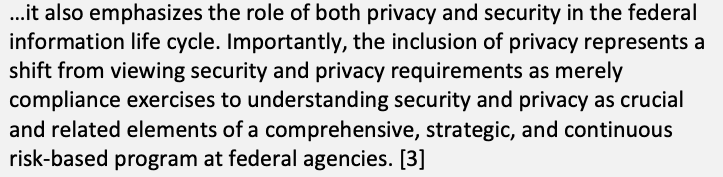
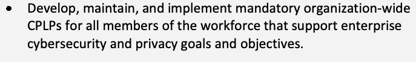
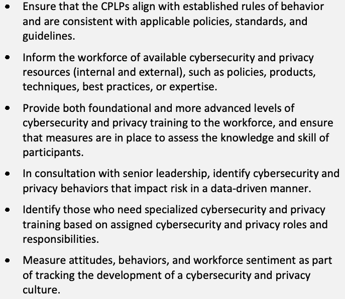
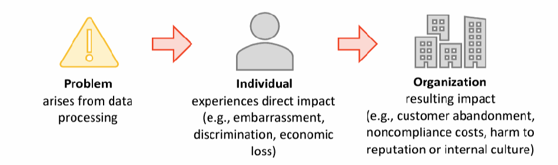
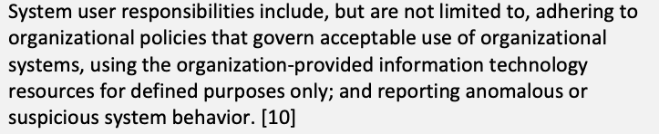
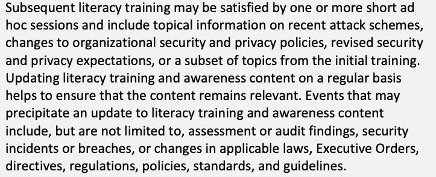
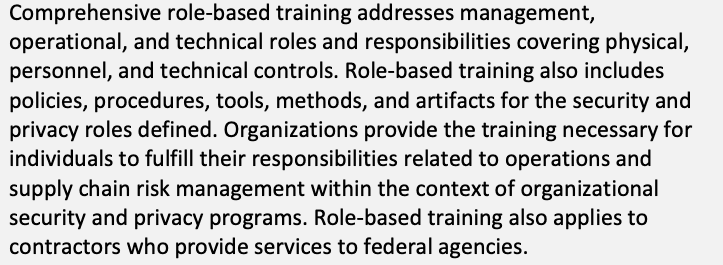
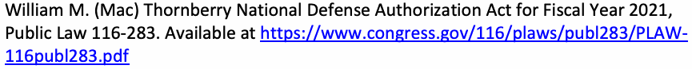

NIST SP 800-50 Rev. 1 日本語訳
英語タイトル : Building a Cybersecurity and Privacy Learning Program日本語タイトル : サイバーセキュリティ・プライバシー学習プログラムの構築
公開日 : 2024-09-12
原文URL : https://csrc.nist.gov/pubs/sp/800/50/r1/final
翻訳編集 : 自動生成
[要約] SP 800-50 Rev. 1 は、連邦機関や組織がサイバーセキュリティ・プライバシー学習プログラム（CPLP）を構築し、ライフサイクルに沿って管理するための指針を示します。計画と戦略、プログラムの設計・実施、評価と改善といった段階に加え、組織の長からシステム利用者までの役割と責任や、プライバシーとセキュリティの文化の醸成を扱います。大規模・小規模の組織や新規にプログラムを構築する組織にも対応でき、推奨事項はカスタマイズでき、測定指標や評価方法の案も示します。
有志による非公式の日本語訳です。NIST および米国商務省が作成・承認・推奨したものではありません。要件の確認にはNIST の正式版 PDFを参照してください。
NIST Special Publication 800
NIST Special Publication 800
NIST SP 800-50r1
NIST SP 800-50r1
Building a Cybersecurity and Privacy Learning Program
サイバーセキュリティ・プライバシー学習プログラムの構築
Marian Merritt
Marian Merritt
Susan Hansche
Susan Hansche
Dr. Brenda Ellis
Dr. Brenda Ellis
Kevin Sanchez-Cherry
Kevin Sanchez-Cherry
Julie Nethery Snyder
Julie Nethery Snyder
Donald Walden
Donald Walden
This publication is available free of charge from: https://doi.org/10.6028/NIST.SP.800-50r1
本刊行物は次のリンクから無料で入手できます：https://doi.org/10.6028/NIST.SP.800-50r1
NIST Special Publication 800
NIST Special Publication 800
NIST SP 800-50r1
NIST SP 800-50r1
Building a Cybersecurity and Privacy Learning Program
サイバーセキュリティ・プライバシー学習プログラムの構築
Marian Merritt, Applied Cybersecurity Division, Information Technology Laboratory
Marian Merritt、Applied Cybersecurity Division, Information Technology Laboratory
Susan Hansche, Cybersecurity and Infrastructure Security Agency, Department of Homeland Security
Susan Hansche、Cybersecurity and Infrastructure Security Agency, Department of Homeland Security
Dr. Brenda Ellis, National Aeronautics and Space Administration
Dr. Brenda Ellis、National Aeronautics and Space Administration
Kevin Sanchez-Cherry, Office of the Chief Information Officer, Department of Transportation
Kevin Sanchez-Cherry、Office of the Chief Information Officer, Department of Transportation
Julie Nethery Snyder, MITRE
Julie Nethery Snyder、MITRE
Donald Walden, Internal Revenue Service
Donald Walden、Internal Revenue Service
This publication is available free of charge from: https://doi.org/10.6028/NIST.SP.800-50r1
本刊行物は次のリンクから無料で入手できます：https://doi.org/10.6028/NIST.SP.800-50r1
September 2024
2024年9月
［米国商務省の紋章。公的な標章のため、この非公式サイトには掲載していない。原本 PDF を参照。］
U.S. Department of Commerce Gina M. Raimondo, Secretary
米国商務省 Gina M. Raimondo 長官
National Institute of Standards and Technology Laurie E. Locascio, NIST Director and Under Secretary of Commerce for Standards and Technology
米国国立標準技術研究所 Laurie E. Locascio, NIST所長 兼 商務省標準技術担当次官
Certain equipment, instruments, software, or materials, commercial or non-commercial, are identified in this paper in order to specify the experimental procedure adequately. Such identification does not imply recommendation or endorsement of any product or service by NIST, nor does it imply that the materials or equipment identified are necessarily the best available for the purpose.
本稿では、実験手順を適切に説明するため、商用・非商用を問わず、特定の機器、計器、ソフトウェア、資料を挙げている。こうした記載は、NISTによるいかなる製品・サービスの推奨または保証を意味せず、記載された資料や機器が当該目的に最適であることを意味するものでもない。
There may be references in this publication to other publications currently under development by NIST in accordance with its assigned statutory responsibilities. The information in this publication, including concepts and methodologies, may be used by federal agencies even before the completion of such companion publications. Thus, until each publication is completed, current requirements, guidelines, and procedures, where they exist, remain operative. For planning and transition purposes, federal agencies may wish to closely follow the development of these new publications by NIST.
本刊行物では、NISTに割り当てられた法的責任に基づいて現在策定中の他の刊行物を参照する場合がある。本刊行物に含まれる情報（概念や方法論を含む）は、関連する補完刊行物が完成する前でも連邦機関が使用できる。したがって、各刊行物が完成するまでは、既存の要件、ガイドライン、手順は引き続き有効である。計画および移行の目的で、連邦機関はNISTによるこれらの新刊行物の策定状況を注意深く確認するとよい。
Organizations are encouraged to review all draft publications during public comment periods and provide feedback to NIST. Many NIST cybersecurity publications, other than the ones noted above, are available at https://csrc.nist.gov/publications.
組織には、公開コメント期間中にすべての草案を確認し、NISTに意見を寄せることを推奨する。上記に記したもの以外にも、多数のNISTサイバーセキュリティ刊行物を https://csrc.nist.gov/publications で入手できる。
Authority This publication has been developed by NIST in accordance with its statutory responsibilities under the Federal Information Security Modernization Act (FISMA) of 2014, 44 U.S.C. § 3551 et seq., Public Law (P.L.) 113-283. NIST is responsible for developing information security standards and guidelines, including minimum requirements for federal information systems, but such standards and guidelines shall not apply to national security systems without the express approval of appropriate federal officials exercising policy authority over such systems. This guideline is consistent with the requirements of the Office of Management and Budget (OMB) Circular A-130.
権限 本刊行物は、2014年連邦情報セキュリティ近代化法（FISMA）、44 U.S.C. § 3551 et seq.、公法（P.L.）113-283に基づく法的責任に従ってNISTが策定した。NISTは、連邦情報システムの最低要件を含む情報セキュリティ標準およびガイドラインの策定を担う。ただし、国家安全保障システムには、そのシステムに関する政策権限を持つ適切な連邦職員が明示的に承認しない限り、これらの標準およびガイドラインは適用されない。本ガイドラインは、行政管理予算局（OMB）通達A-130の要件と整合している。
Nothing in this publication should be taken to contradict the standards and guidelines made mandatory and binding on federal agencies by the Secretary of Commerce under statutory authority. Nor should these guidelines be interpreted as altering or superseding the existing authorities of the Secretary of Commerce, Director of the OMB, or any other federal official. This publication may be used by nongovernmental organizations on a voluntary basis and is not subject to copyright in the United States. Attribution would, however, be appreciated by NIST.
本刊行物のいかなる記載も、法的権限に基づき商務長官が連邦機関に義務付けた拘束力のある標準およびガイドラインに反するものと解釈してはならない。また、本ガイドラインを、商務長官、OMB長官、その他の連邦職員が有する既存の権限を変更または置き換えるものと解釈してはならない。非政府組織は本刊行物を任意に利用でき、米国では著作権の対象ではない。ただし、NISTは出典の明記を歓迎する。
NIST Technical Series Policies Copyright, Use, and Licensing Statements NIST Technical Series Publication Identifier Syntax
NIST技術シリーズの方針、著作権・利用・ライセンスに関する声明、NIST技術シリーズ刊行物識別子の構文
Publication History Approved by the NIST Editorial Review Board on 2024-08-09 Supersedes NIST SP 800-50 (October 2003) https://doi.org/10.6028/NIST.SP.800-50; Supersedes NIST SP 800-16 (April 1998) https://doi.org/10.6028/NIST.SP.800-16
刊行履歴 NIST編集審査委員会承認日: 2024-08-09。NIST SP 800-50（2003年10月）を置き換える。https://doi.org/10.6028/NIST.SP.800-50; NIST SP 800-16（1998年4月）を置き換える。https://doi.org/10.6028/NIST.SP.800-16
How to Cite this NIST Technical Series Publication: Merritt M, Hansche S, Ellis B, Sanchez-Cherry K, Snyder JN, Walden D (2024) Building a Cybersecurity and Privacy Learning Program. (National Institute of Standards and Technology, Gaithersburg, MD), NIST Special Publication (SP) NIST SP 800-50r1. https://doi.org/10.6028/NIST.SP.800-50r1
NIST技術シリーズ刊行物の引用方法: Merritt M, Hansche S, Ellis B, Sanchez-Cherry K, Snyder JN, Walden D (2024) Building a Cybersecurity and Privacy Learning Program. (National Institute of Standards and Technology, Gaithersburg, MD), NIST Special Publication (SP) NIST SP 800-50r1. https://doi.org/10.6028/NIST.SP.800-50r1
Author ORCID iDs
著者のORCID iD
Marian Merritt: 0000-0002-2116-8959
Marian Merritt: 0000-0002-2116-8959
Contact Information sp800-50-comments@nist.gov National Institute of Standards and Technology Attn: Applied Cybersecurity Division, Information Technology Laboratory 100 Bureau Drive (Mail Stop 2000) Gaithersburg, MD 20899-2000
連絡先 sp800-50-comments@nist.gov National Institute of Standards and Technology 宛先: Applied Cybersecurity Division, Information Technology Laboratory 100 Bureau Drive (Mail Stop 2000) Gaithersburg, MD 20899-2000
Additional Information Additional information about this publication is available at https://csrc.nist.gov/pubs/sp/800/50/r1/final, including related content, potential updates, and document history.
追加情報 本刊行物に関する追加情報（関連資料、今後の更新、文書履歴を含む）は https://csrc.nist.gov/pubs/sp/800/50/r1/final に掲載されている。
All comments are subject to release under the Freedom of Information Act (FOIA).
すべてのコメントは、情報公開法（FOIA）に基づく開示の対象となる。
Abstract
概要
This publication provides guidance for federal agencies and organizations to develop and manage a life cycle approach to building a Cybersecurity and Privacy Learning Program (CPLP). The approach is intended to address the needs of large and small organizations as well as those building an entirely new program. The information leverages broadly accepted standards, regulations, legislation, and best practices. The recommendations are customizable and may be implemented as part of an organization-wide process that manages awareness, training, and education programs for a diverse set of federal employee audiences. The program should encourage behavior change as part of risk management and lead to developing a privacy and security culture in the organization. The guidance also includes suggested metrics and evaluation methods to regularly improve and update the program as needs evolve.
本刊行物は、連邦機関や組織がサイバーセキュリティ・プライバシー学習プログラム（CPLP）を構築し、ライフサイクルに沿って管理するための指針を示す。このアプローチは、大規模・小規模の組織に加え、まったく新しいプログラムを構築する組織のニーズにも対応することを意図している。ここで示す情報は、広く受け入れられている標準、規制、法令、ベストプラクティスを活用している。推奨事項はカスタマイズ可能であり、多様な連邦職員を対象とする意識向上、トレーニング、教育プログラムを管理する組織全体のプロセスの一部として実施できる。プログラムは、リスク管理の一環として行動変容を促し、組織におけるプライバシーとセキュリティの文化の醸成につながるものであるべきである。さらに、ニーズの変化に応じてプログラムを定期的に改善・更新するための測定指標や評価方法の案も示す。
Keywords
キーワード
awareness; behavior change; cybersecurity; education; learning program; privacy; privacy culture; role-based; security culture; training.
意識向上、行動変容、サイバーセキュリティ、教育、学習プログラム、プライバシー、プライバシー文化、役割別、セキュリティ文化、トレーニング。
Reports on Computer Systems Technology
コンピュータシステム技術に関する報告書
The Information Technology Laboratory (ITL) at the National Institute of Standards and Technology (NIST) promotes the U.S. economy and public welfare by providing technical leadership for the Nation’s measurement and standards infrastructure. ITL develops tests, test methods, reference data, proof of concept implementations, and technical analyses to advance the development and productive use of information technology. ITL’s responsibilities include the development of management, administrative, technical, and physical standards and guidelines for the cost-effective cybersecurity and privacy of other than national security-related information in federal information systems. The Special Publication 800-series reports on ITL’s research, guidelines, and outreach efforts in information system security, and its collaborative activities with industry, government, and academic organizations.
国立標準技術研究所（NIST）の情報技術研究所（ITL）は、米国の計量・標準基盤に技術的なリーダーシップを発揮し、米国経済と公共の福祉を促進する。ITLは、情報技術の発展と生産的な利用を推進するため、試験、試験方法、参照データ、概念実証の実装、技術分析を開発する。ITLの責務には、連邦情報システムにおける国家安全保障関連以外の情報のサイバーセキュリティとプライバシーを費用対効果よく確保するため、管理、運用、技術、物理面の標準およびガイドラインを策定することが含まれる。特別刊行物800シリーズは、情報システムセキュリティに関するITLの研究、ガイドライン、普及活動、および産業界、政府、学術機関との協働活動を報告する。
Patent Disclosure Notice
特許開示に関する通知
NOTICE: ITL has requested that holders of patent claims whose use may be required for compliance with the guidance or requirements of this publication disclose such patent claims to ITL. However, holders of patents are not obligated to respond to ITL calls for patents and ITL has not undertaken a patent search in order to identify which, if any, patents may apply to this publication.
通知: ITLは、本刊行物の指針または要件に準拠するために使用が必要となる可能性のある特許請求の保有者に対し、その請求項をITLに開示するよう求めている。ただし、特許保有者にはITLの特許開示要請に応じる義務はなく、またITLは本刊行物に適用され得る特許を特定するための特許調査を実施していない。
As of the date of publication and following call(s) for the identification of patent claims whose use may be required for compliance with the guidance or requirements of this publication, no such patent claims have been identified to ITL.
刊行日現在、本刊行物の指針または要件への準拠に使用が必要となる可能性のある特許請求項の特定を求めた後も、そのような請求項はITLに報告されていない。
No representation is made or implied by ITL that licenses are not required to avoid patent infringement in the use of this publication.
本刊行物の使用にあたり特許侵害を回避するためのライセンスが不要であると、ITLが表明または示唆するものではない。
Table of Contents
目次
Executive Summary — 1
エグゼクティブサマリー — 1
1. Introduction — 3
1. はじめに — 3
1.5.1. Privacy Risk Management Concepts to Emphasize — 9
1.5.1. 強調すべきプライバシーリスク管理の概念 — 9
1.5.2. Coordinating Cybersecurity and Privacy Learning Efforts — 10
1.5.2. サイバーセキュリティとプライバシーの学習活動の調整 — 10
1.6.1. Head of Organization — 11
1.6.1. 組織の長 — 11
1.6.2. Senior Leadership — 12
1.6.2. 上級管理職 — 12
1.6.3. CPLP Managers — 12
1.6.3. CPLP管理者 — 12
1.6.4. Managers — 13
1.6.4. 管理者 — 13
1.6.5. System User — 14
1.6.5. システム利用者 — 14
2. CPLP Plan and Strategy — 15
2. CPLP計画と戦略 — 15
2.2.1. Examples of Learning Program Policy Statements — 17
2.2.1. 学習プログラムの方針文の例 — 17
2.3.1. Scenario 1: Protecting Sensitive Printed Data — 19
2.3.1. シナリオ1: 機微な印刷データの保護 — 19
2.3.2. Scenario 2: Developing a New Regulation-Required Training Program — 20
2.3.2. シナリオ2: 規制で義務付けられた新たなトレーニングプログラムの策定 — 20
2.4.1. Measurements — 21
2.4.1. 測定 — 21
2.4.2. From Measurements to Metrics — 24
2.4.2. 測定値から指標へ — 24
2.5.1. All Users — 26
2.5.1. すべての利用者 — 26
2.5.2. Privileged Access Account Holders — 27
2.5.2. 特権アクセスアカウントの保有者 — 27
2.5.3. Staff With Significant Cybersecurity and/or Privacy Responsibilities — 28
2.5.3. サイバーセキュリティおよび／またはプライバシーに関する重要な責任を担う職員 — 28
2.5.4. Determining Who Has Significant Cybersecurity and/or Privacy Responsibilities — 28
2.5.4. サイバーセキュリティおよび／またはプライバシーに関する重要な責任を担う者の特定 — 28
2.7.1. Awareness Activities — 30
2.7.1. 意識向上活動 — 30
2.7.2. Experiential Learning — 30
2.7.2. 体験型学習 — 30
2.7.3. Training Content — 31
2.7.3. トレーニング内容 — 31
2.10.1. Establishing a CPLP Budget — 33
2.10.1. CPLP予算の策定 — 33
2.10.2. CPLP Staff and Locations — 35
2.10.2. CPLPの職員と拠点 — 35
3. CPLP Analysis and Design — 38
3. CPLPの分析と設計 — 38
3.1.1. Importance of the Analysis Phase — 39
3.1.1. 分析フェーズの重要性 — 39
3.1.2. Steps of the Analysis Phase — 40
3.1.2. 分析フェーズの手順 — 40
3.2.1. Steps of the Design Phase — 43
3.2.1. 設計フェーズの手順 — 43
4. CPLP Development and Implementation — 49
4. CPLPの開発と実施 — 49
4.1.1. General Guidelines for Developing or Acquiring New CPLP Materials — 49
4.1.1. CPLPの新たな教材を開発または調達するための一般指針 — 49
4.1.2. Developing New Materials for the “All User” Learning Program — 51
4.1.2. 「すべての利用者」向け学習プログラムの新たな教材を開発する — 51
4.1.3. Developing New Materials for the Privileged Access Account Holders Learning Program — 52
4.1.3. 特権アクセスアカウント保有者向け学習プログラムの新たな教材を開発する — 52
4.1.4. Developing New Materials for Those With Significant Cybersecurity and/or Privacy Responsibilities — 53
4.1.4. サイバーセキュリティおよび／またはプライバシーに関する重要な責任を担う職員向けの新たな教材を開発する — 53
4.1.5. Acquiring Learning Materials From External Sources — 53
4.1.5. 外部情報源から学習教材を調達する — 53
4.1.6. Conducting Learner Testing on New CPLP Elements — 53
4.1.6. CPLPの新たな要素について受講者テストを実施する — 53
4.2.1. Steps for Implementing a New CPLP Element — 54
4.2.1. CPLPの新たな要素を実施する手順 — 54
5. CPLP Assessment and Improvement — 57
5. CPLPの評価と改善 — 57
5.2.1 Measurements and Metrics — 58
5.2.1. 測定と指標 — 58
5.2.2 Regulatory Compliance Reporting — 58
5.2.2. 規制遵守の報告 — 58
5.2.3 Evaluating CPLP Effectiveness — 59
5.2.3. CPLPの有効性を評価する — 59
5.2.4. Reviewing the CPLP Assessment Report with Senior Leadership — 64
5.2.4. CPLP評価報告書を上級管理職と確認する — 64
6. Summary — 66
6. まとめ — 66
References — 67
参考文献 — 67
Appendix A. Examples of Cybersecurity and Privacy Learning Program Maturity Levels — 69
付録A サイバーセキュリティ・プライバシー学習プログラムの成熟度レベルの例 — 69
Appendix B. Glossary — 72
付録B 用語集 — 72
Appendix C. Change Log — 77
付録C 改訂履歴 — 77
List of Tables
表一覧
Table 1. Elements of a CPLP strategy — 19
表1 CPLP戦略の構成要素 — 19
Table 2. Examples of learning goals, objectives, and outcomes — 22
表2 学習目標、目的、成果の例 — 22
Table 3. Examples of CPLP maturity levels — 69
表3 CPLP成熟度レベルの例 — 69
List of Figures
図一覧
Fig. 1. Cybersecurity and Privacy Learning Program life cycle — 6
図1 サイバーセキュリティ・プライバシー学習プログラムのライフサイクル — 6
Fig. 2. Cybersecurity and privacy risk relationship — 8
図2 サイバーセキュリティリスクとプライバシーリスクの関係 — 8
Fig. 3. Relationship between privacy risks and organizational risks — 10
図3 プライバシーリスクと組織リスクの関係 — 10
Fig. 4. CPLP learning program audience segments — 26
図4 CPLPの学習プログラム対象者の区分 — 26
Acknowledgments
謝辞
This publication was developed through the efforts of a dedicated team of volunteer authors. We express our thanks to Jessica Dickson, National Institute of Standards and Technology (NIST); Susanne Furman, NIST; Julie Haney, NIST; Dan Jacobs, Office of Personnel Management; Jody Jacobs, NIST; Eric Gray, Department of Education; Sarah Moffatt, National Institutes of Health; Dylan Gilbert, NIST; Naomi Lefkovitz, NIST; Jeremy Licata, NIST; Rodney Petersen, NIST; Eduardo Takamura, NIST; and Victoria Yan Pillitteri, NIST.
本刊行物は、献身的なボランティア執筆者チームの尽力により作成された。Jessica Dickson（国立標準技術研究所、NIST）、Susanne Furman（NIST）、Julie Haney（NIST）、Dan Jacobs（人事管理局）、Jody Jacobs（NIST）、Eric Gray（教育省）、Sarah Moffatt（国立衛生研究所）、Dylan Gilbert（NIST）、Naomi Lefkovitz（NIST）、Jeremy Licata（NIST）、Rodney Petersen（NIST）、Eduardo Takamura（NIST）、Victoria Yan Pillitteri（NIST）に感謝する。
Executive Summary
エグゼクティブサマリー
Ensuring that a federal organization’s workforce is aware of and prepared to respond appropriately and effectively to cybersecurity and privacy risks is an important effort that requires a strategic approach based on thoughtful planning, resource considerations, and leadership-driven decision-making. This long-awaited update to the 2003 NIST Special Publication (SP) 800-50, Building an Information Technology Security Awareness and Training Program, provides guidance to create and manage a program that includes cybersecurity and privacy awareness campaigns, role-based training, and other workforce education programs. These programs combine to create an overall Cybersecurity and Privacy Learning Program (CPLP) that is part of a larger organizational effort to reduce cybersecurity and privacy risks. The resulting CPLP supports federal requirements and incorporates industry-recognized best practices for risk management.
連邦組織の職員がサイバーセキュリティとプライバシーのリスクを認識し、適切かつ効果的に対応できるよう備えることは、慎重な計画、リソースの考慮、リーダーシップ主導の意思決定に基づく戦略的な取り組みを要する重要な課題である。長らく待たれていた2003年刊行のNIST特別刊行物（SP）800-50『情報技術セキュリティ意識向上・トレーニングプログラムの構築』の改訂版として、本刊行物はサイバーセキュリティとプライバシーに関する意識向上キャンペーン、役割別トレーニング、その他の職員教育プログラムを含むプログラムの構築・管理指針を示す。これらを統合したサイバーセキュリティ・プライバシー学習プログラム（CPLP）は、サイバーセキュリティとプライバシーのリスクを低減する組織全体の取り組みの一部となる。CPLPは連邦政府の要件を支援し、リスク管理に関して業界で認められたベストプラクティスを取り入れる。
In addition to meeting statutory responsibilities under the Federal Information Security Management Act (FISMA) [2], this Special Publication supports the National Defense Authorization Act of 2021 (NDAA) [1] to “publish standards and guidelines for improving cybersecurity awareness of employees and contractors of Federal agencies.”1 Including privacy as a foundational element in the CPLP reflects the guidance found in the 2016 update to the Office of Management and Budget (OMB) Circular A-130:
連邦情報セキュリティ管理法（FISMA）[2]に基づく法的責任を果たすことに加え、本特別刊行物は2021年国防権限法（NDAA）[1]の「連邦機関の職員および契約職員のサイバーセキュリティ意識を向上させる標準とガイドラインを公表する」という要件を支援する。1 CPLPの基礎要素としてプライバシーを含めることは、行政管理予算局（OMB）通達A-130の2016年改訂版の指針を反映している。
…it also emphasizes the role of both privacy and security in the federal information life cycle. Importantly, the inclusion of privacy represents a shift from viewing security and privacy requirements as merely compliance exercises to understanding security and privacy as crucial and related elements of a comprehensive, strategic, and continuous risk-based program at federal agencies. [3]
原本PDFの抜粋画像

…連邦政府の情報ライフサイクルにおけるプライバシーとセキュリティ双方の役割も強調している。重要な点として、プライバシーを含めることは、セキュリティとプライバシーの要件を単なるコンプライアンス作業とみなす考え方から、両者を連邦機関における包括的、戦略的、継続的なリスクベースプログラムの不可欠かつ相互に関連する要素と捉える考え方への転換を意味する。[3]
Additionally, this update includes elements previously found in SP 800-16, Information Technology Security Training Requirements: A Role- and Performance-Based Model [4], which identified federal agency and organizational work roles that required specialized role-based training for cybersecurity tasks and skills. The relevant content from SP 800-16 has been incorporated into this publication or has been included in SP 800-181r1 [5]. As a result, SP 800-16 will be withdrawn upon the release of this publication.
さらに本改訂版には、SP 800-16『情報技術セキュリティトレーニング要件: 役割・職務遂行ベースモデル』[4]に記載されていた要素も含まれる。同刊行物は、サイバーセキュリティのタスクとスキルに関する専門的な役割別トレーニングを必要とする連邦機関および組織の職務上の役割を特定していた。関連するSP 800-16の内容は本刊行物に組み込まれたか、SP 800-181r1 [5]に収録された。その結果、本刊行物の公開をもってSP 800-16は廃止される。
Everyone in an organization plays a role in the success of an effective cybersecurity and privacy program. For those whose information technology, cybersecurity, or cybersecurity-related job responsibilities require additional or specific training, the NICE Workforce Framework for
組織の効果的なサイバーセキュリティ・プライバシープログラムの成功には、全員が役割を担う。情報技術、サイバーセキュリティ、またはサイバーセキュリティ関連の職務上の責任により、追加または特定のトレーニングを必要とする人については、NICE人材フレームワーク：
Cybersecurity (NICE Framework)2 [5] identifies the specific knowledge and skills necessary to perform tasks associated with work roles in these areas.3
サイバーセキュリティ（NICEフレームワーク）2 [5]は、これらの分野における職務上の役割に関連するタスクを遂行するために必要な具体的な知識とスキルを特定する。3
Users of this publication will find guidance on the steps necessary to:
本刊行物では、次の事項に必要な手順について説明する。
•Build an effective CPLP for all federal organizational personnel, including employees and contractors, that leads to improved norms and behaviors that reduce cybersecurity and privacy risks to the organization while creating a privacy and security culture
•すべての連邦組織の職員（職員および契約職員を含む）を対象に、サイバーセキュリティとプライバシーのリスクを低減する規範・行動を改善し、プライバシーとセキュリティの文化を醸成する効果的なCPLPを構築する
•Identify personnel who require advanced training
•高度なトレーニングを必要とする要員を特定する
•Create a methodology for evaluating the program
•プログラムを評価する方法を作成する
•Engage in ongoing improvement to the program
•プログラムを継続的に改善する
Throughout each section, there are recommendations to enable a program to continually evolve and improve, thereby minimizing privacy and security risks to the organization.
各セクションには、プログラムを継続的に進化・改善させ、組織のプライバシーおよびセキュリティリスクを最小限に抑えるための推奨事項を示す。
This document identifies the phases in the management of a CPLP and is organized as follows:
本書ではCPLPの管理フェーズを特定し、次のように構成する。
•Section 1: Introduction
•セクション1: はじめに
•Section 2: CPLP Plan and Strategy
•セクション2: CPLP計画と戦略
•Section 3: CPLP Analysis and Design
•セクション3: CPLPの分析と設計
•Section 4: CPLP Development and Implementation
•セクション4: CPLPの開発と実施
•Section 5: CPLP Assessment and Improvement
•セクション5: CPLPの評価と改善
1. Introduction
1. はじめに
Reducing and managing cybersecurity and privacy risks require continuous attention from everyone in an organization. A key component of organizational cybersecurity and privacy plans is a learning program, which helps to build an understanding of risks and explain everyone’s role in identifying, responding to, and managing those risks. While learning programs vary in each federal organization, there are fundamental shared elements that can be utilized to create a Cybersecurity and Privacy Learning Program (CPLP) strategy and establish support for implementation, evaluation, and reporting activities. The CPLP effort sits within a larger federal organizational program to address risks, including efforts to reduce risks from physical privacy and security threats, insider threats, and other related human risk management concerns. Such efforts are outside of the scope of this document.
サイバーセキュリティとプライバシーのリスクを低減・管理するには、組織の全員が継続して注意を払う必要がある。組織のサイバーセキュリティ・プライバシー計画における重要な要素は学習プログラムであり、リスクへの理解を深め、リスクの特定、対応、管理における各自の役割を説明する。連邦組織ごとに学習プログラムは異なるが、共通する基本要素を活用して、CPLP戦略を策定し、実施、評価、報告の各活動に対する支援を確立できる。CPLPの取り組みは、物理的なプライバシー・セキュリティ脅威、内部関係者の脅威、その他の人的リスク管理上の懸念によるリスクを低減する取り組みを含む、連邦組織全体のより大きなリスク対応プログラムの一部である。これらの取り組みは本書の対象外である。
For ease of use, the remainder of this document will use the term “CPLP” to refer to all elements of cybersecurity and privacy awareness, training, and educational activities to include other programs with titles such as awareness training, practical exercises (e.g., tabletop exercises, role-playing simulations, cyber ranges, or phishing campaigns), topic-based training, role-based training, and educational programs. It is not necessary for organizations to rename their programs as CPLP; this term is applied generically.
本書では、使いやすさのため、「CPLP」という語を、サイバーセキュリティおよびプライバシーの意識向上、トレーニング、教育活動の全要素を指す総称として用いる。意識向上トレーニング、実践演習（机上演習、ロールプレイ、サイバーレンジ、フィッシングキャンペーンなど）、トピック別トレーニング、役割別トレーニング、教育プログラムといった名称の活動も含む。組織が自らのプログラム名をCPLPに変更する必要はない。この語は一般的な総称として用いる。
The previous version of SP 800-50 defined awareness, training, and education as separate elements in a learning continuum. Research efforts [6][7] conducted with Federal Government training managers have shown that these terms have different meanings and can lead to confusion when describing the broader purpose of building a CPLP. While some managers may refer to programs as “awareness and training” or “awareness training,” the terms are applied inconsistently across organizations. Regardless of what an organization calls its program, the overarching goal of a CPLP is to provide opportunities for learning at all levels or stages of one’s career. It is about creating programs where learning can take place.
SP 800-50の旧版では、意識向上、トレーニング、教育を学習の連続体における別個の要素として定義していた。連邦政府のトレーニング管理者と実施した調査[6][7]によると、これらの語は意味が異なり、CPLP構築のより広い目的を説明する際に混乱を招くことがある。一部の管理者はプログラムを「意識向上とトレーニング」または「意識向上トレーニング」と呼ぶが、組織間で用語の使い方に一貫性がない。組織がプログラムを何と呼ぶかにかかわらず、CPLPの全体的な目標は、職歴のあらゆるレベルまたは段階で学ぶ機会を提供することである。学習が行われるプログラムを構築することが重要である。
This Special Publication also uses the term “learner” to describe individuals in any of the learning program audience segments. The term “learner” can be found in SP 800-181r1 [5], where it refers to an individual who is acquiring specialized knowledge or developing a skill. This definition is useful here since it describes all participants in a “learning program.” This document will refer to the program as a CPLP or CPLPs, as some organizations may require multiple programs to fulfill the learning requirements of the entire workforce.
本特別刊行物では、学習プログラムの対象者区分に属するすべての人を「学習者」と呼ぶ。「学習者」という語はSP 800-181r1 [5]にもあり、専門知識を習得中またはスキルを開発中の個人を指す。この定義は「学習プログラム」の全参加者を表すため、本書でも有用である。職員全体の学習要件を満たすため複数のプログラムが必要な組織もあることから、プログラムはCPLPまたは複数形のCPLPsと表記する。
1.1. Purpose
1.1. 目的
This document provides guidelines for building and maintaining comprehensive CPLPs for federal organizations and includes awareness activities and campaigns, awareness training, practical exercises, topic-based training, role-based training, and educational programs. The document includes guidance on how an organization can create a strategic program plan and ensure that there are appropriate resources to meet the organization’s learning goals.
本書は、連邦組織が包括的なCPLPを構築・維持するための指針を示し、意識向上活動とキャンペーン、意識向上トレーニング、実践演習、トピック別トレーニング、役割別トレーニング、教育プログラムを扱う。また、組織が戦略的なプログラム計画を策定し、学習目標を達成するための適切なリソースを確保する方法についても指針を示す。
This publication is intended to serve a diverse audience, including:
本刊行物は、次のような多様な読者を対象とする。
•Workforce and learning professionals
•人材および学習の専門家
Individuals associated with designing, developing, implementing, assessing, o operating, managing, and improving CPLPs for federal agencies and organizations
連邦機関・組織のCPLPを設計、開発、実施、評価、運用、管理、改善する個人
Individuals responsible for overseeing federal human resources, talent o management, contractors, and training programs
連邦政府の人事、人材管理、契約職員、トレーニングプログラムを監督する個人
Individuals responsible for federal CPLPs, learning professionals, and managers, o such as Chief Learning Officers (CLOs) and curriculum developers
連邦政府のCPLPを担当する個人、学習の専門家、管理者（最高学習責任者（CLO）やカリキュラム開発者など）
•Leadership and management
•リーダーシップおよび管理
Individuals responsible for meeting staff learning needs, prioritizing the use of o learning resources, identifying learning gaps, and evaluating learning effectiveness within the workspace
職員の学習ニーズへの対応、学習リソースの利用の優先順位付け、学習上のギャップの特定、職場における学習効果の評価を担う個人
Individuals with information system oversight or governance responsibilities, o such as senior leaders, risk executives, authorizing officials, Chief Information Officers (CIOs), Chief Information Security Officers (CISOs), Data Management Officers (DMOs), and Chief Privacy Officers (CPOs)
情報システムの監督またはガバナンスを担う個人（上級管理職、リスク責任者、認可担当者、最高情報責任者（CIO）、最高情報セキュリティ責任者（CISO）、データ管理責任者（DMO）、最高プライバシー責任者（CPO）など）
Individuals with cybersecurity and privacy management responsibilities (e.g., o managing programs and projects and ensuring that staff members have the appropriate knowledge and skills to perform their work roles), including program and project managers, cybersecurity managers, and security operation managers
サイバーセキュリティ・プライバシー管理を担う個人（プログラムやプロジェクトの管理、職員が職務を遂行するために適切な知識・スキルを確実に備えるようにすることなど）。プログラム・プロジェクトマネージャー、サイバーセキュリティマネージャー、セキュリティ運用マネージャーなどが含まれる。
•Cybersecurity and privacy specialists
•サイバーセキュリティおよびプライバシーの専門家
Workforce members who are responsible for assisting in the identification of o CPLP activities as a subject-matter expert (SME), meeting the requirements of the roles or job functions, identifying learning and/or competency gaps and needs within the organization’s cybersecurity and privacy program, determining necessary customizations, and developing a compliance baseline for the organization
分野専門家（SME）としてCPLP活動を特定する支援、役割または職務機能の要件への対応、組織のサイバーセキュリティ・プライバシープログラムにおける学習上および／またはコンピテンシー上のギャップとニーズの特定、必要なカスタマイズの決定、組織のコンプライアンス基準の策定を担う職員
Key considerations for managers of federal Cybersecurity and Privacy Learning Programs4
原本PDFの抜粋画像
連邦政府のサイバーセキュリティ・プライバシー学習プログラム管理者にとって重要な考慮事項4
•Develop, maintain, and implement mandatory organization-wide CPLPs for all members of the workforce that support enterprise cybersecurity and privacy goals and objectives.
原本PDFの抜粋画像

•• 全職員を対象とする必須の組織全体向けCPLPを策定、維持、実施し、組織全体のサイバーセキュリティ・プライバシーの目標と目的を支援する。
•Ensure that the CPLPs align with established rules of behavior and are consistent with applicable policies, standards, and guidelines.
原本PDFの抜粋画像

•CPLPを確立済みの行動規範に整合させ、適用される方針、標準、ガイドラインに準拠させることを確保する。
•Inform the workforce of available cybersecurity and privacy resources (internal and external), such as policies, products, techniques, best practices, or expertise.
•利用可能な（内部・外部の）サイバーセキュリティ・プライバシーのリソース（方針、製品、技法、ベストプラクティス、専門知識など）を職員に知らせる。
•Provide both foundational and more advanced levels of cybersecurity and privacy training to the workforce, and ensure that measures are in place to assess the knowledge and skill of participants.
•基礎的なレベルから上級のレベルまでのサイバーセキュリティ・プライバシーのトレーニングを職員に提供し、参加者の知識とスキルを評価する手段を設ける。
•In consultation with senior leadership, identify cybersecurity and privacy behaviors that impact risk in a data-driven manner.
•上級管理職と協議し、リスクに影響するサイバーセキュリティ・プライバシー関連の行動を、データに基づいて特定する。
•Identify those who need specialized cybersecurity and privacy training based on assigned cybersecurity and privacy roles and responsibilities.
•割り当てられたサイバーセキュリティ・プライバシーの役割と責任に基づき、専門的なサイバーセキュリティ・プライバシーのトレーニングを必要とする人を特定する。
•Measure attitudes, behaviors, and workforce sentiment as part of tracking the development of a cybersecurity and privacy culture.
•サイバーセキュリティ・プライバシー文化の醸成状況を追跡する一環として、態度、行動、職員の意識を測定する。
1.2. Scope
1.2. 範囲
This guide describes how a federal organization can design, develop, implement, and maintain a CPLP as part of an enterprise cybersecurity and privacy program. This includes identifying the learning needs of the organization’s personnel, including federal full-time or part-time employees, interns, retirees, contractors, external partners, consultants, researchers, and any users who access the enterprise system or data in support of the organizational mission.
本ガイドは、連邦組織が組織全体のサイバーセキュリティ・プライバシープログラムの一部としてCPLPを設計、開発、実施、維持する方法を説明する。これには、連邦政府の常勤・非常勤職員、インターン、退職者、契約職員、外部パートナー、コンサルタント、研究者、および組織のミッションを支援するために組織のシステムやデータへアクセスする利用者を含む、組織職員の学習ニーズの特定が含まれる。
CPLPs are inclusive of various other programs, such as awareness programs, social engineering campaigns, new hire training, regular training, technical training, role-based training, and other relevant learning activities conducted within the organization or through external resources (e.g., courses, certificates, and advanced programs). Additionally, CPLPs sit within a larger federal organizational effort to address and reduce risks from physical privacy and security threats, insider threats, and other related human risk management concerns. Those efforts are outside of the scope of this document.
CPLPには、意識向上プログラム、ソーシャルエンジニアリングキャンペーン、新規採用者向けトレーニング、定期トレーニング、技術トレーニング、役割別トレーニング、組織内または外部リソース（講座、資格、上級プログラムなど）を通じて実施するその他の関連学習活動が含まれる。また、CPLPは、物理的なプライバシー・セキュリティ脅威、内部関係者の脅威、その他の人的リスク管理上の懸念によるリスクに対処し低減する、連邦組織全体のより大きな取り組みの一部である。これらの取り組みは本書の対象外である。
1.3. CPLP Life Cycle
1.3. CPLPのライフサイクル
CPLPs must have actively managed plans throughout their life cycles, which requires attention and adjustment over time. CPLP managers should carefully and thoughtfully outline, discuss, review, and document the CPLP’s goals and available options. When the owners of the organization’s CPLP adopt an effective strategy and develop a proper planning approach with measurement and feedback throughout the year, the entire organization remains connected to the CPLP’s objectives. Figure 1 shows the key phases of building and managing a learning program: Plan and Strategy, Analysis and Design, Development and Implementation, and Assessment and Improvement.
CPLPはライフサイクル全体を通じて積極的に管理される計画を備えなければならず、そのためには継続的な注意と適時の調整が必要である。CPLP管理者は、CPLPの目標と利用可能な選択肢を慎重かつ十分に整理し、話し合い、見直し、文書化すべきである。組織のCPLPの責任者が効果的な戦略を採用し、年間を通じた測定とフィードバックを含む適切な計画手法を策定すれば、組織全体がCPLPの目的に沿って取り組める。図1は学習プログラムを構築・管理する主要フェーズ、すなわち計画と戦略、分析と設計、開発と実施、評価と改善を示す。
![Fig. 1. Cybersecurity and Privacy Learning Program life cycle. A central dark blue circle with an icon of three people and the words Learning Program is surrounded by a ring of four curved segments joining four icon circles at the corners. Clockwise from the upper right, the phases are labeled Plan & Strategy (icon of people with a game-plan diagram), Analysis & Design (magnifying glass), Development & Implementation (gears above a group of people), and Assessment & Improvement (rising bar chart with circular arrows).](assets/50r1/p0016-figure-01.png)
図1 サイバーセキュリティ・プライバシー学習プログラムのライフサイクル。中央に、3 人の人物のアイコンと Learning Program（学習プログラム）の文字がある濃い青の円があり、その周りを 4 つの弧からなる輪が囲み、四隅のアイコンの円を結んでいる。右上から時計回りに、Plan & Strategy（計画と戦略。人物と作戦図のアイコン）、Analysis & Design（分析と設計。虫眼鏡）、Development & Implementation（開発と実施。人々の上の歯車）、Assessment & Improvement（評価と改善。円形の矢印と上昇する棒グラフ）のフェーズが記されている。
Fig. 1. Cybersecurity and Privacy Learning Program life cycle
図1 サイバーセキュリティ・プライバシー学習プログラムのライフサイクル
These phases can occur in sequence or simultaneously. At any time during the life cycle, CPLP managers and their teams can develop curriculum, evaluate instructor feedback, send out practical exercise email quizzes, design posters for awareness, or develop a presentation for senior leadership. Consider this diagram a reminder of the breadth of work.
これらのフェーズは順番に、または同時に進行する。ライフサイクルのどの時点でも、CPLP管理者とチームはカリキュラムを開発し、講師からのフィードバックを評価し、実践演習用のメールクイズを配信し、意識向上ポスターをデザインし、上級管理職向けのプレゼンテーションを作成できる。この図は作業の幅広さを思い起こすためのものである。
In a broad sense, CPLPs are valued elements of the organization’s learning culture. To be effective, the CPLPs must be linked to organizational goals and viewed as adaptive, continuous, and evolving. In a learning organization, personnel can expand and enhance their current capabilities to understand and meet new mission requirements. Personnel are respected for their ability to create and inspire others and are active in creating life-long learning achievements. If an organization offers other learning programs (e.g., career development, leadership, and executive development), CPLPs need to be similarly integrated into the enterprise-wide learning structure.
広い意味で、CPLPは組織の学習文化を支える重要な要素である。効果を上げるには、CPLPを組織の目標に結び付け、適応的、継続的、発展的なものとして位置付ける必要がある。学習する組織では、要員は新たなミッション要件を理解し満たすため、現在の能力を拡張・強化できる。要員は創造し他者を鼓舞する能力を尊重され、生涯にわたる学びの実現に積極的に取り組む。組織がキャリア開発、リーダーシップ開発、幹部育成など他の学習プログラムを提供する場合、CPLPも組織全体の学習体系に同様に統合する必要がある。
1.4. Developing a Cybersecurity and Privacy Culture
1.4. サイバーセキュリティ・プライバシー文化の醸成
Developing a cybersecurity and privacy culture is an important component of establishing a successful CPLP. The culture of the organization should emphasize, reinforce, and drive its desired behaviors toward cybersecurity and privacy. Risks increase when the dominant culture fails to recognize the value of engaging individuals in the efforts to support cybersecurity and privacy best practices. There are two risk sectors that the CPLP can address:
サイバーセキュリティとプライバシーの文化を醸成することは、CPLPを成功させる重要な要素である。組織文化は、サイバーセキュリティとプライバシーに関して望ましい行動を重視し、強化し、促すべきである。サイバーセキュリティ・プライバシーのベストプラクティスを支援する取り組みに個人を関与させる価値を、組織の支配的な文化が認識しない場合、リスクは高まる。CPLPが対処できるリスク領域は2つある。
1.Technical risks — Systems are poorly designed, unpatched, or similarly compromised from the ideal state. This can be addressed with topic-based and role-based training designed for practitioners with significant cybersecurity and/or privacy responsibilities.
1.技術的リスク — システムの設計不良、パッチ未適用などにより、理想的な状態が損なわれている。サイバーセキュリティおよび／またはプライバシーに関する重要な責任を担う実務者向けのトピック別・役割別トレーニングで対処できる。
2.Human risks — Individuals fail to maintain their cybersecurity and privacy standards, or systems have been poorly configured and allow individuals to expose the organization to undue threats through a variety of human failures.
2.人的リスク — 個人がサイバーセキュリティおよびプライバシーの基準を維持できない、またはシステムの設定不良によって、人為的な失敗を通じて組織が過度な脅威にさらされる。
When a CPLP is valued in the organization’s culture, the ability to address both types of risk increases. The organization’s leaders establish a CPLP as a significant component of managing risks by supporting, championing, and participating in learning activities, from awareness campaigns to role-based training. CPLP learning managers create rigorous measurement systems to evaluate the workforce’s attitudes, engagement, and support for the program. CPLP activities contribute to and help measure the organization’s cybersecurity and privacy culture. Human resource leaders reinforce those cultural norms by ensuring that CPLP messaging is part of onboarding and other workplace materials. Together, these efforts set the tone for the entire organization.
CPLPが組織文化の中で重視されると、両方のリスクに対処する能力が高まる。組織のリーダーは、意識向上キャンペーンから役割別トレーニングまで、学習活動を支援し、推進し、参加することで、CPLPをリスク管理の重要な要素として確立する。CPLPの学習管理者は、職員の態度、関与、プログラムへの支持を評価する厳格な測定システムを構築する。CPLP活動は、組織のサイバーセキュリティ・プライバシー文化の形成と測定に貢献する。人事リーダーは、CPLPのメッセージを新人研修やその他の職場資料に含め、文化的規範を強化する。これらの取り組みが一体となって、組織全体の方向性を定める。
People are an organization’s greatest asset. A cybersecurity and privacy culture supports an environment in which the entire workforce is well-versed in cybersecurity and privacy risk management needs, expectations, and values. An organization, in turn, supports an effective cybersecurity and privacy culture when it understands the needs of the workforce and provides education and training to help employees and contractors learn expected cybersecurity and privacy behaviors. Any effective learning activity can be incorporated into a CPLP when it is respectful, inclusive, and helps learners understand their roles in the organization. The content should indicate to the learner that they are a valued participant in helping the organization manage risks. The workforce appreciates that they will contribute to the organization’s positive cybersecurity and privacy culture with the knowledge and skills they acquire by participating in the CPLP.
人は組織にとって最大の資産である。サイバーセキュリティ・プライバシー文化は、職員全体がサイバーセキュリティ・プライバシーのリスク管理に関するニーズ、期待、価値を十分に理解する環境を支える。一方、組織は職員のニーズを理解し、従業員と契約職員が期待される行動を学べるよう教育とトレーニングを提供することで、効果的な文化を支える。敬意を払い、包摂的であり、学習者が組織における自らの役割を理解できる学習活動は、CPLPに組み込むことができる。教材は、学習者が組織のリスク管理を支援する大切な参加者であることを伝えるべきである。職員は、CPLPへの参加を通じて得た知識とスキルで、組織の健全なサイバーセキュリティ・プライバシー文化に貢献できると認識する。
Organizations and system owners must develop a CPLP approach that champions every user’s responsibility to protect information and assets. New technologies and risks will continue to require an organization-wide approach to managing cybersecurity and privacy risks. The NIST Cybersecurity Framework (CSF) [8], Privacy Framework [9], and Risk Management Framework (RMF) [10] highlight the importance of awareness and training for personnel as well as monitoring and improving risk management practices.
組織およびシステム所有者は、すべての利用者が情報と資産を保護する責任を担うことを促すCPLPのアプローチを策定しなければならない。新しい技術やリスクに対応するには、組織全体でサイバーセキュリティ・プライバシーリスクを管理する取り組みが今後も必要である。NISTサイバーセキュリティフレームワーク（CSF）[8]、プライバシーフレームワーク[9]、リスク管理フレームワーク（RMF）[10]は、要員向けの意識向上とトレーニングに加え、リスク管理の実践を監視・改善する重要性を強調している。
1.5. Relationship Between Cybersecurity and Privacy
1.5. サイバーセキュリティとプライバシーの関係
While cybersecurity and privacy are independent and separate disciplines, some of their objectives overlap. Cybersecurity programs are responsible for protecting information, information systems, and operational technologies from unauthorized access, use, disclosure, disruption, modification, or destruction (i.e., unauthorized system activity or behavior) in order to provide confidentiality, integrity, availability, and safety. Privacy programs are responsible for managing risks to individuals that are associated with data processing throughout the information life cycle5 in order to provide predictability, manageability, and disassociability, as well as ensure compliance with applicable privacy requirements. Managing cybersecurity risks contributes to managing privacy risks. However, managing cybersecurity risks alone is not sufficient, as privacy risks can also arise by means unrelated to cybersecurity incidents, as illustrated in Fig. 2 [9].
サイバーセキュリティとプライバシーは独立した別個の分野だが、目標の一部は重なっている。サイバーセキュリティプログラムは、機密性、完全性、可用性、安全性を確保するため、情報、情報システム、運用技術を未認可のアクセス、使用、開示、中断、改変、破壊（すなわち、未認可のシステム活動や行為）から保護する。プライバシープログラムは、情報ライフサイクル全体5にわたるデータ処理に関連する個人のリスクを管理し、予測可能性、管理可能性、関連付け不能性を確保するとともに、適用されるプライバシー要件への準拠を担う。サイバーセキュリティリスクの管理はプライバシーリスクの管理にも寄与する。しかし、図2 [9]に示すように、プライバシーリスクはサイバーセキュリティインシデントとは無関係な原因でも生じるため、サイバーセキュリティリスクの管理だけでは不十分である。
Fig. 2. Cybersecurity and privacy risk relationship
図2 サイバーセキュリティリスクとプライバシーリスクの関係
For example, an organization may combine de-identified data with a new data set during data processing, resulting in re-identification. Similarly, a de-identified data set may be publicly released but result in re-identification when combined with other public information. The data processing activities do not include a cybersecurity incident or breach but still introduce privacy risks.
例えば、組織がデータ処理中に匿名化済みデータを新たなデータセットと組み合わせると、再識別が生じることがある。同様に、匿名化済みデータセットを公開しても、他の公開情報と組み合わせることで再識別が生じる場合がある。これらのデータ処理活動にはサイバーセキュリティインシデントや侵害は含まれないが、依然としてプライバシーリスクをもたらす。
Teaching the workforce about different cybersecurity and privacy risks enables them to effectively address the risks they encounter in their daily activities. For example, all members of the workforce will need training that helps them understand what a privacy event is and how one might occur within their organization. They should be able to identify and report a privacy event. Incident response professionals will need training that helps them determine when a cybersecurity incident may also be a privacy event, which often requires additional procedures when responding (e.g., determining if an unsecured site resulted in an actual privacy breach).
サイバーセキュリティおよびプライバシーのさまざまなリスクについて職員に教えることで、日常業務で直面するリスクに効果的に対処できるようになる。例えば、全職員は、プライバシー事象とは何か、また組織内でどのように発生し得るかを理解するためのトレーニングを受ける必要がある。職員はプライバシー事象を特定し、報告できるべきである。インシデント対応担当者には、サイバーセキュリティインシデントがプライバシー事象でもあるかを判断するためのトレーニングが必要であり、その対応には追加の手順（例えば、保護されていないサイトが実際のプライバシー侵害につながったかを確認すること）が必要になることが多い。
Organizations can benefit from a coordinated and flexible approach to developing CPLPs that effectively meet the organization’s needs.6
組織は、ニーズを効果的に満たすサイバーセキュリティ・プライバシー学習プログラム（CPLP）を策定するにあたり、調整された柔軟なアプローチから恩恵を得ることができる。6
Once an organization understands the relationship between cybersecurity and privacy, it can determine its approach to developing both integrated and cybersecurity- or privacy-specific learning activities based on the relevant topics and workforce roles in its environment. For example, the organization can determine how to effectively:
組織は、サイバーセキュリティとプライバシーの関係を理解した後、関連するトピックや組織環境における職員の役割に基づき、統合型の学習活動と、サイバーセキュリティまたはプライバシーに特化した学習活動の双方を策定する方針を決定できる。例えば、組織は次の事項を効果的に実施する方法を決定できる。
•Associate learning tracks with work roles (particularly those with data processing activities) and job performance
•学習トラックを職務ロール（特にデータ処理活動を担うロール）および職務遂行に関連付ける
•Describe its approach to managing cybersecurity and privacy risks in a way that aligns with enterprise risk management capabilities
•エンタープライズリスク管理の能力に整合する形で、サイバーセキュリティおよびプライバシーリスクを管理する方針を記述する
•Incorporate lessons learned from cybersecurity and privacy risks, audit findings, incidents, events, or changes to governance documents (e.g., laws, regulations, policies, and standards) into general and role-based training
•サイバーセキュリティおよびプライバシーのリスク、監査所見、インシデント、事象、またはガバナンス文書（法律、規制、方針、標準など）の変更から得た教訓を、一般トレーニングおよび役割別トレーニングに反映する
•Institute learning activities that are appropriate for both internal and external members of the workforce, including contractors and third parties
•請負業者や第三者を含む、組織内外の職員に適した学習活動を実施する
•Identify learning obligations in contracts and agreements
•契約および合意に含まれる学習義務を特定する
•Identify and track metrics to assess the effectiveness of learning efforts (e.g., determining whether the number of a certain type of incident or event decreases after a targeted awareness campaign)
•学習活動の有効性を評価する指標を特定し、追跡する（例えば、対象を絞った意識向上キャンペーンの後に、特定の種類のインシデントや事象の件数が減少したかを確認する）
1.5.1. Privacy Risk Management Concepts to Emphasize
1.5.1. 強調すべきプライバシーリスク管理の概念
Members of the workforce with roles that can impact privacy must also have a clear understanding of how to identify and address privacy risks that may arise. The NIST Privacy Framework [9] provides a common language for understanding, managing, and communicating about privacy risks. Just as the workforce considers the risks associated with security events, they must also consider privacy events — the potential problems that could arise from system, product, or service operations with digital or non-digital data through a complete life cycle, from data collection to disposal. Privacy problems can arise from an individual’s direct use of a product. Some problems can also arise simply from individuals’ interactions with systems, products, and services, even when the data being processed is not directly linked to identifiable individuals. The problems that individuals can experience as a result of data processing can be expressed in various ways. The NIST Privacy Framework describes them as ranging from dignity-type effects (e.g., embarrassment or stigmas) to more tangible harms (e.g., discrimination, economic loss, or physical harm) [9].7
プライバシーに影響を及ぼし得る役割を担う職員は、発生する可能性のあるプライバシーリスクを特定し、対処する方法を明確に理解する必要もある。NISTプライバシーフレームワーク [9] は、プライバシーリスクを理解、管理、伝達するための共通言語を提供する。職員はセキュリティ事象に伴うリスクを考慮するのと同様に、プライバシー事象、すなわちデジタルまたは非デジタルデータを扱うシステム、製品、サービスの運用により、データ収集から処分までの完全なライフサイクルを通じて生じ得る問題も考慮しなければならない。プライバシー問題は、個人が製品を直接利用することで生じる場合がある。また、処理対象のデータが識別可能な個人に直接結び付いていなくても、システム、製品、サービスとの個人のやり取りだけで問題が生じることがある。データ処理の結果として個人が経験する問題は、さまざまな形で表される。NISTプライバシーフレームワークは、それらを尊厳に関わる影響（例：恥ずかしさや偏見）から、より具体的な損害（例：差別、経済的損失、身体的危害）まで幅広いものとして説明している [9]。7
Individuals may experience privacy problems that arise from data processing, and the organization may in turn experience impacts, such as noncompliance costs, revenue loss from customer abandonment of products and services, or harm to its external brand reputation or internal culture. Organizations commonly manage these types of impacts at the enterprise risk management level. By connecting problematic data actions (i.e., data processing activities that can cause problems) that individuals experience to these well-understood organizational impacts, organizations can bring privacy risks into parity with other risks that they manage in their broader portfolio and drive more informed decision-making about resource allocation to strengthen privacy programs. Figure 3 illustrates the relationship between privacy risks and organizational risks [9].
個人はデータ処理から生じるプライバシー問題を経験することがあり、その結果、組織にも、法令不遵守の費用、顧客が製品やサービスを利用しなくなることによる収益の減少、外部向けブランドの評判や内部文化への悪影響などが生じ得る。組織は通常、この種の影響をエンタープライズリスク管理のレベルで管理する。個人が経験する問題のあるデータ行為（問題を引き起こし得るデータ処理活動）を、よく理解されているこうした組織への影響に結び付けることで、組織はプライバシーリスクをより広範なリスクポートフォリオ内の他のリスクと同等に扱い、プライバシープログラムを強化するための資源配分について、より的確な意思決定を促すことができる。図3はプライバシーリスクと組織リスクの関係を示す [9]。

図3. プライバシーリスクと組織リスクの関係。左から右へ 3 つのアイコンが 2 本の右向き矢印で結ばれている。「データ処理から問題が生じる」と記された警告の三角形、「個人が直接的な影響を受ける（例: 困惑、差別、経済的損失）」と記された人物、「組織への結果的な影響（例: 顧客離れ、法令不遵守の費用、評判または内部文化への悪影響）」と記されたオフィスビルである。
Fig. 3. Relationship between privacy risks and organizational risks
図3. プライバシーリスクと組織リスクの関係
CPLPs are most effective when they help the workforce understand both the direct impacts of privacy events on individuals and the resulting impacts that privacy risks can have on the organization. For example, a CPLP can address the types of impacts that an individual may experience from the secondary use of data (e.g., for marketing purposes) and the resulting consequences to the organization (e.g., costs associated with non-compliance, loss of trust in the organization, or a shift in mission priorities while addressing the impact).
CPLPは、プライバシー事象が個人に直接及ぼす影響と、プライバシーリスクが組織にもたらし得る結果的な影響の両方を職員が理解できるようにすると、最も効果を発揮する。例えば、CPLPでは、データの二次利用（例：マーケティング目的）によって個人が受ける可能性のある影響と、それに伴って組織に生じる結果（例：不遵守に関連する費用、組織への信頼の低下、影響への対応中に生じる使命上の優先事項の変更）を扱うことができる。
1.5.2. Coordinating Cybersecurity and Privacy Learning Efforts
1.5.2. サイバーセキュリティとプライバシーの学習活動の調整
An organization’s CPLP should coordinate with existing cybersecurity and privacy programs. With limited resources, duplicating efforts will negatively affect one or both programs. In cases where there is an integrated cybersecurity and privacy program, this is less likely to be an issue.
組織のCPLPは、既存のサイバーセキュリティおよびプライバシープログラムと調整する必要がある。資源が限られている状況で取り組みを重複させると、いずれか、または両方のプログラムに悪影響を及ぼす。サイバーセキュリティとプライバシーが統合されたプログラムの場合、この問題は起こりにくい。
1.6. Roles and Responsibilities
1.6. 役割と責任
While it is important to understand the policies that require agencies to develop and implement CPLPs, it is also crucial for organizations to understand who is responsible for cybersecurity and privacy education. This section identifies and describes those in an organization who are responsible for ensuring that the workforce has access to and completes their cybersecurity and privacy training.
機関にCPLPの策定と実施を求める方針を理解することは重要だが、サイバーセキュリティおよびプライバシー教育の責任者が誰であるかを組織が理解することも極めて重要である。本節では、職員がサイバーセキュリティおよびプライバシーの研修を受講でき、修了することを確保する責任を担う組織内の担当者を特定し、説明する。
SP 800-37r2 (Revision 2), Risk Management Framework for Information Systems and Organizations: A System Life Cycle Approach for Security and Privacy [10], identifies the typical roles associated with these programs. Since terminology may vary by organization, it can be useful to refer to the NICE Framework as a complementary tool for identifying those with responsibilities for managing the CPLP and those who require additional training. The NIST Privacy Workforce Public Working Group (PWWG)8 also has information about the tasks, knowledge, and skills required of privacy professionals in an organization.
SP 800-37r2（改訂第2版）『情報システムおよび組織のためのリスク管理フレームワーク：セキュリティとプライバシーのためのシステムライフサイクルアプローチ』[10] は、これらのプログラムに一般的に関連する役割を特定している。用語は組織によって異なる場合があるため、CPLPの管理責任者や追加研修が必要な者を特定する補助ツールとしてNICEフレームワークを参照すると有用である。NISTプライバシー人材公開作業部会（PWWG）8にも、組織内のプライバシー専門家に必要なタスク、知識、スキルに関する情報がある。
The size, maturity, and resources of CPLPs can vary widely, even within the same organization. The roles and responsibilities for key positions in CPLPs should be documented to help ensure the most effective use of resources and enable the programs to mature to their desired state. As such, each organization needs to consider how to assign these roles. Whether there is a single person serving multiple functions or multiple people collaborating across the organization, be mindful of the possibility of overlapping responsibilities.
CPLPの規模、成熟度、資源は、同じ組織内でも大きく異なる場合がある。資源を最も効果的に活用し、プログラムを望ましい状態まで成熟させるため、CPLPの主要な職位の役割と責任は文書化すべきである。そのため各組織は、これらの役割をどのように割り当てるかを検討する必要がある。1人が複数の機能を担う場合も、複数人が組織横断で協働する場合も、責任が重複する可能性に留意する。
1.6.1. Head of Organization
1.6.1. 組織の長
The head of the organization is responsible and accountable for information security protections and must prioritize the development of effective CPLPs. This includes implementing a viable cybersecurity and privacy program with a strong learning component. As noted in SP 800-37r2, the head of the organization ensures that “the organization has adequately trained personnel to assist in complying with the security and privacy requirements in legislation, Executive Orders, policies, directives, instructions, standards, and guidelines” [10]. The head of the organization should:
組織の長は情報セキュリティ保護に責任を負い、説明責任を担うとともに、効果的なCPLPの策定を優先しなければならない。これには、学習要素を強く備えた実効性のあるサイバーセキュリティおよびプライバシープログラムの実施が含まれる。SP 800-37r2に記載されているとおり、組織の長は「組織が、法律、大統領令、方針、指令、指示、標準およびガイドラインに定めるセキュリティおよびプライバシー要件の遵守を支援するため、十分な訓練を受けた要員を確保している」ことを確認する [10]。組織の長は次の事項を行うべきである。
•Designate leadership roles to manage the organization’s CPLPs, develop the strategic direction for the learning programs, write performance goals and objectives, and review and manage performance metrics. CPLP managers are responsible for the analysis, design, development, and delivery of CPLPs and should be given adequate resources to meet performance goals and objectives.
•組織のCPLPを管理し、学習プログラムの戦略的方向性を策定し、成果目標と目的を作成し、成果指標を確認・管理するための指導的役割を指定する。CPLP管理者は、CPLPの分析、設計、開発、提供に責任を負い、成果目標と目的を達成できる十分な資源を与えられるべきである。
•Ensure that an agency- or organization-wide cybersecurity and privacy program is implemented; is well-supported by resources, including personnel and funding; and is effective at reducing and managing risk.
•機関または組織全体のサイバーセキュリティおよびプライバシープログラムが実施され、人員や資金を含む資源による十分な支援を受け、リスクの低減と管理に効果を発揮していることを確保する。
•Ensure that the agency or organization has sufficiently knowledgeable and skilled personnel to support its programs and resources and protect individual privacy.
•機関または組織が、そのプログラムと資源を支え、個人のプライバシーを保護するために、十分な知識と技能を備えた要員を有することを確保する。
•Ensure that privacy and cybersecurity behaviors related to organizational risks are identified and measured in a data-driven way.
•組織リスクに関連するプライバシーおよびサイバーセキュリティ上の行動を、データに基づく方法で特定し、測定することを確保する。
•Support the ongoing measurement of the cybersecurity and privacy culture.
•サイバーセキュリティおよびプライバシー文化の継続的な測定を支援する。
1.6.2. Senior Leadership
1.6.2. 上級幹部
FISMA [2], OMB Circular A-130 [3], and various other regulations designate the responsibility for ensuring CPLPs to certain senior official positions. Titles for these positions include Executive Director, Associate Director, Assistant Director, Division Chief, Chief Information Officer, Chief Privacy Officer, Chief Information Security Officer, Chief Data Officer, Chief Artificial Intelligence Officer, Information Owner, System Owner, Mission or Business Owner, Senior Accountable Official for Risk Management, and System Security or Privacy Officer. These roles are tasked with setting strategic direction, identifying and managing risks, ensuring that resources are available, and overseeing personnel with significant responsibilities for cybersecurity and privacy, including the roles found in appropriate program funding and management.
FISMA [2]、OMB通達A-130 [3]、その他の各種規制は、CPLPの確保について特定の上級職に責任を割り当てている。職位名には、事務局長、副事務局長、次長、部門長、最高情報責任者、最高プライバシー責任者、最高情報セキュリティ責任者、最高データ責任者、最高人工知能責任者、情報所有者、システム所有者、任務または事業の所有者、リスク管理上級責任者、システムセキュリティ担当者またはプライバシー担当者などがある。これらの役割は、戦略的方向性の設定、リスクの特定と管理、資源の確保、サイバーセキュリティおよびプライバシーに重要な責任を持つ要員の監督を担う。これには、適切なプログラムの資金調達と管理に携わる役割も含まれる。
In addition, senior leaders must champion workforce requirements by:
さらに、上級幹部は次の方法で職員に関する要件を推進しなければならない。
•Leading by example and participating in their own CPLP training, as required
•模範を示し、必要に応じて自身もCPLPトレーニングに参加する
•Identifying who has cybersecurity and privacy responsibilities and documenting them in position descriptions or other relevant work and performance requirement statements
•サイバーセキュリティおよびプライバシーの責任を担う者を特定し、その責任を職務記述書や、関連する業務要件・業績要件を定める文書に記録する
•Identifying relevant learning requirements and documenting them in individual development plans or other career pathway documentation
•関連する学習要件を特定し、個人開発計画やその他のキャリアパス文書に記録する
•Establishing policies and procedures for learning programs and documenting them in the organizational records
•学習プログラムに関する方針と手順を確立し、組織の記録に文書化する
•If serving in the role of system owner or data owner, designating staff who have significant cybersecurity and/or privacy responsibilities on their system (e.g., general support systems and major applications) and ensuring that users and support personnel are appropriately trained in how to fulfill their responsibilities before being granted access to system resources
•システム所有者またはデータ所有者を務める場合、担当システム（例：共通支援システムや主要なアプリケーション）でサイバーセキュリティまたはプライバシーに重要な責任を持つ職員を指名し、利用者と支援要員がシステム資源へのアクセスを許可される前に、責任の果たし方について適切な研修を受けていることを確保する
Agencies and organizations should form a Senior Leadership Committee that meets regularly with CPLP managers to discuss strategy and provide resource support. The CPLP managers will provide the Senior Leadership Committee with regular reports on the CPLP’s performance throughout the year. If there is an emerging risk or new threat that needs to be addressed in the CPLP, the Senior Leadership Committee can connect the learning team with operational teams and SMEs who can provide learning content and resources. Organizations may also include employee representatives as stakeholders in the Senior Leadership Committee to ensure that they have a voice in decision-making.
機関および組織は、CPLP管理者と定期的に会合して戦略を協議し、資源面の支援を行う上級幹部委員会を設置するべきである。CPLP管理者は、年間を通じてCPLPの実績を上級幹部委員会に定期報告する。新たなリスクや脅威にCPLPで対処する必要が生じた場合、同委員会は学習チームを、学習内容や資源を提供できる運用チームや専門家（SME）につなぐことができる。意思決定に職員の意見を反映できるよう、職員代表を上級幹部委員会の利害関係者に含めることもできる。
1.6.3. CPLP Managers
1.6.3. CPLP管理者
CPLP managers have tactical-level responsibilities for the CPLP. In this role, the CPLP manager should work with the curriculum development professionals and instruction team, security operations team, information system security officers and managers, CISOs, human resources (HR), procurement, and risk executive teams to:
CPLP管理者は、CPLPに関する戦術レベルの責任を担う。この役割において、CPLP管理者は、カリキュラム開発の専門家と指導チーム、セキュリティ運用チーム、情報システムセキュリティ担当者および管理者、最高情報セキュリティ責任者（CISO）、人事（HR）、調達、リスク管理幹部の各チームと連携し、次の事項を行うべきである。
•Collaborate with policy SMEs on the interpretation and application of relevant legislation and organizational policies to guide the CPLP program
•方針分野の専門家（SME）と協力し、関連法令および組織方針の解釈と適用に関して、CPLPプログラムを導く
•Facilitate the development of learning material that is appropriate and timely for the intended audiences
•対象者に適切で時宜を得た学習教材の作成を促進する
•Develop effective approaches to disseminating learning materials to the intended audience for maximum engagement and impact
•対象者の関与と学習効果を最大化するため、学習教材を効果的に周知する方法を策定する
•Offer learners and their managers an effective way to provide feedback on the learning material and its presentation
•学習者とその管理者が、学習教材およびその提示方法について効果的に意見を伝えられる方法を提供する
•Oversee periodic reviews, and update the learning material when necessary
•定期的なレビューを監督し、必要に応じて学習教材を更新する
•Ensure the efficient use of all available internal and external resources to effectively manage the CPLP
•CPLPを効果的に管理するため、利用可能な内部および外部の資源をすべて効率的に活用する
•Assist in establishing a tracking and reporting strategy
•追跡および報告の戦略確立を支援する
•Assist in identifying those with significant cybersecurity and privacy responsibilities
•サイバーセキュリティおよびプライバシーに重要な責任を担う者の特定を支援する
•Provide senior leadership with regular status reports on the CPLP’s goals, objectives, and performance metrics
•CPLPの目標、目的、業績指標に関する状況報告を上級幹部に定期的に行う
1.6.4. Managers
1.6.4. 管理者
The term “managers” includes supervisors and those with organizational responsibilities to ensure that the personnel who report to them comply with cybersecurity and privacy learning requirements. Managers should:
「管理者」には、監督者と、直属の要員がサイバーセキュリティおよびプライバシーの学習要件を満たすよう組織上の責任を負う者が含まれる。管理者は次の事項を行うべきである。
•Work with the senior leaders and CPLP managers to fulfill shared responsibilities
•共通の責任を果たすため、上級幹部およびCPLP管理者と協力する
•Create individual development plans (IDPs) to assess the knowledge gaps of personnel with significant cybersecurity and privacy roles and responsibilities
•重要なサイバーセキュリティおよびプライバシー上の役割と責任を担う要員の知識の不足を評価するため、個人開発計画（IDP）を作成する
•Promote the professional development of personnel with cybersecurity and privacy responsibilities, and encourage them to acquire industry-recognized certifications
•サイバーセキュリティおよびプライバシーの責任を担う要員の専門能力開発を促進し、業界で認知された資格を取得するよう奨励する
•Ensure that personnel understand the specific rules of each system and application that they use
•要員が、使用する各システムおよびアプリケーション固有の規則を理解していることを確保する
•Ensure that all personnel (including the general workforce) maintain competence in cybersecurity and privacy by participating in the CPLP
•一般職員を含むすべての職員がCPLPに参加し、サイバーセキュリティおよびプライバシーの能力を維持することを確保する
•Work to reduce errors and omissions by personnel that might be caused by a lack of awareness or training
•認識不足や研修不足が原因で要員に生じ得る誤りや遺漏の削減に努める
1.6.5. System User
1.6.5. システム利用者
The system user is an individual authorized to access information and information systems to perform assigned duties. As noted in SP 800-37r2,
システム利用者とは、割り当てられた職務を遂行するために情報および情報システムへのアクセスを許可された個人である。SP 800-37r2に記載されているように、
System user responsibilities include, but are not limited to, adhering to organizational policies that govern acceptable use of organizational systems, using the organization-provided information technology resources for defined purposes only; and reporting anomalous or suspicious system behavior. [10]
原本PDFの抜粋画像

システム利用者の責任には、組織システムの許容される利用を定める組織方針の遵守、組織が提供する情報技術資源を定められた目的に限って使用すること、異常または疑わしいシステム動作を報告することなどが含まれるが、これらに限定されない。[10]
2. CPLP Plan and Strategy
2. CPLPの計画と戦略
A CPLP strategic plan provides an organization-wide view of the current state of cybersecurity and privacy learning, where the organization wants or needs to be, and how to address the gap between those two states (e.g., resources, staffing.) The CPLP strategic plan helps CPLP managers ensure that the organization’s personnel are ready to meet the challenges of the cybersecurity and privacy risks associated with their work.
CPLP戦略計画は、サイバーセキュリティおよびプライバシー学習の現状、組織が目指す、または到達する必要のある状態、さらに両者の隔たり（例：資源、人員）を埋める方法について、組織全体の視点を示す。CPLP戦略計画により、CPLP管理者は、職員が各自の業務に伴うサイバーセキュリティおよびプライバシーリスクの課題に対処できる状態にあることを確保しやすくなる。
OMB Circular A-130 [3] establishes a general policy for the planning, budgeting, governance, acquisition, and management of federal information, personnel, equipment, funds, IT resources, and supporting infrastructure and services. Each federal agency is required to develop, maintain, and implement a comprehensive CPLP to meet its mission needs. To develop a robust program with a variety of materials, including offering learners engaging opportunities to stay current on relevant cybersecurity and privacy risks to their organization, the CPLP must have an effective strategy for development, implementation, and continual improvement.
OMB通達A-130 [3] は、連邦政府の情報、人員、設備、資金、IT資源ならびに支援インフラストラクチャとサービスの計画、予算編成、ガバナンス、調達、管理に関する一般方針を定める。各連邦機関は、その使命上のニーズを満たす包括的なCPLPを策定、維持、実施することが求められる。組織に関連するサイバーセキュリティおよびプライバシーリスクの最新情報を学習者が意欲的に学べる機会を含め、多様な教材を備えた堅牢なプログラムを策定するには、CPLPに効果的な策定、実施、継続的改善の戦略が必要である。
This section discusses the steps involved in building a CPLP strategic plan that takes the organization’s objectives, unique requirements, audience types, and program scope into consideration. The planning stages will also help the organization evaluate its priorities, budget, resources, and communication plans.
本節では、組織の目標、固有の要件、対象者の種類、プログラムの範囲を考慮したCPLP戦略計画の策定手順を説明する。計画段階は、組織が優先事項、予算、資源、コミュニケーション計画を評価するうえでも役立つ。
2.1. Building the Strategic Plan
2.1. 戦略計画の策定
The CPLP strategic plan must intersect with the organization’s strategic plan for continual workforce development. The owner of the CPLP should understand the structure and mission of the organization to determine where the organization’s strategy originates. Some agencies are organized with a top-down approach, where a headquarters owns the mission and provides guidance on the CPLP strategy. Other organizations develop CPLPs in various business functions or combine both approaches. Documenting the CPLP strategy and how it supports the goals of the organization’s risk management strategy shows executive leadership why the CPLP is needed.
CPLP戦略計画は、職員の継続的な能力開発に関する組織の戦略計画と整合しなければならない。CPLPの責任者は、組織の戦略がどこから生じるかを判断するために、組織の構造と使命を理解する必要がある。機関によっては、本部が使命を担いCPLP戦略の指針を示すトップダウン方式を採用する。ほかの組織では、さまざまな事業機能ごとにCPLPを策定するか、両方式を組み合わせる。CPLP戦略と、それが組織のリスク管理戦略の目標をどう支援するかを文書化することで、CPLPが必要な理由を経営幹部に示せる。
A well-developed CPLP strategic plan describes how an organization’s risk management and cybersecurity and privacy culture enable all personnel to assess risks with their every action and decision. With agencies of varying sizes, a program that works for one will not necessarily work for another. Each agency must develop a program that will work best for them. The CPLP strategy should always be clearly stated and will most likely be reviewed by the Senior Leadership Committee and agreed upon before any funding is approved.
適切に策定されたCPLP戦略計画は、組織のリスク管理、ならびにサイバーセキュリティとプライバシーの文化が、あらゆる要員による各行動・判断におけるリスク評価をどのように可能にするかを説明する。機関の規模はさまざまであり、ある機関に有効なプログラムが別の機関にも有効とは限らない。各機関は、自組織に最適なプログラムを策定する必要がある。CPLP戦略は常に明確に記述し、資金が承認される前に上級幹部委員会が審査し合意する可能性が高い。
The CPLP strategic plan should address key items, including:
CPLP戦略計画では、次のような主要項目を扱うべきである。
•Vision and mission
•ビジョンと使命
•Strategic goals and objectives
•戦略目標と目的
•Training approaches and action plans
•研修の手法と行動計画
•Tactics that help pursue the objectives
•目標の追求に役立つ戦術
•Metrics and reporting
•指標と報告
The CPLP strategic plan should also:
CPLP戦略計画では、さらに次の事項を扱うべきである。
•Describe how it supports a culture of risk-based decision-making and emphasizes the importance of transformational workforce learning, including the development of knowledge, skills, and capabilities to help workers succeed now and in the future
•リスクに基づく意思決定の文化をどのように支援し、職員が現在および将来にわたり成功するための知識、スキル、能力の開発を含む、職員の変革的な学習の重要性をどのように強調するかを説明する
•Explain how the program will meet knowledge and skills gaps, enhance overall capabilities, and support a culture of personnel engagement in their cybersecurity and privacy roles
•プログラムが知識・スキルの不足にどう対応し、全体的な能力を高め、サイバーセキュリティおよびプライバシー上の役割に要員が主体的に取り組む文化をどう支援するかを説明する
•Intersect with the overall mission of the organization (e.g., mission and vision statements, risk tolerance, learning goals, objectives, outcomes, methods, and organizational structure)
•組織全体の使命と整合させる（例：使命・ビジョン声明、リスク許容度、学習目標、目的、成果、手法、組織構造）
•Include information about organizational policies and policy owners, such as how existing rules of behavior, policies, procedures, and guidance will be communicated to personnel
•組織方針および方針の責任者に関する情報を含める。例えば、既存の行動規則、方針、手順、ガイダンスを要員に伝える方法を示す
•Include metrics and measurements that help determine whether the current programs are meeting goals and learners are retaining knowledge and skills, changing their behaviors, and developing positive attitudes in support of the cybersecurity and privacy culture
•現行プログラムが目標を達成しているか、また学習者が知識・スキルを保持し、行動を変え、サイバーセキュリティおよびプライバシー文化を支える前向きな態度を身に付けているかを判断するのに役立つ指標と測定方法を含める
•Include operational tactics, such as the tools, mechanisms, or methods that the program owners will leverage to achieve program objectives
•プログラムの責任者がプログラム目標を達成するために活用するツール、仕組み、手法などの運用戦術を含める
•Identify key stakeholders, leaders, and roles, many of whom will be within the offices of the CIO, CISO, Senior Agency Information Security Officer (SAISO), Senior Agency Official for Privacy (SAOP), CPO, and HR
•主要な利害関係者、指導者、役割を特定する。その多くは、CIO、CISO、上級機関情報セキュリティ責任者（SAISO）、上級機関プライバシー責任者（SAOP）、最高プライバシー責任者（CPO）、人事（HR）の各部門に属する
•Use risk assessment results and existing strategies to inform the alignment between program development, learning materials, and risk management
•リスク評価の結果と既存の戦略を活用して、プログラム策定、学習教材、リスク管理の整合性を図る
Existing CPLPs may also benefit from a gap analysis or current program assessment to clearly distinguish between the current and target states and enable the program leadership to shape their approach accordingly.
既存のCPLPについては、ギャップ分析または現行プログラムの評価を行い、現状と目標状態を明確に区別することで、プログラムの指導層がそれに応じた方針を策定できるようにすることも有効である。
•Identify how the program will meet regulatory and compliance requirements to minimize risks by educating personnel on their roles in the cybersecurity and privacy culture of the organization
•要員に組織のサイバーセキュリティおよびプライバシー文化における自らの役割を教育し、リスクを低減するため、プログラムが規制およびコンプライアンス要件をどのように満たすかを特定する
•Plan for and support the needs of a diverse workforce, including those with accessibility requirements and those who work remotely or travel frequently
•アクセシビリティ要件のある職員や、遠隔勤務または頻繁に出張する職員を含む、多様な職員のニーズを計画に織り込み、支援する
•Include learning methods that are experiential and atomize content (i.e., look at how existing content can be separated into smaller items or repurposed)
•体験型の学習方法を含め、コンテンツを小分けにする（つまり、既存の内容を小さな項目に分割または再利用する方法を検討する）
2.2. Developing CPLP Policies and Procedures
2.2. CPLPの方針と手順の策定
CPLP policies and procedures work together to express what the organization wants to do and how to do it. Policies are clear and simple statements, rules, or assertions that specify the correct or expected behavior of an entity. They provide the guiding principles for meeting the mission and conducting operations, and they can ensure consistent and effective training and awareness methods. Procedures describe how policies will be implemented or enacted. They are written to include who will do what, the steps or phases of the action, defined criteria or implementation levels, and related documentation.
CPLPの方針と手順は、組織が何を行い、どのように実施するかを示すために連携する。方針は、主体の正しい行動または期待される行動を定める明確で簡潔な声明、規則、主張である。方針は使命の達成と業務遂行の指針となり、一貫性と有効性のある研修・意識向上手法を確保できる。手順は、方針の実施方法を説明する。手順書には、誰が何を行うか、行動の手順または段階、定義された基準または実施レベル、関連文書を記載する。
For both cybersecurity and privacy business operations, policies and procedures identify acceptable practices and expectations, as well as guidance for how to train personnel on those requirements and expectations. CPLP policies and procedures should align with broader organizational policies and clearly describe the expectations of the learning programs.
サイバーセキュリティおよびプライバシーの業務運営のいずれについても、方針と手順は、許容される慣行と期待事項に加え、それらの要件と期待事項について要員をどのように研修するかを示す指針を定める。CPLPの方針と手順は、より広範な組織方針と整合し、学習プログラムへの期待を明確に記述するべきである。
The benefits of establishing policies and procedures include:
方針と手順を確立する利点には、次のものがある。
•Clear expectations for the workforce throughout the organization
•組織全体の職員に対する明確な期待事項
•Documented executive support for the program
•プログラムに対する文書化された経営幹部の支援
•Auditable management and oversight capabilities
•監査可能な管理および監督能力
•Identified cybersecurity and privacy assurance strategic goals and objectives
•特定されたサイバーセキュリティおよびプライバシー保証に関する戦略目標と目的
•Clearly identified CPLP information and resources
•明確に特定されたCPLPの情報と資源
•A structured approach to training personnel on their cybersecurity and privacy responsibilities
•要員にサイバーセキュリティおよびプライバシー上の責任を教えるための体系的なアプローチ
•Documentation of the evolution of a cybersecurity and privacy culture
•サイバーセキュリティとプライバシーの文化が発展してきた経緯の記録
2.2.1. Examples of Learning Program Policy Statements
2.2.1. 学習プログラムの方針声明の例
The following example policy statements provide context on what is important when establishing, reviewing, or updating CPLP policies.
次の方針声明例は、CPLP方針の策定、見直し、更新に際して重要となる事項を示す。
•The CIO and CISO must establish a cybersecurity training program for users of [organization] information systems.
•CIOとCISOは、[organization]の情報システム利用者向けのサイバーセキュリティ研修プログラムを確立する必要がある。
•The CPO must establish a privacy training program for users of [organization] data.9
•CPOは、[organization]のデータ利用者向けのプライバシー研修プログラムを確立する必要がある。9
•All personnel, contractors, or others who work on behalf of [organization] accessing [organization] systems must receive initial training and regular refresher training in cybersecurity and privacy awareness and accepted cybersecurity and privacy practices
•[organization]のシステムにアクセスするすべての要員、請負業者、または[organization]のために業務を行うその他の者は、サイバーセキュリティおよびプライバシーの意識向上と、受け入れられているサイバーセキュリティおよびプライバシーの実践について、初期研修および定期的な更新研修を受けなければならない。
•Personnel must complete cybersecurity and privacy awareness training within 24 hours of being granted a user account. If a user fails to meet this training requirement, user access will not be granted or will be suspended.
•要員はユーザーアカウントを付与されてから24時間以内に、サイバーセキュリティおよびプライバシーの意識向上研修を修了する必要がある。この研修要件を満たさない場合、ユーザーアクセスは許可されないか、停止される。
•All personnel, contractors, or others who work on behalf of [organization] with significant security responsibilities must receive role-based training prior to obtaining access to systems that process sensitive information and will be required to complete refresher training each fiscal year.
•重要なセキュリティ責任を担い、[organization]のために業務を行う要員、請負業者、その他の者は、機微情報を処理するシステムへのアクセスを得る前に職務別研修を受け、各会計年度に更新研修を修了する必要がある。
•User accounts and access privileges, including access to email, must be disabled for employees who have not completed required refresher training unless a waiver is granted by the CISO, the CISO’s delegates, or the information systems security manager (ISSM).
•CISO、CISOの委任先、または情報システムセキュリティ管理者（ISSM）による免除が認められない限り、必要な更新研修を修了していない職員のユーザーアカウントとアクセス権限（電子メールへのアクセスを含む）を無効にする必要がある。
•Privacy managers, the CISO, and ISSMs must prepare and submit required awareness and role-based training plans.
•プライバシー管理者、CISO、ISSMは、必要な意識向上研修計画および職務別研修計画を作成し、提出する必要がある。
•Privacy managers, the CISO, and ISSMs must prepare and submit reports on workforce behavioral changes, attitudinal measures, and other metrics associated with developing cybersecurity and privacy cultural norms with content, frequency, format, and distribution at the request of the CPO and CIO.
•プライバシー管理者、CISO、ISSMは、職員の行動変化、態度の測定値、その他のサイバーセキュリティおよびプライバシー文化規範の醸成に関する指標について、CPOおよびCIOの求めに応じ、内容、頻度、形式、配布先を含む報告書を作成し、提出する必要がある。
•The CISO or their delegates must regularly review information security awareness and role-based training programs.
•CISOまたはその委任先は、情報セキュリティの意識向上プログラムおよび職務別研修プログラムを定期的に見直す必要がある。
SP 800-53r5 [11] control AT-1 describes the policies and procedures for cybersecurity and privacy awareness and training (learning) programs.
SP 800-53r5 [11] の管理策AT-1は、サイバーセキュリティおよびプライバシーの意識向上・研修（学習）プログラムに関する方針と手順を説明している。
2.3. Aligning Strategies, Goals, Objectives, and Tactics
2.3. 戦略、目標、目的、戦術の整合
Organizations can utilize a variety of techniques to identify and describe the steps needed to implement a program. One method is to begin by identifying the organization’s goals, the objectives to meet those goals, and the operational tactics to meet those objectives. Each goal should have objectives that will often include measurable targets, such as identifying who needs role-based training or training a percentage of the organization by a specified date. It is a best practice to choose “SMART” goals: specific, measurable, achievable, relevant, and time-bound. Each program objective will have tactics associated with them. Tactics are tools, methods, or mechanisms that enable the program to pursue the objective identified in the plan’s strategy. Ultimately, every individual item in the plan — down to the most detailed tactical level — can be traced back to where it originates in the overall strategy. Every activity should support the overall CPLP strategy. Managing the steps to implement CPLPs and ensure that the program meets organizational learning needs requires discipline on the part of the team.
組織は、プログラムの実施に必要な手順を特定し、記述するためにさまざまな手法を利用できる。その一つは、まず組織の目標、その達成に必要な目的、目的を達成するための運用戦術を特定する方法である。各目標には目的を設定するべきであり、その目的には、役割別トレーニングが必要な者の特定や、指定日までに組織の一定割合を研修することなど、測定可能な目標値を含めることが多い。「SMART」目標、すなわち具体的（Specific）、測定可能（Measurable）、達成可能（Achievable）、関連性がある（Relevant）、期限が定められている（Time-bound）目標を選ぶことが望ましい。各プログラム目的には、それに対応する戦術を設定する。戦術とは、計画の戦略で特定した目的を追求するためにプログラムが用いるツール、手法、仕組みである。最終的に、計画内の各項目は、最も詳細な戦術レベルに至るまで、全体戦略のどこに由来するかをたどれる。すべての活動はCPLP全体の戦略を支援するべきである。CPLPの実施手順を管理し、プログラムが組織の学習ニーズを満たすようにするには、チームの規律ある取り組みが必要となる。
Table 1 outlines a model for the strategy, including goals, objectives, and tactics.
表1に、目標、目的、戦術を含む戦略モデルを示す。
Table 1. Elements of a CPLP strategy
表1. CPLP戦略の構成要素
| Element | Description |
|---|---|
| Strategic Plan | CPLP managers meet to set or reset priorities and develop the CPLP strategic plan. |
| Strategic Goals | Define distinct elements of the strategic plan around which to organize the program, such as decreasing susceptibility to social engineering attacks, identifying when to apply privacy risk management measures, increasing the adoption of multi-factor authentication, or including scenario-based training activities. |
| Objectives | Based on the strategic goals, develop objectives that include distinct measurable outcomes, and the types of metrics associated with the program element. |
| Tactic | Based on the objectives, develop tactics to achieve the program objectives in part or in full, such as a phishing exercise to promote awareness of social engineering attacks, enterprise-wide newsletters or other announcement mediums, webinars on multi-factor authentication basics and procedures, or brainstorming sessions with SMEs on scenario development. |
| 構成要素 | 説明 |
|---|---|
| 戦略計画 | CPLP管理者が会合し、優先事項を設定または再設定してCPLP戦略計画を策定する。 |
| 戦略目標 | ソーシャルエンジニアリング攻撃への脆弱性の低減、プライバシーリスク管理策を適用すべき状況の特定、多要素認証の採用拡大、シナリオに基づく研修活動の導入など、プログラムを編成する軸となる戦略計画の個別要素を定める。 |
| 目的 | 戦略目標に基づき、明確で測定可能な成果と、プログラム要素に関連する指標の種類を含む目的を策定する。 |
| 戦術 | 目的に基づき、プログラムの目的の全部または一部を達成するための戦術を策定する。例えば、ソーシャルエンジニアリング攻撃への意識を高めるフィッシング演習、組織全体へのニュースレターやその他の告知媒体、多要素認証の基本と手順に関するウェビナー、シナリオ策定について専門家（SME）と行うブレインストーミングなどがある。 |
The following two scenarios demonstrate each of the implementation steps.
次の2つのシナリオでは、各実施手順を例示する。
2.3.1. Scenario 1: Protecting Sensitive Printed Data
2.3.1. シナリオ1：印刷された機微データの保護
A physical security review of an area in the organization where sensitive data is routinely handled by many employees finds that basic steps are not being taken to maintain a “clean desk.” The privacy policy requires files that contain sensitive data to be kept in folders in locked cabinets. During the review, printed files that contained sensitive data were located in paper stacks and folders that were loosely placed on top of the desks.
多くの職員が機微データを日常的に取り扱う組織内の区域で物理的セキュリティレビューを実施したところ、「クリーンデスク」を維持する基本的な手順が取られていないことが判明した。プライバシー方針では、機微データを含むファイルをフォルダーに入れ、施錠キャビネットに保管するよう求めている。レビュー中、機微データを含む印刷ファイルが紙の束の中や、机の上に無造作に置かれたフォルダーから見つかった。
The CPLP manager seeks to improve the handling of printed sensitive data and ensure that personnel follow the protection requirements. They determine that a fresh, eye-catching awareness flier or poster might encourage better employee adherence to the policy and reduce this risk.
CPLP管理者は、印刷された機微データの取り扱いを改善し、職員が保護要件に従うようにしたいと考えた。目を引く新しい意識向上用チラシやポスターを使えば、職員が方針をより順守し、このリスクを低減できると判断した。
An executive offers available funding dedicated to producing printed materials. The CPLP manager can utilize that funding to print “Keep It Clean” stickers to attach to work folders and provide a case of such folders to each member of the workforce in the area that handles sensitive data.
ある幹部が、印刷物の作成に充てられる資金を提供した。CPLP管理者は、その資金を利用して「きれいに保とう（Keep It Clean）」というステッカーを印刷し、業務用フォルダーに貼付できるようにするとともに、機微データを扱う区域の各職員にそのフォルダーを一箱ずつ配布できる。
In this example, the CPLP manager continually monitored the workplace and risks, coordinated the budget, planned the printing of the stickers, and worked with management to deliver the materials. Because this is a one-time issue, the planning steps were streamlined under the existing program.
この例では、CPLP管理者は職場とリスクを継続的に監視し、予算を調整し、ステッカーの印刷を計画し、管理者と協力して教材を配布した。これは一度限りの問題であるため、既存プログラムのもとで計画手順を簡略化した。
•Strategic Plan — Meet privacy compliance requirements.
•戦略計画 — プライバシーのコンプライアンス要件を満たす。
•Strategic Goal — Support the organization’s privacy program.
•戦略目標 — 組織のプライバシープログラムを支援する。
•Objective — Ensure that all employees who handle sensitive data are trained and aware of their privacy responsibilities.
•目的 — 機微データを取り扱うすべての職員が研修を受け、プライバシー上の責任を認識していることを確保する。
•Tactic — Provide “Keep It Clean” stickers for folders in areas of the organization where sensitive data is processed.
•戦術 — 機微データを処理する組織内の区域にあるフォルダー用に、「きれいに保とう（Keep It Clean）」ステッカーを提供する。
2.3.2. Scenario 2: Developing a New Regulation-Required Training Program
2.3.2. シナリオ2：新たに規制で求められた研修プログラムの策定
A new regulation requires all cybersecurity professionals to implement a specific procedure in their daily routines.
新たな規制により、すべてのサイバーセキュリティ専門家は日常業務で特定の手順を実施することが求められている。
The CPLP manager works with the cybersecurity policy owners to understand and interpret the regulation. Together, they define a strategy with goals, objectives, and a set of program tactics to provide new training to all members of the workforce and meet the new requirements with specific new procedures. The CPLP manager decides to work with organizational training staff to create an online experience that would also enable remote workers to fully participate.
CPLP管理者はサイバーセキュリティ方針の責任者と協力して規制を理解し、解釈する。両者は、職員全員に新しい研修を提供し、具体的な新しい手順によって新たな要件を満たすための、目標、目的、プログラム上の戦術を定めた戦略を策定する。CPLP管理者は組織の研修担当者と協力し、遠隔勤務者も十分に参加できるオンライン学習を作成することにした。
As the course is being completed, the CPLP manager works with organizational leaders and management to identify expected measures of completion and success and to ensure that all necessary members of the workforce are identified and trained. As an element of continuous monitoring, the CPLP manager works with the learning office and leadership to test the completion and success of the training.
コースの完成に向けて、CPLP管理者は組織の幹部および管理者と協力し、修了と成功の期待される測定基準を特定するとともに、必要な職員全員が確実に特定され研修を受けるようにする。継続的なモニタリングの一環として、CPLP管理者は学習部門および幹部と協力し、研修の修了状況と効果を検証する。
•Strategic Plan — Enable all cybersecurity professionals to recognize their responsibilities and develop the necessary skills to meet new regulatory requirements.
•戦略計画 — すべてのサイバーセキュリティ専門家が自らの責任を認識し、新たな規制要件を満たすために必要なスキルを身に付けられるようにする。
•Strategic Goal — Update training for all cybersecurity professionals that complies with the new regulatory requirements.
•戦略目標 — 新たな規制要件に準拠するよう、すべてのサイバーセキュリティ専門家向けの研修を更新する。
•Objective — Launch (or update) an online training program that will enable all cybersecurity professionals to meet the training objectives on the specific procedure in the new regulations, even from remote work locations.
•目的 — 新たな規制に定める特定の手順について研修目標を満たせるよう、遠隔地からでもすべてのサイバーセキュリティ専門家が受講できるオンライン研修プログラムを開始（または更新）する。
•Tactic — Work with management to schedule the training and ensure 100 % compliance and develop a continuous monitoring program to test completion rates and provide daily tracking data to managers.
•戦術 — 管理者と協力して研修を予定し、100%の順守を確保する。また、修了率を検証し、管理者に日次の追跡データを提供する継続的モニタリングプログラムを策定する。
2.4. Determining CPLP Measurements and Metrics
2.4. CPLPの測定と指標の決定
Program measurements and metrics are the key drivers for the Assessment and Improvement phase of the CPLP life cycle (see Sec. 1.3). CPLP measurements enable an organization to describe and quantify the learning program, show the effectiveness and impact of the program, understand where changes are required for success, meet budgetary and resource requirements, and make data-driven decisions. Through the development and monitoring of CPLP measurements, an organization can better address their learning goals and resources.
プログラムの測定と指標は、CPLPライフサイクルの「評価と改善」段階を推進する主要な要素である（1.3節参照）。CPLPの測定により、組織は学習プログラムを記述・定量化し、プログラムの有効性と影響を示し、成功に必要な変更箇所を把握し、予算と資源の要件を満たし、データに基づいて意思決定できる。CPLPの測定方法を策定し監視することで、組織は学習目標と資源により適切に対応できる。
For CPLP purposes, it is necessary to differentiate between quantitative and qualitative measurements. A quantitative measurement is assessed by assigning a number or category to an object to describe an attribute of that object, such as using a 1-5 scale to assess the effectiveness of learning content. For example, a post-learning program assessment instruction might state: “Rate your knowledge level of social engineering exploits on a scale of 1-5, where 1 is a low level of knowledge and 5 is a high level of knowledge.” Such a measurement enables the learning content to be evaluated with an average or mean score.
CPLPでは、定量的測定と定性的測定を区別する必要がある。定量的測定では、対象の属性を説明するために数値または分類を割り当てて評価する。例えば、学習コンテンツの有効性を1〜5段階で評価する方法がある。学習プログラム後の評価指示として、「ソーシャルエンジニアリングの攻撃手法に関する知識を1〜5で評価してください。1は知識が少ない、5は知識が豊富であることを示します」と記すことができる。このような測定により、平均値を用いて学習コンテンツを評価できる。
A qualitative measurement is based on descriptive data, for example, data collected through observations, interviews, focus groups, or open-ended text fields in surveys.
定性的測定は記述的データに基づく。例えば、観察、面接、フォーカスグループ、またはアンケートの自由記述欄から収集したデータがある。
2.4.1. Measurements
2.4.1. 測定
Developing and establishing CPLP measurements requires careful consideration and should be driven by the program’s goals and objectives as well as any regulatory requirements. CPLP managers should be prepared to answer some common questions, such as:
CPLPの測定を策定し確立するには慎重な検討が必要であり、プログラムの目標と目的、および規制要件に基づくべきである。CPLP管理者は、次のような一般的な問いに答えられるようにしておく必要がある。
•What laws, policies, and regulations apply to our organization?
•当組織に適用される法律、方針、規制は何か。
•How often is reporting required?
•どのくらいの頻度で報告が求められるか。
•What data is required in the report?
•報告書にはどのデータが必要か。
•What data for potential audits are we required to maintain and for what length of time?
•潜在的な監査に備えて、どのデータをどの期間にわたり保持する必要があるか。
The CPLP manager should identify how the measurements will be collected, how frequently, who should have access to the measurements, and how the reports will be documented and shared. While laws, regulations, and policies often set specific measurable requirements, CPLP measurements must go beyond simply achieving compliance. The CPLP’s impact on workforce capabilities, attitude, and behavioral changes must also be measured.
CPLP管理者は、測定値の収集方法と頻度、測定値へのアクセスを許可する対象者、報告書の文書化と共有方法を特定するべきである。法律、規制、方針が測定可能な具体的要件を定めることは多いが、CPLPの測定は単にコンプライアンスを達成するだけにとどまってはならない。CPLPが職員の能力、態度、行動の変化に及ぼす影響も測定する必要がある。
The measurements and metrics should be tied directly to the learning goals, objectives, and outcomes of the CPLP program and organization. While these terms are often used interchangeably, they each have a specific meaning with regard to the designation and collection of measurements and metrics. Whether it is at the organizational, course, module, or lesson level, these terms retain their distinct meanings. For clarification, this document provides the following high-level definitions for these terms and describes how they are used in the learning community:
測定と指標は、CPLPおよび組織の学習目標、目的、成果に直接結び付けるべきである。これらの用語は互換的に使われることが多いが、測定と指標の指定および収集に関してそれぞれ固有の意味がある。組織、コース、モジュール、レッスンのいずれのレベルでも、各用語はそれぞれの意味を保つ。明確化のため、本書ではこれらの用語を次のように概括的に定義し、学習分野での用法を説明する。
•Goal: The goal is a general statement written from the organizational or instructional team perspective that describes the intended competency and desired tasks, knowledge, and/or skills that a participant will learn from the activity.
•目標：組織または指導チームの視点から記述する一般的な声明であり、学習活動を通じて参加者が習得することを意図した能力と、望ましいタスク、知識、技能を説明する。
•Objective: The objectives are specific statements written from the organizational or instructional team perspective that describe what the developer wants the participant to do after completing the learning activity. Objectives typically relate to the specific subject or content that the instructional material will cover.
•目的：組織または指導チームの視点から記述する具体的な声明であり、学習活動の完了後に参加者に何をしてほしいかを開発者が説明する。目的は通常、教材で扱う特定の主題や内容に関連する。
•Outcome: Learning outcomes are learner-centered and describe how the learner will be evaluated. The written learning outcomes should be measurable, achievable, and outcome-based. A general formula for writing learning outcomes is:
•成果：学習成果は学習者を中心に据え、学習者をどのように評価するかを説明する。記述する学習成果は測定可能で、達成可能であり、成果に基づくべきである。学習成果を記述する一般的な形式は次のとおりである。
After participating in the learning activity, learners will be able to (insert o measurable verb) and (insert learning statement).
学習活動への参加後、学習者は（測定可能な動詞を挿入）し、（学習内容を挿入）できる。
Table 2 shows examples of learning goals, objectives, and outcomes and how their differences impact the generation of measurements for a program.
表2では、学習目標、目的、成果の例と、それらの違いがプログラムの測定方法の作成に及ぼす影響を示す。
Table 2. Examples of learning goals, objectives, and outcomes
表2. 学習目標、目的、成果の例
| Learning Term | Perspective | Assessment Method | Measurement | Measurement Technique (quantitative and qualitative) |
|---|---|---|---|---|
| Goal: Help learners understand the benefits of using approved generative artificial intelligence (AI) tools that are relevant to their work role | Organization, Instructional Design Team, or Instructor | Assessed by the organization or learning team by looking at the learning content | Did the course content provide learners with an understanding of the benefits of using AI? | Presenter and program feedback, open-ended surveys, reports from participants |
| Objective: Teach learners how to (1) identify approved generative AI tools, (2) select the appropriate generative AI tool that is relevant to their work role, and (3) use the approved generative AI tool to enhance their work duties | Organization, Instructional Design Team, or Instructor | Assessed by the organization or learning team by looking at the learning content | Were generative AI tools covered in the learning material? Were decision criteria presented by work roles? Were benefits per AI tool presented? | Presenter and program feedback, open-ended surveys, reports from participants, observations of learning program participants |
| Outcome: Teach learners how to access approved generative AI tools and create a generative AI activity relevant to their work role | Learner | Assessed by the organization or learning team to determine the learner’s ability to demonstrate their new knowledge or skills | Was the learner able to access AI tools and use the tools to create an AI activity? | Interactive assessments, quizzes, lab-based demonstrations, oral evaluations, and observations of learning program participants |
| 学習用語 | 視点 | 評価手法 | 測定 | 測定手法（定量的・定性的） |
|---|---|---|---|---|
| 目標：学習者が、自分の職務に関連する承認済みの生成人工知能（AI）ツールを使用する利点を理解できるよう支援する | 組織、インストラクショナルデザインチーム、または講師 | 組織または学習チームが、学習コンテンツを確認して評価する | コースの内容によって、AIツールを使用する利点を学習者が理解できたか。 | 発表者およびプログラムへのフィードバック、自由記述式アンケート、参加者からの報告 |
| 目的：学習者に、（1）承認済みの生成AIツールを特定する、（2）自分の職務に関連する適切な生成AIツールを選択する、（3）承認済みの生成AIツールを使用して職務の遂行を向上させる、方法を教える | 組織、インストラクショナルデザインチーム、または講師 | 組織または学習チームが、学習コンテンツを確認して評価する | 学習教材で生成AIツールを扱ったか。職務ごとの選択基準を示したか。AIツールごとの利点を提示したか。 | 発表者およびプログラムへのフィードバック、自由記述式アンケート、参加者からの報告、学習プログラム参加者の観察 |
| 成果：学習者に、承認済みの生成AIツールへのアクセス方法を教え、自分の職務に関連する生成AI活動を作成できるようにする | 学習者 | 組織または学習チームが、新たな知識やスキルを実証する学習者の能力を判断するために評価する | 学習者はAIツールにアクセスし、それを使ってAI活動を作成できたか。 | 対話型評価、小テスト、ラボでの実演、口頭評価、学習プログラム参加者の観察 |
CPLP managers should build programs with efficient data gathering techniques to provide effective reporting information. This will likely include collecting data on employees that may carry a heightened sensitivity due to context (e.g., training records are often part of employment or contract records and can be tied to performance evaluations or result in consequences for failure to take required training). CPLP managers must identify and manage the cybersecurity and privacy risks associated with processing learning data, including risks associated with learning management systems (LMSs) and reporting practices.
CPLP管理者は、効果的な報告に必要な情報を得るため、効率的なデータ収集手法を備えたプログラムを構築するべきである。これには、状況によって機微性が高まる可能性のある職員データの収集が含まれる。例えば、研修記録は雇用記録または契約記録の一部であることが多く、業績評価に結び付いたり、必須研修を受けなかった場合の不利益につながったりする。CPLP管理者は、学習管理システム（LMS）や報告慣行に伴うリスクを含め、学習データの処理に関連するサイバーセキュリティおよびプライバシーリスクを特定し、管理する必要がある。
2.4.1.1. Quantitative Measurements
2.4.1.1. 定量的測定
Quantitative measurements are expressed in numerical form and are usually referred to as objective data. The combination of quantitative and qualitative measurements provides a holistic understanding of the CPLP.
定量的測定は数値で表され、通常は客観データと呼ばれる。定量的測定と定性的測定を組み合わせることで、CPLPを包括的に理解できる。
Some common examples of quantitative learning program data include:
定量的な学習プログラムデータの一般的な例には、次のものがある。
•Training attendance, performance assessments, and completion rates
•研修への出席、業績評価、修了率
•Closed-ended employee survey feedback
•選択式の職員アンケートへの回答
•Cost of development and delivery per participant
•参加者1人当たりの開発費および提供費
•Usage of online or other digital learning programs, such as the number of logins, time spent online accessing the content, and how often the site or content is accessed
•オンラインその他のデジタル学習プログラムの利用状況。例：ログイン回数、コンテンツにアクセスしてオンラインで過ごした時間、サイトまたはコンテンツへのアクセス頻度
•Tracking the number of participants who attempted and obtained commercial certifications
•商用資格の取得を試みた参加者数および取得した参加者数の追跡
•Cybersecurity incident data limited to employee-generated incidents or topics that can be mitigated or addressed in the learning programs
•職員が起こしたインシデント、または学習プログラムで軽減・対処できるトピックに限ったサイバーセキュリティインシデントデータ
•Metrics on incident reporting that demonstrate employee ability to recognize and report potential cybersecurity events
•潜在的なサイバーセキュリティ事象を認識し報告する職員の能力を示す、インシデント報告に関する指標
•Phishing or other simulated attack response tracking
•フィッシングその他の模擬攻撃への対応の追跡
•Longitudinal data that depicts program impacts, including employee behavior change, over time (e.g., employee implementation of operating system updates in a timely fashion, increased adoption of multi-factor authentication, adherence to password management rules)
•職員の行動変化を含む、プログラムの影響を経時的に示す縦断データ（例：職員が適時にOS更新を実施すること、多要素認証の利用拡大、パスワード管理規則の順守）
•Employee testing data before the learning program, immediately after the learning program, and three months after attending the course to assess knowledge retention
•知識の定着を評価するため、学習プログラムの前、直後、コース受講から3か月後に実施した職員テストのデータ
•Performance data by department, including technical performance measurements
•技術的な業績測定値を含む、部門別の業績データ
•Frequency of updating the training material to evaluate relevancy
•関連性を評価するための研修教材の更新頻度
•Extent of cybersecurity or privacy events, such as reduced downtime or outages due to events (these may be indicators for role-based training)
•サイバーセキュリティまたはプライバシー事象の程度。例えば、事象による停止時間や障害の減少（これらは役割別トレーニングの指標となり得る）
•Ability to recognize and report privacy information disclosures or misuse, as evidenced by employee adoption of reporting tools
•職員が報告ツールを利用していることから確認できる、プライバシー情報の開示または不正利用を認識し報告する能力
•Changes following technical training may also provide measurements, such as reduction of accounts with privileged access, identification of high-value assets, new network segmentation, or additional controls written in acquisition and budget documentation
•技術研修後の変化も測定値となり得る。例えば、特権アクセスアカウントの減少、高価値資産の特定、新たなネットワークセグメンテーション、調達・予算文書に記載された追加の管理策などがある。
2.4.1.2. Qualitative Measurements
2.4.1.2. 定性的測定
Qualitative measurements are based on descriptive data, for example, data collected through observations, interviews, focus groups, or open-ended text fields in surveys and can provide insight into the learning experience.
定性的測定は記述的データに基づき、観察、面接、フォーカスグループ、アンケートの自由記述欄などから収集したデータが例として挙げられる。学習体験に関する洞察を得るのに役立つ。
Some common examples of qualitative learning program data include:
定性的な学習プログラムデータの一般的な例には、次のものがある。
•Instructor/presenter observations and feedback
•講師または発表者による観察とフィードバック
•Attitude surveys related to workforce support for the cybersecurity and privacy culture
•サイバーセキュリティおよびプライバシー文化への職員の支持に関する態度調査
•Open-ended feedback or survey fields
•自由記述式のフィードバックまたはアンケート項目
•Detailed reports from participants, such as written feedback sent to the program
•参加者からプログラムに寄せられた書面のフィードバックなど、参加者による詳細な報告
•Focus group discussions with participants, instructors, or other stakeholders
•参加者、講師、その他の利害関係者とのフォーカスグループ討議
•Observations of learning program instruction and interactions
•学習プログラムの指導および交流の観察
•Observations and analyses of instructional case studies
•教育用ケーススタディの観察と分析
•Interviews with participants, instructors, or other stakeholders
•参加者、講師、その他の利害関係者への面接
•Suggestion box submissions
•提案箱への投稿
2.4.2. From Measurements to Metrics
2.4.2. 測定値から指標へ
Developing metrics can be one of the most important yet challenging parts of the CPLP effort. How the organization defines and collects measurements will lead to the definition and analysis of the metrics. An effective set of metrics can help improve content quality and learner engagement, obtain support from the organization, increase funding, reveal impacts on the cybersecurity and privacy risk management program, and demonstrate returns on investment. In recent learning program research efforts by NIST, participants reported [6] that despite best intentions, their organizations often used a limited number of metrics that did not provide a complete view of program effectiveness.
指標の策定は、CPLPの取り組みで最も重要でありながら、最も難しい作業の一つである。組織が測定値をどのように定義し収集するかによって、指標の定義と分析が決まる。効果的な指標群は、教材の質と学習者の関与を高め、組織からの支援を得て、資金を増やし、サイバーセキュリティおよびプライバシーリスク管理プログラムへの影響を明らかにし、投資対効果を示すのに役立つ。NISTが近年実施した学習プログラムの調査で、参加者は [6]、最善を尽くしていても、組織が使う指標は限られており、プログラムの有効性を全体的に把握できないことが多いと報告した。
The following examples show how measurements provide the data for metrics:
次の例では、測定値が指標のためのデータをどのように提供するかを示す。
Course Attendance
コースへの出席
•Metric: The percentage of learners who registered and attended the learning course
•指標：学習コースに登録し、出席した学習者の割合
•Measurements: Registration and attendance records (quantitative)
•測定値：登録記録と出席記録（定量的）
•Analysis: Identify differences or trends in how many learners registered versus how many attended
•分析：登録者数と実際の出席者数の差異または傾向を特定する。
Course Completion
コースの修了
•Metric: The percentage and attributes of learners who completed the learning course
•指標：学習コースを修了した学習者の割合と属性
•Measurement: The number of learners, their work roles, and their organization, who attended and completed a course (quantitative)
•測定値：出席およびコースを修了した学習者の人数、職務上の役割、所属組織（定量的）
•Analysis: Identify differences or trends in how many learners attended and how many of those in attendance completed the course
•分析：出席した学習者の人数と、そのうちコースを修了した人数の差異または傾向を特定する。
Engagement During Courses
コース中の関与
•Metric: The level of interaction from participants, such as how many engaged in discussions or completed interactive elements
•指標：討議に参加した人数や対話型の要素を完了した人数など、参加者の関与の度合い
•Measurement: Number of learners who participated in group activities or lab activities (quantitative), comments and feedback received from learners (qualitative), and how many participants posed questions or participated in chat features (quantitative)
•測定値：グループ活動または実習活動に参加した学習者数（定量的）、学習者から受け取ったコメントとフィードバック（定性的）、質問をした参加者数またはチャット機能に参加した参加者数（定量的）
•Analysis: Identify trends based on how many learners participated in engagement activities and whether there was positive or negative feedback from participants about the activity
•分析：関与を促す活動に参加した学習者数の傾向と、活動に対する参加者のフィードバックが肯定的か否定的かを特定する。
Course Cost per Participant
参加者1人当たりのコース費用
•Metric: The cost of the program compared with the number of participants who attended the course
•指標：コースに出席した参加者数に対するプログラム費用
•Measurement: The cost of the course (quantitative) and the number who attended the course (quantitative)
•測定値：コース費用（定量的）とコース出席者数（定量的）
•Analysis: Identify cost effectiveness by reviewing attendance versus costs
•分析：出席者数と費用を比較し、費用対効果を特定する。
Behavior Change per Participant
参加者1人当たりの行動変化
•Metric: Percentage of participants who changed a behavior in the workplace (e.g., reported a suspected phishing email)
•指標：職場で行動を変えた参加者の割合（例：フィッシングの疑いがある電子メールを報告した参加者）
•Measurement: Number of participants who received a phishing test email and reported it appropriately (quantitative)
•測定値：フィッシングテストメールを受信し、適切に報告した参加者数（定量的）
•Analysis: Identify the impact of training on recognizing phishing emails and how they are reported
•分析：フィッシングメールの認識と報告方法に関する研修の影響を特定する。
CPLP managers rely on CPLP measurements and metrics to assess the effectiveness of their learning programs and ensure that the learning outcomes are achieved. SP 800-55v1 [12] provides guidance on the selection and aggregation of information security measurements and the development of an information security measurement program.
CPLP管理者は、学習プログラムの有効性を評価し、学習成果の達成を確認するために、CPLPの測定値と指標を活用する。SP 800-55v1 [12] は、情報セキュリティ測定値の選定と集約、および情報セキュリティ測定プログラムの策定に関する指針を示す。
2.5. Learning Program Audience Segments
2.5. 学習プログラムの対象者セグメント
When considering the organizational personnel whose learning objectives will be addressed with the CPLP, it is recommended to view each individual as belonging to one or more learning program audience segment. Every person who participates in the CPLP is counted in the “all users” group. The second group includes privileged access account holders who have organization-approved access to restricted systems or data that requires special care. These individuals will receive additional cybersecurity and privacy training to minimize risks to systems and data. The third group includes employees and contractors with significant cybersecurity and/or privacy responsibilities who require an individualized program of role-based training to ensure that their knowledge and skills are sufficient to execute the tasks required for their work. There will likely be some overlap between the privileged access account holders and those with significant cybersecurity and/or privacy responsibilities. Figure 4 shows the groups and how they overlap.
CPLPで学習目標に対応する組織職員を検討する際は、各個人が1つ以上の学習プログラム対象者セグメントに属すると考えることが推奨される。CPLPに参加するすべての人は「全利用者」グループに含まれる。第2のグループは、特別な注意を要する制限付きシステムまたはデータへのアクセスを組織から承認された、特権アクセスアカウントの保有者である。システムとデータのリスクを低減するため、これらの人々は追加のサイバーセキュリティおよびプライバシー研修を受ける。第3のグループは、サイバーセキュリティとプライバシーのいずれか一方または両方について重要な責任を持ち、業務上必要なタスクを遂行できる十分な知識とスキルを確保するために、個別の職務別研修プログラムを必要とする職員と請負業者である。特権アクセスアカウント保有者と、サイバーセキュリティとプライバシーのいずれか一方または両方について重要な責任を持つ人々の間には、重複が生じる可能性が高い。図4は各グループとその重複を示す。
![Fig. 4. CPLP learning program audience segments. On the left, inside a shaded area titled All Users, a Venn diagram of two overlapping circles: a purple circle labeled Privileged Access Account Holders and a blue circle labeled Significant Cybersecurity and/or Privacy Responsibilities, with the overlap shaded green. On the right, four color-matched boxes: All Users – Onboarding training, acceptable use policies, annual learning program, or awareness campaigns; Privileged Access Account Holders – System, network, web, and/or application training; Significant Cybersecurity and/or Privacy Responsibilities – Determined by individual development plan, manager, or work role; and (green) Privileged Access Account Holders with Significant Cybersecurity and/or Privacy Responsibilities.](assets/50r1/p0036-figure-01.png)
図4. CPLP学習プログラムの対象者セグメント。左側では、All Users（全利用者）と題された網掛けの領域の中に、2 つの円が重なるベン図がある。紫の円は Privileged Access Account Holders（特権アクセスアカウント保有者）、青い円は Significant Cybersecurity and/or Privacy Responsibilities（重要なサイバーセキュリティ責任またはプライバシー責任、またはその両方）と記され、重なりは緑である。右側には色を合わせた 4 つの箱が並ぶ。全利用者 — 入職時研修、利用規定、年次の学習プログラム、または意識向上キャンペーン。特権アクセスアカウント保有者 — システム、ネットワーク、ウェブ、またはアプリケーションの研修。重要なサイバーセキュリティ責任またはプライバシー責任、またはその両方 — 個人の能力開発計画、管理者、または職務により決まる。（緑）重要なサイバーセキュリティ責任またはプライバシー責任、またはその両方を担う特権アクセスアカウント保有者。
Fig. 4. CPLP learning program audience segments
図4. CPLP学習プログラムの対象者セグメント
2.5.1. All Users
2.5.1. 全利用者
In a typical scenario, all of the organization’s personnel will participate in the CPLP, agree to abide by the acceptable use policy or standards of behavior, complete the recurring10 learning program training, and attend, complete, view, and receive the other various ongoing program elements.
一般的なシナリオでは、組織の要員全員がCPLPに参加し、適正利用方針または行動規範を守ることに同意し、定期的な学習プログラム研修（脚注10）を修了し、その他のさまざまな継続的プログラム要素に出席し、それらを完了し、視聴し、受ける。
SP 800-53r5 [11] control AT-2, Awareness and Training, refers to “all user” training as cybersecurity and privacy “literacy” training. As part of or after completing the recurring training, users will sign a rules of behavior policy that defines the behaviors required to gain and keep system access. SP 800-53r5 also indicates that the training will need to be updated for any system changes or following any organization-defined events:
SP 800-53r5 [11] の管理策AT-2「意識向上および研修」では、「全利用者」研修をサイバーセキュリティとプライバシーの「リテラシー」研修と呼んでいる。定期研修の一部または修了後に、利用者は、システムアクセスを取得し維持するために必要な行動を定めた行動規範方針に署名する。SP 800-53r5はまた、システム変更や、組織が定めた事象の発生後に研修を更新する必要があることも示している。
Subsequent literacy training may be satisfied by one or more short ad hoc sessions and include topical information on recent attack schemes, changes to organizational security and privacy policies, revised security and privacy expectations, or a subset of topics from the initial training. Updating literacy training and awareness content on a regular basis helps to ensure that the content remains relevant. Events that may precipitate an update to literacy training and awareness content include, but are not limited to, assessment or audit findings, security incidents or breaches, or changes in applicable laws, Executive Orders, directives, regulations, policies, standards, and guidelines.
原本PDFの抜粋画像

その後のリテラシー研修は、1回以上の短い臨時セッションで実施し、最近の攻撃手法、組織のセキュリティおよびプライバシー方針の変更、改訂されたセキュリティおよびプライバシー上の期待事項、または初期研修の一部トピックを扱うことができる。リテラシー研修と意識向上教材を定期的に更新すると、内容の関連性を維持しやすい。更新のきっかけとなる事象には、評価・監査所見、セキュリティインシデントまたは侵害、適用される法律、大統領令、指令、規制、方針、標準、ガイドラインの変更などが含まれるが、これらに限定されない。
All users in the workforce (commonly referred to as “system users” and “general users”) are critical to reducing unintentional errors and vulnerabilities. The organization’s personnel may include full-time and part-time employees, contractors, consultants, foreign or domestic guest researchers, visitors, guests, other agency personnel, and other collaborators or associates who require access. All users must:
職員（一般に「システム利用者」または「一般利用者」と呼ばれる）は、意図しない誤りや脆弱性の低減に不可欠である。組織の職員には、常勤・非常勤職員、請負業者、コンサルタント、国内外の客員研究者、訪問者、ゲスト、他機関の職員、アクセスを必要とするその他の協力者や関係者が含まれ得る。全利用者は次の事項を行う必要がある。
•Understand and comply with the organization’s cybersecurity, physical security, and privacy policies and procedures
•組織のサイバーセキュリティ、物理的セキュリティ、プライバシーの方針および手順を理解し、遵守する
•Understand and accept the rules of behavior for the systems and applications to which they have access
•アクセス権を持つシステムおよびアプリケーションの行動規範を理解し、受け入れる
•Work with management to meet training needs
•研修ニーズを満たすために管理者と協力する
•Be aware of actions they can take to better protect their organization’s information and environment
•組織の情報と環境をより適切に保護するために取れる行動を把握する
Examples of topics that the CPLP may address include:
CPLPで扱い得るトピックの例には、次のものがある。
•Understanding how cybersecurity and privacy activities support the organization’s mission and business objectives
•サイバーセキュリティおよびプライバシーの活動が、組織の使命と事業目標をどのように支援するかを理解する
•Using proper passwords or multi-factor authentication
•適切なパスワードまたは多要素認証を使用する
•Handling data
•データを取り扱う
•Using AI or other enterprise tools
•AIまたはその他の組織向けツールを使用する
•Learning remote access procedures
•リモートアクセスの手順を学ぶ
•Collecting and protecting PII
•PIIを収集し、保護する
•Reporting any suspected incidents or violations of cybersecurity and privacy policies
•疑わしいインシデントやサイバーセキュリティ・プライバシー方針違反を報告する
•Following the rules established to avoid social engineering attacks (e.g., ransomware and phishing) and to deter the spread of spam and malware
•ソーシャルエンジニアリング攻撃（例：ランサムウェアやフィッシング）を避け、スパムやマルウェアの拡散を防ぐために定められた規則に従う
•Identifying and addressing privacy risks during information processing
•情報処理中にプライバシーリスクを特定し、対処する
•Knowing where to find the organization’s cybersecurity and privacy resources and points of contact
•組織のサイバーセキュリティおよびプライバシーに関する資源と連絡先の所在を把握する
The organization may also be able to identify those who are subject to or who pose greater human risk due to their role, the applications they use, or simply because they have not yet committed to adopting best practices for cybersecurity and privacy. The CPLP manager — in consultation with the individual’s manager and the IT department — should develop additional mechanisms for identifying risky behaviors and metrics for evaluating participation in the “all user” learning program and consider ways to incentivize behavioral change in positive, non-punitive ways.
組織は、役割、使用するアプリケーション、または単にサイバーセキュリティとプライバシーのベストプラクティスの採用にまだ取り組んでいないことを理由として、人に起因するより大きなリスクを受ける者、またはそのようなリスクをもたらす者を特定できる場合もある。CPLP管理者は、個人の管理者およびIT部門と相談し、リスクの高い行動を特定するための追加の仕組みと、「全利用者」学習プログラムへの参加を評価する指標を策定すべきであり、罰則を伴わない前向きな方法で行動変化を奨励する方法も検討すべきである。
2.5.2. Privileged Access Account Holders
2.5.2. 特権アクセスアカウント保有者
Individuals with privileged access accounts are trusted with additional access or responsibilities to perform functions that ordinary users are not authorized to perform, such as configuring network management and granting system access (e.g., system administration privileges). Due to their ability to access critical resources, privileged access account holders require additional training to ensure that they understand their account access privileges and do not accidently cause or exploit vulnerabilities or misuse data. For each type of privileged access account, the CPLP manager must coordinate training with the account holder’s manager or supervisor, human capital officer, and training managers to ensure that training is delivered and kept current.
特権アクセスアカウントの保有者には、通常の利用者には許可されていない機能（ネットワーク管理の設定やシステムアクセスの許可など、例えばシステム管理者権限）を実行するための追加のアクセス権または責任が与えられている。重要な資源にアクセスできるため、アカウントのアクセス権限を理解し、脆弱性を誤って生じさせたり悪用したり、データを不正使用したりしないよう、追加の研修が必要である。特権アクセスアカウントの種類ごとに、CPLP管理者はアカウント保有者の管理者または監督者、人材管理責任者、研修管理者と連携し、研修が実施され、最新の状態に保たれるようにする必要がある。
2.5.3. Staff With Significant Cybersecurity and/or Privacy Responsibilities
2.5.3. 重要なサイバーセキュリティ責任またはプライバシー責任を担う職員
Personnel with significant cybersecurity and/or privacy responsibilities — including some privileged access account holders (e.g., “super users”) — have rights or access to sensitive or critical systems and will require additional training. For example, a manager of an HR environment who ensures that the system is properly configured and available or a Chief Human Capital Officer (CHCO) who collaborates on setting policies for the system will have significant cybersecurity and privacy responsibilities. Network and IT administrators who manage the system and network access are privileged access account holders. If their work roles include monitoring for data loss or other privacy and cybersecurity issues, then they also have significant cybersecurity and/or privacy responsibilities that require additional role-based training. This access can be rescinded when a holder’s work role changes.
重要なサイバーセキュリティ責任またはプライバシー責任を持つ要員（一部の「スーパーユーザー」などの特権アクセスアカウント保有者を含む）には、機微システムまたは重要システムへの権限やアクセスがあり、追加研修が必要となる。例えば、人事環境の管理者としてシステムが適切に構成され利用可能であることを確保する者や、システム方針の策定に協力する最高人材管理責任者（CHCO）は、重要なサイバーセキュリティ責任とプライバシー責任を持つ。システムおよびネットワークアクセスを管理するネットワーク管理者やIT管理者は、特権アクセスアカウントの保有者である。職務にデータ損失やその他のプライバシー・サイバーセキュリティ上の問題の監視が含まれる場合、追加の役割別トレーニングを要する重要なサイバーセキュリティ責任およびプライバシー責任も担う。保有者の職務が変わった場合、このアクセスを取り消すことができる。
SP 800-53r5 [11] control AT-3, Role-Based Training, provides a definition for the training required:
SP 800-53r5 [11] の管理策AT-3「職務別研修」は、必要な研修を次のように定義している。
Comprehensive role-based training addresses management, operational, and technical roles and responsibilities covering physical, personnel, and technical controls. Role-based training also includes policies, procedures, tools, methods, and artifacts for the security and privacy roles defined. Organizations provide the training necessary for individuals to fulfill their responsibilities related to operations and supply chain risk management within the context of organizational security and privacy programs. Role-based training also applies to contractors who provide services to federal agencies.
原本PDFの抜粋画像

包括的な職務別研修では、物理的、人的、技術的な管理策に関わる管理、運用、技術の各役割と責任を扱う。職務別研修には、定義されたセキュリティおよびプライバシー上の役割に関する方針、手順、ツール、手法、関連資料も含まれる。組織のセキュリティおよびプライバシープログラムの枠組みで、運用とサプライチェーンリスク管理に関する責任を果たすため、組織は各人に必要な研修を提供する。職務別研修は、連邦機関にサービスを提供する請負業者にも適用される。
This training is typically associated with job duties determined by organizational leaders (e.g., the agency’s CIO, CPO, or CISO) and the employee’s manager or supervisor and is documented in the employee’s performance plan. Personnel in these work roles may require professional development to maintain their status or memberships, such as annual certifications or courses. Examples of typical role-based training recipients include the CISO, privacy officers, cybersecurity managers, cybersecurity and privacy analysts, and incident responders. Cybersecurity work roles and competency areas are explored in SP 800-181r1 [5], which describes the knowledge, skills, and tasks associated with cybersecurity-related work.
この研修は通常、組織の幹部（例：機関のCIO、CPO、CISO）と職員の管理者または監督者が決定する職務に関連付けられ、職員の業績計画に記録される。これらの職務に就く者は、年次資格更新やコースなど、資格や会員資格を維持するための専門能力開発が必要な場合がある。職務別研修の典型的な対象者には、CISO、プライバシー担当者、サイバーセキュリティ管理者、サイバーセキュリティおよびプライバシーのアナリスト、インシデント対応担当者が含まれる。サイバーセキュリティの職務ロールと能力分野はSP 800-181r1 [5]で取り上げられており、サイバーセキュリティ関連業務に伴う知識、スキル、タスクが説明されている。
2.5.4. Determining Who Has Significant Cybersecurity and/or Privacy Responsibilities
2.5.4. 重要なサイバーセキュリティ責任またはプライバシー責任を持つ者の特定
FISMA [2] requires personnel with significant cybersecurity and/or privacy responsibilities to receive role-based training. Additional guidance can be found in SP 800-37r2 [10], SP 800-53r5 [11], and SP 800-181r1 [5]. In combination, these documents assist with the identification of roles and functions in the cybersecurity workforce that require role-based training.
FISMA [2] は、重要なサイバーセキュリティ責任またはプライバシー責任（あるいはその両方）を持つ職員に、職務別研修を受けることを求めている。追加の指針は、SP 800-37r2 [10]、SP 800-53r5 [11]、SP 800-181r1 [5] に記載されている。これらの文書を併用すると、サイバーセキュリティ人材のうち職務別研修を必要とする役割と機能の特定に役立つ。
Determining who in the organization will participate in role-based training is a multi-step process that begins with defining the significant cybersecurity and privacy work roles in the organization and identifying the staff who are aligned with the designated work roles. Often, the determination begins with senior leadership and direction from the office of the CIO, CISO, or CPO in partnership with HR. CPLP managers should participate closely in this effort to identify those with significant cybersecurity and privacy responsibilities.
組織内で誰が役割別トレーニングに参加するかを決めるには、複数の手順を踏む。まず組織内の重要なサイバーセキュリティおよびプライバシーの職務ロールを定義し、指定された職務ロールに該当する職員を特定する。多くの場合、この決定は上級幹部から始まり、人事部門と連携したCIO、CISO、CPOの各室からの指示に基づいて進められる。CPLP管理者は、重要なサイバーセキュリティ責任とプライバシー責任を担う者を特定する取り組みに密接に参加するべきである。
These work roles should also be included in position descriptions, hierarchy charts, and responsibilities to show how the work required to achieve a particular objective has been identified. Individuals may assume additional work roles based on their particular skills, organizational policies regarding cross-training, and organizational staffing levels. SP 800-181r1 [5] identifies work roles for cybersecurity and is a detailed lexicon for understanding the related knowledge and skills that are typical for such roles.
特定の目的の達成に必要な業務がどのように定義されたかを示すため、これらの職務ロールを職務記述書、階層図、責任一覧にも含めるべきである。個人のスキル、クロストレーニングに関する組織方針、組織の人員配置状況によっては、追加の職務ロールを担う場合がある。SP 800-181r1 [5] はサイバーセキュリティの職務ロールを特定し、そうしたロールに一般的に関連する知識とスキルを理解するための詳細な用語集を提供する。
2.6. Determining Scope and Complexity
2.6. 範囲と複雑さの決定
The ultimate goal of a CPLP is to reduce cybersecurity and privacy risks to the organization through cultural and behavioral changes, not simply to achieve compliance.
CPLPの最終的な目標は、単にコンプライアンスを達成することではなく、文化と行動の変化を通じて組織のサイバーセキュリティおよびプライバシーリスクを低減することである。
The complexity of the material must be determined before development begins and be commensurate with the role of the person who will undergo the learning effort. Material should be developed based on two important criteria: 1) the target attendee’s role and 2) the cybersecurity and privacy responsibilities required for that role. This will require coordination with HR and CLOs (or equivalent). Individuals who receive training will appreciate the effort made to ensure that they understand the material in a manner appropriate to their learning needs and the nature of the work that they do.
教材の複雑さは開発開始前に決定し、学習を受ける人の役割に見合うものとする必要がある。教材は次の2つの重要な基準に基づいて開発するべきである。（1）対象参加者の役割、（2）その役割に必要なサイバーセキュリティおよびプライバシー上の責任。このため、人事部門および最高学習責任者（CLO）または同等の役職との調整が必要となる。研修を受ける人は、自分の学習ニーズと業務の性質に適した方法で内容を理解できるよう配慮されていることを評価するだろう。
2.7. CPLP Elements
2.7. CPLPの構成要素
A typical CPLP includes a variety of learning program elements that are delivered to diverse audiences through various platforms and methods. CPLP managers will identify the necessary and most effective types of program elements for each audience type per learning goal and adjust their selections to match their available budget and schedule considerations.
典型的なCPLPには、さまざまなプラットフォームや手法を通じて多様な対象者に提供される、複数の学習プログラム要素が含まれる。CPLP管理者は、学習目標ごとに対象者に必要で最も効果的なプログラム要素を特定し、利用可能な予算やスケジュールに合わせて選択内容を調整する。
The typical CPLP elements are:
典型的なCPLPの要素は次のとおりである。
•Awareness activities
•意識向上活動
•Experiential learning and practical exercises
•体験型学習と実践演習
•Training
•研修
Employees may initially believe that the CPLP is the annual or regularly scheduled training course or event delivered to all users, which may include informal department programs, a mandatory presentation delivered in an auditorium, or an online course. Other learning program elements are targeted for those with significant cybersecurity and/or privacy responsibilities and those who are privileged access account holders. A CPLP program will consist of the mandatory elements (required by policy and learning objectives for all CPLP learning participants) and the many other activities implemented throughout the CPLP life cycle to reinforce these messages.
職員は当初、CPLPを、全利用者に提供される年次または定期開催の研修コースやイベントだと考える場合がある。これには、非公式の部門別プログラム、講堂での必須プレゼンテーション、オンラインコースが含まれる。ほかの学習プログラム要素は、重要なサイバーセキュリティ責任またはプライバシー責任を持つ者や特権アクセスアカウントの保有者を対象とする。CPLPは、すべての参加者を対象とする方針上の必須要素と学習目標に加え、メッセージを定着させるためライフサイクル全体で実施する多数の活動から構成される。
Regardless of the learning activity, the learning goal for these events is to ensure that personnel are aware of their roles and responsibilities for protecting information and assets and are able to take appropriate action to respond to a variety of cybersecurity and privacy risks.
学習活動の種類を問わず、これらのイベントの学習目標は、要員が情報と資産の保護に関する自らの役割と責任を認識し、さまざまなサイバーセキュリティおよびプライバシーリスクに対して適切な措置を取れるようにすることである。
2.7.1. Awareness Activities
2.7.1. 意識向上活動
Cybersecurity and privacy awareness learning activities should be conducted on an ongoing basis throughout the year to ensure that employees are aware of their roles within the organization and the appropriate steps they must take to protect information, assets, and individuals’ privacy. Activities can be campaign-oriented or ad hoc based on the subject matter, threats, or vulnerabilities or take place during seasonal events.
職員が組織内での役割と、情報、資産、個人のプライバシーを守るために取らなければならない適切な手順を認識できるよう、サイバーセキュリティおよびプライバシーの意識向上活動を年間を通じて継続的に実施するべきである。活動はキャンペーン形式でも、主題、脅威、脆弱性に応じた臨時形式でもよく、季節行事に合わせて実施することもできる。
Examples of awareness activities that are appropriate for all users include:
全利用者に適した意識向上活動の例には、次のものがある。
•Messages on logon screens, organizational screen savers, and email signature blocks
•ログオン画面、組織のスクリーンセーバー、電子メール署名欄に表示するメッセージ
•Employee newsletters with cybersecurity and privacy articles
•サイバーセキュリティおよびプライバシーの記事を掲載する職員向けニュースレター
•Posters (physical or digital) with cybersecurity and privacy tips
•サイバーセキュリティおよびプライバシーのヒントを記載したポスター（紙またはデジタル）
•A Cybersecurity Awareness Month (October) or Data Privacy Awareness Week (January) activity fair
•サイバーセキュリティ意識向上月間（10月）またはデータプライバシー意識向上週間（1月）の活動フェア
•Cybersecurity and privacy reminders and tips on employee materials (e.g., pens, notepads, etc.)
•職員向け資料（例：ペン、メモ帳など）に記載するサイバーセキュリティおよびプライバシーの注意喚起とヒント
•Periodic or as-needed email messages that provide timely tips or are sent in response to a cybersecurity or privacy event or issue
•適時のヒントを提供する、またはサイバーセキュリティ・プライバシー事象や問題に対応して送信する定期的もしくは必要に応じた電子メール
2.7.2. Experiential Learning
2.7.2. 体験型学習
Experiential learning activities or practical exercises are specific learning scenarios that simulate events and incidents. The practical exercises can include social engineering efforts (e.g., phishing, smishing, and vishing) in the form of simulations, learning games, quizzes on identifying and processing data, tabletop exercises, hands-on virtual lab exercises, contingency plan and disaster recovery scenarios, and attack or defend scenarios conducted in cyber ranges.
体験型学習活動や実践演習は、事象やインシデントを模擬する具体的な学習シナリオである。実践演習には、シミュレーション形式のソーシャルエンジニアリング（例：フィッシング、スミッシング、ビッシング）、学習ゲーム、データの特定・処理に関する小テスト、机上演習、実際に操作する仮想ラボ演習、緊急時対応計画・災害復旧のシナリオ、サイバーレンジで実施する攻撃・防御シナリオなどが含まれる。
For example, in an organization-wide all-user phishing exercise, a “tricky” email is sent to users to see whether they can spot a phishing attempt or if they can be tricked into clicking on a link to a malicious website or opening an infected attachment. Phishing exercises can also target learning for those in specific roles, such as leadership or known administrators. Begin by determining the current click rates for a specific group of users or by work roles to understand if there is a need for more targeted training. The NIST Phish Scale can be helpful in identifying and measuring behaviors for phishing threats.11 These exercises offer opportunities to collect metrics and measurements, which are usually referred to as “click-through” or reported measurements. These types of measurements indicate whether the user reported the email as a phishing attempt or whether they clicked on a link or opened an attachment. Some organizations include “report phishing” capabilities on their email platform (e.g., a button on the platform’s menu) to encourage best practices.
例えば、組織全体の全利用者を対象とするフィッシング演習では、利用者がフィッシングを見抜けるか、悪意のあるウェブサイトへのリンクをクリックしたり感染した添付ファイルを開いたりするよう誘導されるかを確かめるため、「巧妙な」電子メールを送信する。フィッシング演習は、幹部や既知の管理者など、特定の職務ロールを対象とすることもできる。まず、利用者の特定グループまたは職務ロール別の現行クリック率を調べ、対象を絞った研修が必要かを把握する。NISTフィッシュスケールは、フィッシング脅威に関する行動の特定と測定に役立つ。11これらの演習では、一般に「クリック」または報告の測定値と呼ばれる指標を収集できる。これらの測定値は、利用者がメールをフィッシングとして報告したか、リンクをクリックしたか、添付ファイルを開いたかを示す。一部の組織は、ベストプラクティスを促すため、電子メール環境に「フィッシングを報告」機能（例：画面メニュー上のボタン）を用意している。
The organization’s legal team should be included in the design and review of planned phishing exercises to avoid negative impacts, such as using legitimate brands or naming federal organizations in the phishing “bait,” which could result in emails or calls to those entities. In addition, since employees may not like being tricked, it is important to tell employees that the organization is conducting phishing exercises on a random basis and that the results will be used to guide future learning activities. These activities should not be punitive, nor should any employee be called out for their response. When viewed as learning opportunities, the phishing exercises can provide important data on vulnerabilities and which employees may need additional learning support.
フィッシング演習の「餌」に実在ブランドや連邦機関名を使うと、対象機関にメールや電話が寄せられるなどの悪影響が生じ得るため、計画する演習の設計とレビューには組織の法務チームを含めるべきである。また、だまされることを好まない職員もいるため、組織が無作為にフィッシング演習を実施し、その結果を今後の学習活動の指針として用いることを職員に伝えることが重要である。これらの活動は懲罰的であるべきではなく、対応を理由に職員を名指しするべきでもない。学習機会として捉えれば、フィッシング演習は脆弱性や追加の学習支援が必要な職員に関する重要なデータを提供できる。
Other experiential learning exercises may be better suited for those with significant cybersecurity or privacy responsibilities (e.g., role-based training), such as tabletop exercises and contingency plan scenarios. Additional examples may be found in NIST SP 800-84, Guide to Test, Training, and Exercise Programs for IT Plans and Capabilities [13].
机上演習や緊急時対応計画のシナリオなど、その他の体験型学習演習は、重要なサイバーセキュリティ責任またはプライバシー責任を持つ者（例：職務別研修）により適している場合がある。追加の例は、NIST SP 800-84『IT計画および能力のためのテスト、研修、演習プログラムのガイド』[13]を参照。
2.7.3. Training Content
2.7.3. 研修コンテンツ
Training is a broad term that includes the learning program content designed to increase or improve job-related knowledge and skills. Some of the techniques that an organization can employ include:
研修とは、職務に関連する知識とスキルを高める、または改善するために設計された学習プログラムの内容を含む広い用語である。組織が活用できる手法には、次のものがある。
•Synchronous training: Instructors and learners participate together in a virtual or physical classroom-based learning environment.
•同期型研修：講師と学習者が、仮想または物理的な教室形式の学習環境で同時に参加する。
•Asynchronous training: The learner can access material individually and on demand. This is sometimes called “self-paced” because the learner accesses content based on their schedule.
•非同期型研修：学習者が個別に、必要なときに教材へアクセスできる。学習者が自分のスケジュールに合わせてコンテンツにアクセスするため、「自分のペースで進める」方式とも呼ばれる。
•Virtual-led: Instruction occurs in a virtual or simulated environment and is presented or facilitated by an instructor in real time.
•バーチャル講師型：仮想またはシミュレーション環境で、講師がリアルタイムに指導または進行する。
•Cyber range: Instruction takes place in a safe, web-based practice environment (i.e., sandbox) and delivers hands-on realistic training, scenarios, challenges, and exercises.
•サイバーレンジ：安全なウェブベースの実習環境（サンドボックス）で、実践的で現実的な研修、シナリオ、課題、演習を提供する。
•Podcasts: Learning is asynchronous, self-paced, and audio-based.
•ポッドキャスト：非同期型で、自分のペースで進められる音声学習。
•Animations: Animations can visually represent a process, system, or complex cybersecurity or privacy concept.
•アニメーション：プロセス、システム、複雑なサイバーセキュリティまたはプライバシーの概念を視覚的に表現できる。
•Demonstration: The instructor provides the learner with the step-by-step actions of a process or activity. This can be delivered in-person, recorded, or via other methods.
•実演：講師が、プロセスまたは活動の手順を学習者に示す。対面、録画、その他の方法で提供できる。
•Scenario-based exercise: The facilitator leads discussions on topical, situation-driven scenarios that may be customized to the organization or a specific department. These are also referred to as “tabletop” exercises.
•シナリオ型演習：進行役が、組織または特定部門に合わせて調整できる、主題に沿った状況ベースのシナリオについて討議を進める。「机上演習」とも呼ばれる。
•Self-paced online training: This asynchronous technique is currently popular for distributed environments. Attendees of a web-based session can study independently and learn at their own pace. Testing and accountability features can gauge performance. Web-based training can include video, audio, and interactive techniques, such as drag-and-drop or fill-in-the-blank exam responses.
•自分のペースで進めるオンライン研修：分散環境で現在よく用いられる非同期型の手法である。ウェブセッションの参加者は独力で学習し、自分のペースで進められる。テスト機能と説明責任を担保する機能で成果を測定できる。ウェブ研修には、動画、音声、ドラッグ＆ドロップや穴埋め式試験回答などの対話型手法を含めることができる。
•On-site instructor-led training: This is one of the oldest and most popular techniques for delivering training material to an audience. The biggest advantage of this technique is the interactive nature of the instruction. It can also include peer presentations and mentoring.
•現地での講師主導型研修：対象者に教材を届ける手法として、最も古く、最も広く用いられているものの一つである。最大の利点は、指導が対話型であることだ。同僚による発表やメンタリングも含められる。
Blending various training delivery techniques can be an effective way to present material and hold an audience’s attention. For example, showing videos during an instructor-led session allows the audience to focus on a different source of information. The video can also reinforce what the instructor has been presenting.
複数の研修提供手法を組み合わせることは、教材を提示し、対象者の注意を引き続けるうえで効果的な方法となる。例えば、講師主導型のセッションで動画を見せると、対象者は別の情報源に意識を向けられる。また、その動画で講師が説明した内容を補強することもできる。
2.8. Establishing the CPLP Plan Priorities
2.8. CPLP計画の優先事項の設定
During the planning phase of the CPLP life cycle, evaluate the organization’s critical risk factors to determine the learning priorities. If a phased approach is necessary due to budget constraints or resource availability, some factors to consider are:
CPLPライフサイクルの計画段階で、組織の重要なリスク要因を評価し、学習の優先事項を決める。予算上の制約や資源の可用性のため段階的なアプローチが必要な場合は、次の要因を検討する。
•Role and organizational impact — It is very common to address priority in terms of organizational roles and risks. Broad-based awareness initiatives that address the enterprise-wide mandate may receive high priority because the rules of good cybersecurity and privacy practices can be delivered to the workforce quickly. It is also common to look at high-trust/high-impact positions (see Sec. 1.6) and ensure that they receive high priority in the rollout strategy. These types of positions are typically commensurate with the type of access that these users possess, or the specialized requirements assigned to their roles and job duties. In addition, the protection of high-value or critical assets or the deployment of privacy-sensitive products or services can also drive priorities.
•役割と組織への影響 — 組織上の役割とリスクに基づいて優先順位を付けることは一般的である。組織全体に適用される指令に対応する幅広い意識向上施策は、適切なサイバーセキュリティおよびプライバシーの実践規則を職員に速やかに伝えられるため、高い優先度となる場合がある。信頼度や影響度が高い職位（1.6節参照）に着目し、導入戦略においてそれらに高い優先度を確実に与えることもよく行われる。このような職位は通常、利用者が持つアクセス権や、その役割および職務に割り当てられた専門要件に見合う。さらに、高価値資産または重要資産の保護や、プライバシーへの配慮を要する製品またはサービスの導入も、優先順位を左右し得る。
•State of current compliance — This involves looking at major gaps in the CPLP (e.g., gap analysis) and targeting deficient areas for attention.
•現行コンプライアンスの状態 — CPLPの大きな不足箇所（例：ギャップ分析）を調べ、不十分な領域を重点対象とする。
•Availability of materials and resources — Determine whether appropriate learning materials and necessary resources are readily available for the program element. Repurpose and utilize existing materials in new ways, when possible.
•教材と資源の可用性 — プログラム要素に適切な学習教材と必要な資源をすぐに利用できるかを判断する。可能な場合は既存教材を新しい方法で再利用し、活用する。
2.9. Developing the CPLP Plan
2.9. CPLP計画の策定
The CPLP plan defines sufficiently detailed program elements that support the strategy for each activity or campaign. Many organizations utilize standard program plan templates that provide baselines for organizational expectations. The exact level of detail within the plan will vary, depending on organizational and program requirements and resources. As the program matures, the CPLP manager should conduct recurring reviews (i.e., at least annually) of the plan, along with the stakeholders and individuals who will support and manage the program.
CPLP計画は、各活動またはキャンペーンの戦略を支援する十分に詳細なプログラム要素を定義する。多くの組織は、組織として期待する基準を示す標準的なプログラム計画テンプレートを利用する。計画の詳細度は組織とプログラムの要件、資源に応じて異なる。プログラムが成熟するにつれて、CPLP管理者は関係者やプログラムを支援・管理する個人とともに、計画を定期的（少なくとも年1回）に見直すべきである。
2.10. CPLP Resources
2.10. CPLPの資源
An important element of developing the CPLP strategy is to determine what currently exists within the organization and what resources are dedicated to existing programs. If the learning program does not yet exist or requires significant redesign or updates, refer to the program strategy process (outlined in Sec. 2.1) to review the most important program elements for inclusion. Resources are typically defined as any asset that is required to meet goals and objectives, such as people, materials, equipment, and technology. An important consideration in obtaining resources is establishing a CPLP budget.
CPLP戦略を策定するうえで重要なのは、組織内に現在何があり、既存プログラムにどの資源が割り当てられているかを判断することである。学習プログラムがまだ存在しない場合、または大幅な再設計・更新が必要な場合は、プログラム戦略の手順（2.1節参照）に従い、含めるべき最重要のプログラム要素を検討する。資源とは通常、目標と目的の達成に必要な、人員、教材、設備、技術などのあらゆる資産を指す。資源を確保するうえで重要な検討事項は、CPLPの予算を策定することである。
2.10.1. Establishing a CPLP Budget
2.10.1. CPLP予算の策定
Once the CPLP strategy has been approved by senior leadership (identified in Sec. 1.6.2) and priorities have been established, funding requirements must be added to the plan. A determination must be made regarding the extent of funding support to be allocated based on the strategic goals. Senior leadership should help the CPLP manager understand or establish their budget. While each program will have different funding needs, some typical costs include:
CPLP戦略が上級幹部（1.6.2節で特定）に承認され、優先事項が定まったら、資金要件を計画に追加しなければならない。戦略目標に基づき、どの程度の資金支援を配分するかを決定しなければならない。上級幹部は、CPLP管理者が予算を理解し、または策定できるよう支援するべきである。各プログラムの資金ニーズは異なるが、一般的な費用には次のものがある。
•Training personnel, such as program managers, instructional designers, instructors, graphic artists, web developers, and programmers
•プログラム管理者、指導設計者、講師、グラフィックデザイナー、ウェブ開発者、プログラマーなどの研修要員
•Classroom space and materials, such as whiteboards, markers, erasers, flip charts, note pads, pens, pencils, and name cards
•ホワイトボード、マーカー、消しゴム、フリップチャート、メモ帳、ペン、鉛筆、名札などの教室スペースと教材
•Printed program materials, handouts, and certificates or electronic distribution that may require web-based platforms
•印刷したプログラム教材、配布資料、修了証明書、またはウェブベースのプラットフォームが必要となる場合がある電子配信
•Online (i.e., virtual) space to distribute materials, including synchronous activities (e.g., webinars) and asynchronous activities (e.g., job aids, recorded sessions, and web-based content)
•教材を配布するオンライン（仮想）スペース。ウェビナーなどの同期型活動と、職務支援資料、録画セッション、ウェブコンテンツなどの非同期型活動を含む
•LMSs for content delivery, participant registration, and course completion records
•コンテンツ提供、参加者登録、コース修了記録に用いる学習管理システム（LMS）
•Licenses (per seat) for learning platforms or content
•学習プラットフォームまたはコンテンツの利用ライセンス（座席単位）
•Awareness materials, such as posters, notepads, and themed items for awareness activities
•意識向上活動に用いるポスター、メモ帳、テーマに沿った品物などの意識向上教材
•Professional services for curriculum design and development and the presentation of content
•カリキュラムの設計・開発およびコンテンツ提示のための専門サービス
•Privacy and cybersecurity culture mapping efforts
•プライバシーおよびサイバーセキュリティ文化のマッピング活動
Organizations with a limited (or even no additional) budget for cybersecurity and privacy initiatives can still establish an effective CPLP by leveraging existing resources, implementing cost-effective monitoring solutions, and prioritizing cybersecurity and privacy as a shared responsibility across the organization. Some materials may be available from other federal agencies, partner organizations, or online vendor resources. Some materials may already exist in-house and should be inventoried and evaluated to determine whether they are current and meet the existing learning goals. The implementation timeline will help indicate when additional funding may be required to support tools, major curriculum and content deliverables, new staffing requirements, and other learning program elements and activities.
サイバーセキュリティおよびプライバシー施策の追加予算が限られている、あるいはない組織でも、既存資源の活用、費用対効果の高い監視ソリューションの導入、組織全体での共同責任としての優先付けにより、効果的なCPLPを確立できる。教材は、他の連邦機関、提携組織、オンラインのベンダー資料から入手できる場合がある。組織内に既存教材がある場合は、一覧化して評価し、内容が最新で既存の学習目標を満たすか確認するべきである。実施スケジュールは、ツール、主要なカリキュラムやコンテンツ成果物、新たな人員要件、その他の学習プログラム要素・活動を支えるために、追加資金がいつ必要かを示す。
The following are example questions that can help guide the development of budget requirements:
予算要件の策定を導く例示的な質問は次のとおりである。
•What mission and business needs will be influenced or impacted?
•どのような使命や事業上のニーズに影響するか。
•Are there regulations, legislative requirements, or other internal or external requirements that would influence the decision?
•意思決定に影響する規制、立法要件、その他の内部または外部要件はあるか。
•What shared federal or other external resources can be leveraged?
•共有の連邦政府資源やその他の外部資源のうち、活用できるものは何か。
•What internal resources can be leveraged? This can include existing content and delivery mediums.
•活用できる内部資源は何か。既存コンテンツや配信媒体も含めて検討する。
•Is it more cost-effective to develop the material in-house versus outsourcing?
•教材を内部で開発する場合と外部委託する場合とでは、どちらが費用対効果に優れるか。
•Is the learning requirement specific to the organization or the system? This would include policies, procedures, or rules of behavior.
•学習要件は、その組織またはシステムに固有のものか。これには、方針、手順、行動規則が含まれる。
•When must the learning material be ready? Are there critical schedules that need to be met? Would outsourcing allow for delivery schedules to be met?
•教材はいつまでに準備する必要があるか。満たすべき重要なスケジュールはあるか。外部委託で納期を守れるか。
•How many people need to be trained?
•研修が必要な人数は何人か。
•How often will the material need to be updated?
•教材はどのくらいの頻度で更新する必要があるか。
•What delivery mediums will be required, and what are the associated costs?
•どの配信媒体が必要で、関連費用はいくらか。
•Are there in-house resources to do the job?
•作業を実施できる内部資源があるか。
•Does the organization have the subject-matter expertise to provide content for the training?
•組織には研修内容を提供できる主題分野の専門知識があるか。
•Are resources available to effectively manage and monitor contractor activity during acquisitions?
•調達時に請負業者の活動を効果的に管理・監視する資源があるか。
•Does the course sensitivity preclude the use of a contractor?
•コースの機微性により、請負業者を利用できないか。
•What is the cost in staff time, and how can the CPLP achieve the desired results while maximizing its return on investment (ROI)?
•職員の作業時間に換算した費用はいくらか。また、CPLPは投資対効果（ROI）を最大化しつつ、どのように望ましい成果を達成できるか。
CPLP managers must work with senior leadership to advocate for the program against competing priorities, budget constraints, and staff time costs and to develop a strategy to address any shortfall in funding that may impact the organization’s ability to meet its learning goals. This may require adjusting the learning strategy to be more in line with the available budget, advocating for additional funding, or reallocating current resources. It may also mean that the program plan needs to be phased in over some predefined time period as funding becomes available.
CPLP管理者は、競合する優先事項、予算上の制約、職員の作業時間にかかる費用を踏まえてプログラムを推進し、資金不足によって組織が学習目標を達成できなくなる可能性に対処する戦略を策定するため、上級幹部と協力する必要がある。そのため、利用可能な予算により合うよう学習戦略を調整する、追加資金を求める、現行資源を再配分するなどの対応が必要となる場合がある。また、資金が確保されるのに応じて、あらかじめ定めた期間をかけてプログラム計画を段階的に導入する必要が生じることもある。
2.10.2. CPLP Staff and Locations
2.10.2. CPLPの職員と実施場所
Those who have managed federal CPLPs report that training the workforce requires a combination of technical knowledge and professional attributes, such as communication, creativity, and interpersonal skills [7]. If the organization does not have the budget for CPLP course developers, research what other agencies or organizations of similar size have done to meet their own needs. Some organizations may have in-house instructional designers, curriculum developers, instructors, web developers, communications experts, and graphic designers. Other organizations may need to include these professional costs in the budget for a new project and identify qualified contractors or external courses.
連邦政府のCPLPを管理した経験者によれば、職員を研修するには、技術知識と、コミュニケーション、創造性、対人スキルなどの専門的資質を組み合わせる必要がある [7]。組織にCPLPコースの開発者を雇う予算がない場合は、同規模の他機関・組織がニーズをどのように満たしたかを調べる。組織内に指導設計者、カリキュラム開発者、講師、ウェブ開発者、コミュニケーション専門家、グラフィックデザイナーがいる場合もある。新規プロジェクトの予算にこれらの専門人材費を含め、有資格の請負業者や外部コースを確保する必要がある組織もある。
Different information requires different methods of delivery. Some program elements will be appropriate to deliver via online learning, while others will necessitate both instructors and physical classroom locations. Determining these requirements in the planning stage will allow for appropriate resource allocation (e.g., rooms to be reserved, computers and projectors secured, etc.). Even posters and flyers require space considerations, as they will need to be displayed in a sufficiently prominent area to have a learning impact on personnel.
情報の種類に応じて、適切な提供方法も異なる。オンライン学習で提供できるプログラム要素もあれば、講師と物理的な教室の両方が必要なものもある。計画段階でこれらの要件を特定すれば、資源を適切に配分できる（例：部屋の予約、コンピューターやプロジェクターの確保）。ポスターやチラシにも設置場所の検討が必要であり、要員への学習効果を得るには十分に目立つ場所に掲示する必要がある。
2.11. Communicating the Strategic Plan and Program Performance
2.11. 戦略計画とプログラム実績の伝達
One of the most important aspects of executing the CPLP strategic plan is collaborating with the learning team, key stakeholders, senior leadership, and personnel. Involving stakeholders and employees during the planning process can lead to greater success as the program begins and as each program element is implemented. Determining what to communicate should focus on:
CPLP戦略計画を実行するうえで特に重要なのは、学習チーム、主要な利害関係者、上級幹部、職員と協力することである。計画策定中に利害関係者や職員を関与させると、プログラムの開始時と各要素の実施時に成功しやすくなる。伝えるべき事項の決定では、次の点に重点を置く。
•How the CPLP helps meet organizational and learning goals
•CPLPが組織目標と学習目標の達成にどう役立つか
•How the CPLP elements will impact personnel
•CPLPの各要素が要員にどのような影響を与えるか
•Engaging with stakeholders to identify concerns or conflicts in advance
•懸念事項や衝突を事前に特定するため、利害関係者と対話すること
•Soliciting feedback to identify gaps or missing elements in the plan
•計画の不足や抜けを特定するため、フィードバックを求めること
•Supporting ongoing efforts to develop a cybersecurity and privacy culture
•サイバーセキュリティとプライバシー文化の継続的な醸成を支援すること
Obtaining early and continual support for the strategic plan is important to keep the momentum for the CPLP strong and inspire engagement and satisfaction with the plan. A solid communication strategy will address those needs. Consider whether the organization has a centralized communications department or whether communications decisions will be made at the business unit level. Then develop a communications plan (or incorporate these elements into an existing communications plan) to share information about the new or updated CPLP. Keep it simple and tailored to internal stakeholders. The CPLP manager may choose to create a custom version of the strategic plan that includes different information for different audiences.
戦略計画への早期かつ継続的な支援を得ることは、CPLPの勢いを保ち、計画への関与と満足度を高めるうえで重要である。堅実なコミュニケーション戦略はこうしたニーズに応える。組織に集中型のコミュニケーション部門があるか、事業部門レベルで伝達に関する判断を行うかを検討する。そのうえで、新設または更新されたCPLPの情報を共有するコミュニケーション計画を策定するか、既存計画に要素を組み込む。簡潔にし、内部の利害関係者に合わせて調整する。CPLP管理者は、対象者ごとに異なる情報を含む戦略計画の専用版を作成してもよい。
Some important elements to share include information about what the CPLP is and who manages it. Funding issues and gaps may also need to be identified and addressed. For example, agency leaders and managers need to know whether the cost to implement the CPLP activities will be funded by the CIO, CISO, CLO, or another program budget or whether their budgets will be impacted to cover a portion of the expense. In addition, schedules and completion requirements must be communicated.
共有すべき重要な要素には、CPLPの内容と管理者に関する情報が含まれる。資金上の問題や不足も特定し、対処する必要がある場合がある。例えば、CPLP活動の実施費用をCIO、CISO、CLO、その他のプログラム予算のいずれが負担するか、または費用の一部をまかなうため各部門の予算に影響するかを、機関の幹部や管理者が把握する必要がある。スケジュールと修了要件も伝達しなければならない。
The CPLP communications plan should include:
CPLPのコミュニケーション計画には、次の事項を含める。
•An overview of the CPLP strategy and ownership
•CPLP戦略とその責任者の概要
•Goals, objectives, and assessment processes
•目標、目的、評価プロセス
•A list of key roles and their respective responsibilities, including:
•主要な役割とそれぞれの責任の一覧。次の役割を含む。
•Senior leadership and executives
•上級幹部および経営層
•Managers and supervisors
•管理者および監督者
•HR, Office of the CHCO, and labor relations
•人事部門、CHCO室、および労使関係部門
•Office of the Chief Financial Officer (CFO) or budget analyst
•最高財務責任者（CFO）室または予算担当アナリスト
•CLO (agency or organization level)
•CLO（機関または組織レベル）
•CPLP managers and team members
•CPLP管理者およびチームメンバー
•SMEs
•SMEs
•Budget overview
•予算の概要
•Key deliverables and high-level schedule
•主要な成果物と概要スケジュール
•Measurements and metrics
•測定値と指標
•Reporting methods and frequency
•報告方法と頻度
Everyone involved in the implementation of the program must understand their roles and responsibilities. Most organizations may find it helpful to tailor their messaging based on the audience. A few examples of audiences and their roles include:
プログラムの実施に関与するすべての人が、自らの役割と責任を理解しなければならない。多くの組織では、対象者に応じてメッセージを調整すると役立つ。対象者とその役割の例をいくつか示す。
•Senior leadership and executives (e.g., director, CIO, CISO, SAISO, SAOP, CAIO and CPO) — Communications may include a high-level summary of the CPLP strategic plan, including the goals for and phases of the year-long program. Senior leadership must understand the overall program so that they can support the allocation of budget and personnel. Ensure that senior leaders are provided with appropriate messaging so that they can avoid harmful language (e.g., “users are the weakest link”).
•上級幹部と経営幹部（例：局長、CIO、CISO、SAISO、SAOP、CAIO、CPO） — 伝達内容には、年間プログラムの目標や各段階を含むCPLP戦略計画の概要を含めてもよい。上級幹部は、予算と人員の配分を支援できるよう、プログラム全体を理解する必要がある。上級幹部には適切なメッセージを提供し、「利用者は最も弱い環である」などの有害な表現を避けられるようにする。
•• Managers and supervisors — Communications should emphasize the benefit of building a positive cybersecurity and privacy culture and help managers and supervisors recognize their crucial role in supporting that culture. Encourage positive associations with allocating time for employee learning.
•• 管理者と監督者 — コミュニケーションでは、前向きなサイバーセキュリティおよびプライバシー文化を築く利点を強調し、管理者と監督者がその文化を支えるうえで自らが重要な役割を担うことを認識できるようにすべきである。職員の学習に時間を割くことを前向きに捉えるよう促す。
•HR, human capital officers, and labor relations officers — Those involved in HR or human capital are responsible for any required communications regarding the implementation of CPLP requirements into the onboarding and training of employees and contractors throughout the year. For organizations with union members, labor relations officers will also be key stakeholders in assisting with any updates to the plan and receiving reports on learning outcomes and other metrics for their union-represented personnel. Human capital is also a crucial stakeholder to provide input about personnel disciplinary actions and, if necessary, to initiate labor relations and union negotiations with regard to the mandatory training or learning activities outlined in the agency process.
•人事、人材管理、労使関係の各担当者 — 人事または人材管理に携わる者は、年間を通じて職員や請負業者の受け入れおよび研修にCPLP要件を組み込むことに関して、必要なコミュニケーションを担う。組合員がいる組織では、労使関係担当者も計画の更新に協力し、組合が代表する職員の学習成果やその他の指標に関する報告を受ける重要な利害関係者となる。人材管理部門は、職員に対する懲戒措置について意見を提供する重要な利害関係者でもあり、必要に応じて、機関の手順に示された必須研修・学習活動に関する労使協議や組合交渉を開始する。
•Chief Financial Officer (CFO) — The Office of the CFO (or the organization or agency equivalent senior financial officer) is responsible for approving the CPLP and dispensing funding to the CPLP manager and must, therefore, be kept informed about program implementation and measurements.
•最高財務責任者（CFO） — CFO室（または組織・機関における同等の上級財務担当者）はCPLPを承認し、CPLP管理者へ資金を配分する責任を負うため、プログラムの実施状況と測定結果について情報提供を受ける必要がある。
•Chief Learning Officer (CLO) — The CLO is responsible for education in the organization and may provide the learning infrastructure, such as the LMS or other distribution platforms.
•最高学習責任者（CLO） — CLOは組織の教育を担い、学習管理システム（LMS）その他の配信プラットフォームなど、学習インフラストラクチャを提供する場合がある。
•Personnel — Create a communications strategy that allows for direct email messages to personnel and a distributed system to their managers and supervisors. When creating communications materials about the CPLP for individual contributors (e.g., materials in the new hire orientation packages), focus efforts on enabling individual contributors to see their part in the overall CPLP. This should include a schedule to ensure that users are notified in sufficient time before they are required to complete the learning activity.
•要員 — 要員へ直接電子メールを送り、管理者や監督者へ情報を配布できる仕組みを含むコミュニケーション戦略を作成する。個人貢献者向けにCPLPのコミュニケーション資料（例：新入要員向けオリエンテーション資料）を作成する際は、個人貢献者がCPLP全体における自身の役割を理解できるようにすることに注力する。これには、学習活動の修了が求められる時期より十分な余裕をもって利用者に通知されるよう、スケジュールを含めるべきである。
3. CPLP Analysis and Design
3. CPLPの分析と設計
While there are many theories and models for the design and development of training programs, this document focuses on the ADDIE model12 — a traditional instructional systems design model with five distinct phases:
研修プログラムの設計・開発には多くの理論とモデルがあるが、本書では、明確に分けられた5段階を持つ従来型の教育システム設計モデルであるADDIEモデル12に焦点を当てる。
1.Analysis
1.分析
2.Design
2.設計
3.Development
3.開発
4.Implementation
4.実施
5.Evaluation
5.評価
During the analysis phase, the CPLP manager identifies the organizational and learning needs or gaps to determine which audiences will need training and their existing levels of knowledge and skill. It may be necessary to evaluate various work roles for competency gaps so that relevant learning programs can be customized and created based on the specific learning and skill needs for that work role. During the design phase, these gaps are translated into learning objectives, which are the focus of the learning material. Tying the learning objectives to identified knowledge and skills gaps ensures that the end result is relevant and will succeed in addressing the identified learning needs.
分析段階では、CPLP管理者が組織および学習上のニーズや不足を特定し、研修が必要な対象者と、各対象者の既存知識・スキルの水準を判断する。職務ロールごとに能力不足を評価し、その役割固有の学習・スキルニーズに基づいて関連する学習プログラムを調整・作成する必要がある場合もある。設計段階では、こうした不足を学習教材の中心となる学習目標に置き換える。学習目標を特定した知識・スキルの不足に結び付けることで、最終成果の関連性を確保し、特定した学習ニーズに効果的に対処できる。
3.1. Analysis Phase
3.1. 分析段階
The analysis phase is the process during which the CPLP manager determines the organization’s learning and performance needs. In this context, the needs (i.e., gaps) are the difference between the current learning goals (or activities) and the desired state. To determine their learning needs, organizations may conduct a formal or informal needs assessment (also referred to as a needs analysis). The primary benefit of the analysis phase is to identify learning needs for the organization and learning audience. Additional benefits include having information that clearly defines the learning needs, support for and prioritization of resources, and the alignment of learning goals to organizational mission goals.
分析段階は、CPLP管理者が組織の学習ニーズと業績ニーズを判断するプロセスである。この文脈でニーズ（不足）とは、現在の学習目標（または活動）と望ましい状態との差を指す。学習ニーズを判断するために、組織は正式または非公式のニーズ評価（ニーズ分析とも呼ばれる）を実施できる。分析段階の主な利点は、組織と学習対象者の学習ニーズを特定できることである。ほかにも、学習ニーズを明確に定める情報が得られ、資源の支援と優先順位付けが可能となり、学習目標と組織の使命目標を整合させられる。
In the beginning of the analysis phase, it may be helpful to identify the primary members of the analysis team, including several additional constituent groups. This may include:
分析段階の開始時には、複数の追加の構成員グループを含め、分析チームの主要メンバーを特定するとよい。例えば、次の者が含まれる。
•Executive management — These organizational leaders need to understand the relevant regulations, directives, laws, operational changes, or other requirements that form the basis for the CPLP. It is important for leadership to provide input on organizational learning needs since they set the expectations for the program and learners. A key role for CPLP managers is to continually advocate for the program by explaining why analysis is important and how an effective CPLP is part of effective risk management. Additionally, an effective and well-designed CPLP supports the
•経営幹部 — 組織のこれらの指導者は、CPLPの基礎となる関連規制、指令、法律、運用上の変更、その他の要件を理解する必要がある。指導者はプログラムと学習者への期待事項を設定する立場にあるため、組織の学習ニーズについて意見を提供することが重要である。CPLP管理者の重要な役割は、分析が重要である理由と、効果的なCPLPがどのように効果的なリスク管理の一部をなすかを説明し、プログラムを継続的に推進することである。さらに、効果的で適切に設計されたCPLPは、
development of an organizational culture focused on cybersecurity and privacy protections.
サイバーセキュリティとプライバシーの保護に重点を置いた組織文化の醸成を支援する。
•Cybersecurity and privacy personnel — These individuals act as SMEs and consultants for the organization. They identify and help document the knowledge and skills needed to perform the tasks associated with work roles.
•サイバーセキュリティおよびプライバシー担当者 — これらの担当者は組織の専門家（SME）およびコンサルタントを務める。職務ロールに関連するタスクを実施するために必要な知識とスキルを特定し、その文書化を支援する。
•System owners and program managers — These individuals will have information on and responsibilities for the particular system in use by the organization. For example, the owner of a system will recognize the potential impacts of learning activities on the personnel tasked with operating that system.
•システム所有者およびプログラム管理者 — 組織で使用する特定のシステムに関する情報を持ち、その責任を担う。例えば、システム所有者は、学習活動がそのシステムの運用を担う要員に及ぼす潜在的な影響を把握している。
•Learning program participants or learners — Representatives from the employee base and different cybersecurity and privacy work roles can provide input on the requirements gathering and analysis process.
•学習プログラムの参加者または学習者 — 職員全体およびさまざまなサイバーセキュリティ・プライバシー職務ロールの代表者は、要件の収集と分析のプロセスに意見を提供できる。
3.1.1. Importance of the Analysis Phase
3.1.1. 分析段階の重要性
There are many reasons why the analysis phase is rushed or skipped entirely. For example, organizations may think it will take too much time, personnel may be unavailable, or the necessary funding may be lacking. Most often, organizations believe they already know what they need. However, critical problems can arise by skipping the analysis phase, such as:
分析段階が急いで済まされたり、完全に省略されたりする理由は多い。例えば、組織が時間をかけすぎると考える、要員を確保できない、必要な資金がないなどである。最も多いのは、必要なものはすでに分かっていると組織が考えることである。しかし分析段階を省くと、次のような重大な問題が起こり得る。
•Wasted spending when learning materials are developed that do not meet the required knowledge or skills gaps.
•必要な知識・スキルの不足を満たさない教材を開発し、費用を無駄にする。
•Misunderstanding the knowledge and skills gaps of the learners, which may require personnel, technology, or other resources to remedy.
•学習者の知識・スキルの不足を誤って理解する。この不足の是正には、人員、技術、その他の資源が必要となる場合がある。
•Using training to solve an issue that is not a knowledge or skills gap (e.g., an employee is unable to perform “additional as assigned” duties). Conducting an analysis will help determine whether it is a systematic or structural gap rather than a knowledge or skills gap.
•知識やスキルの不足ではない問題を研修で解決しようとする（例：「その他指示された業務」を職員が遂行できない）。分析を行うことで、それが知識・スキルの不足ではなく、システム上または構造上の不足かどうかを判断できる。
•Providing the right personnel with the wrong information, such as giving privileged access account holders only basic training rather than information specific to their additional rights.
•適切な要員に誤った情報を提供する。例えば、特権アクセスアカウント保有者に、追加の権限に特有の情報ではなく基本研修だけを提供する。
•Providing the wrong personnel with the right information, such as giving privileged access account holder training to general users.
•誤った要員に適切な情報を提供する。例えば、一般利用者に特権アクセスアカウント保有者向け研修を行う。
•Providing the right information through an ineffective medium or providing the wrong information through an effective medium.
•適切な情報を効果のない媒体で提供する、または誤った情報を効果のある媒体で提供する。
•Repeating the same learning material even if previous efforts have failed.
•過去の取り組みが失敗した場合でも、同じ学習教材を繰り返し提供する。
It may be tempting to skip the time needed to properly analyze the organization’s needs. Even if the only option is to conduct an informal discussion and review with a few individuals, it is still important to have the conversation and document what is needed. The analysis phase establishes a clear vision for the next steps of the CPLP’s development.
組織のニーズを適切に分析する時間を省きたくなることがある。数人との非公式な話し合いやレビューしか実施できない場合でも、必要なことについて会話し、文書化することが重要である。分析段階では、CPLP策定の次の手順に向けた明確なビジョンを確立する。
3.1.2. Steps of the Analysis Phase
3.1.2. 分析段階の手順
While there are many ways that CPLP managers can evaluate the learning needs of the organization, the process for identifying learning program needs from a strategic point of view tends to be a repeatable process, regardless of the specific learning goal or audience. The steps are:
CPLP管理者が組織の学習ニーズを評価する方法は多様だが、戦略的な視点から学習プログラムのニーズを特定するプロセスは、個別の学習目標や対象者にかかわらず、再現可能な手順となる傾向がある。その手順は次のとおりである。
1.Identify learning needs based on the work role activities and tasks
1.職務ロールの活動とタスクに基づいて学習ニーズを特定する
2.Identify the learning program audience
2.学習プログラムの対象者を特定する
3.Match the identified learning needs to each audience
3.特定した学習ニーズを各対象者に対応付ける
4.Assess the audience’s current knowledge and skill level
4.対象者の現在の知識・スキル水準を評価する
5.Determine the learning gaps
5.学習上の不足を判断する
3.1.2.1. Identify Learning Needs
3.1.2.1. 学習ニーズの特定
The most important step in initiating a new phase in the CPLP is to establish the learning needs. For example, the organization may be prepared to introduce new technology, legislation may have been passed that requires personnel to acquire new knowledge or skills, or a new privacy or cybersecurity risk may have emerged that requires the organization to introduce a new learning module. Identifying and prioritizing learning needs will allow the CPLP managers to focus their attention on the issues of greatest importance to the organization.
CPLPの新たな段階を開始する際、最も重要な手順は学習ニーズを確立することである。例えば、組織が新技術の導入を計画している、要員が新しい知識やスキルを習得する必要のある法律が成立した、組織で新たなプライバシーまたはサイバーセキュリティリスクが発生し、新しい学習モジュールの導入が必要となった、といった場合がある。学習ニーズを特定し優先順位を付けることで、CPLP管理者は組織にとって最も重要な課題に注力できる。
The following techniques can help define the learning needs:
学習ニーズの定義には、次の手法が役立つ。
•Identify what knowledge or skills are needed in the organization through a learning needs assessment.
•学習ニーズ評価を通じて、組織に必要な知識またはスキルを特定する。
•Review existing work or job analysis reports.
•既存の業務分析または職務分析報告書を確認する。
•Identify any regulatory or other requirements for learning programs.
•学習プログラムに関する規制要件またはその他の要件を特定する。
•Review relevant cybersecurity or privacy risks for the participant audience. All organizations face operational risks. While the majority of risk considerations focus on responding to incidents that result in a failure to maintain cybersecurity, it is important to include an effective learning plan as a mitigation factor for risks.
•参加者となる対象者に関連するサイバーセキュリティまたはプライバシーリスクを確認する。すべての組織は運用リスクに直面する。リスク対応の多くは、サイバーセキュリティの維持に失敗するインシデントへの対応に重点を置くが、効果的な学習計画もリスク低減要素として含めることが重要である。
•Review lessons learned or after-action reports. After an incident, the CPLP manager may be engaged in an effort to educate personnel on corrective best practices. This is an important opportunity to learn from mistakes. New material should be developed that not only speaks to the specifics of the incident but may be able to strengthen weak areas around it, such as identifying and reporting vulnerabilities.
•教訓または事後対応報告書を確認する。インシデント後、CPLP管理者は要員に是正のためのベストプラクティスを教える取り組みに関与する場合がある。これは失敗から学ぶ重要な機会である。新たな教材ではインシデントの詳細を扱うだけでなく、脆弱性の特定・報告など、関連する弱点を強化できる内容も策定するべきである。
3.1.2.2. Identify the Learning Program Audience
3.1.2.2. 学習プログラムの対象者の特定
During the analysis phase, the learning program manager will identify and define the audiences to be trained on the learning goals. It may be helpful for supervisors to coordinate with the organization’s cybersecurity and privacy learning function to determine whether personnel need additional training.
分析段階では、学習プログラム管理者が学習目標に関する研修を受ける対象者を特定し、定義する。要員に追加研修が必要かどうかを判断するため、監督者が組織のサイバーセキュリティ・プライバシー学習機能と調整するとよい。
Potential learning audiences for the CPLP include:
CPLPで想定される学習対象者には、次の者が含まれる。
•New employees: This audience includes contractors, and the focus is usually on the important policies and rules of behavior for the systems that they will access. This training includes what is typically called “new employee orientation” or “onboarding” and can be joint cybersecurity and privacy training. Some organizations may need to require visitors and/or guests to sign acceptable use policies if they allow them any type of system access, including use of wireless network connections.
•新入職員：請負業者もこの対象に含まれ、通常はアクセスするシステムの重要な方針と行動規則に重点を置く。一般に「新入職員オリエンテーション」または「導入時研修」と呼ばれるこの研修は、サイバーセキュリティとプライバシーを合同で扱うことができる。訪問者やゲストに何らかのシステムアクセス（無線ネットワーク接続の利用を含む）を認める場合、適正利用方針への署名を求める必要がある組織もある。
•All users: This is also known as “general workforce training” and includes regularly scheduled (often annual but preferably more frequent) cybersecurity and privacy training for all system users, including personnel without access to the system. An analysis of this audience’s training requirements should include reviewing the performance of previous program elements and any new organizational requirements.
•全利用者：一般職員向け研修とも呼ばれ、システムにアクセスしない職員を含むすべてのシステム利用者に対し、定期的（多くの場合は年1回だが、より頻繁に実施することが望ましい）に行うサイバーセキュリティおよびプライバシー研修を含む。この対象者の研修要件の分析では、過去のプログラム要素の実績と新たな組織要件を確認するべきである。
•Privileged access account holders: These are personnel with additional responsibilities who are trusted to perform cybersecurity- or privacy-relevant functions that ordinary users are not authorized to perform. They will require additional training in order to be provided with privileged access accounts. When identifying privileged access account holders, consider:
•特権アクセスアカウント保有者：一般利用者には許可されない、サイバーセキュリティまたはプライバシーに関係する機能を実行するため、追加の責任を持ち信頼を受けている要員である。特権アクセスアカウントを付与するには追加研修が必要である。特権アクセスアカウントの保有者を特定する際は、次の点を検討する。
•Whether new systems have been implemented or are planned and the rights and privileges associated with privileged access accounts
•新しいシステムが導入済みまたは計画中かどうか、および特権アクセスアカウントに関連する権限と特権
•Whether the list of participants with system owners is complete and whether new rights and privileges are required
•システム所有者を含む参加者リストが完全かどうか、および新たな権限と特権が必要かどうか
•Whether any of these systems have been moved to the cloud and require new training
•これらのシステムのうちクラウドに移行されたものがあり、新たなトレーニングが必要かどうか
•Staff with significant cybersecurity and/or privacy responsibilities training: Some positions require role-based training for staff with significantly specialized responsibilities. This type of training includes:
•重要なサイバーセキュリティ責任またはプライバシー責任を担う職員向け研修：専門性の高い責任を担う職員には、職務別研修が必要な場合がある。この種の研修には、次の内容が含まれる。
•Specialized or customized training on specific products, networks, systems, applications, or information
•特定の製品、ネットワーク、システム、アプリケーション、または情報に関する専門的またはカスタマイズされたトレーニング
•Work role tasks and activities, such as incident response procedures, oversight responsibilities, or identity management
•インシデント対応手順、監督責任、ID管理など、職務役割のタスクと活動
•Reskilling and upskilling programs
•リスキリングおよびアップスキリングのプログラム
•Learning that helps the employee perform their work tasks
•従業員が業務タスクを遂行するのに役立つ学習
The following examples show how personnel can be assigned to multiple learning programs:
次の例は、要員を複数の学習プログラムに割り当てる方法を示している。
•• Wilson is currently a system administrator, and as an employee of a federal agency, she attends the annual CPLP training. She is also in the Information Technology department, so she and her team receive additional training on cybersecurity and privacy. In her role as a system administrator, she has significant cybersecurity and privacy responsibilities and is therefore required to attend additional training.
•• ウィルソンは現在システム管理者であり、連邦機関の職員として年次CPLP研修を受けている。情報技術部門にも所属しているため、チームとともにサイバーセキュリティおよびプライバシーに関する追加研修を受ける。システム管理者という役割において、彼女はサイバーセキュリティおよびプライバシーに関する重要な責任を担うため、さらに追加の研修を受ける必要がある。
•Ng is now part of the organization’s web publishing team and has access rights to publish the public-facing webpages of the organization. This carries significant agency branding and communications responsibilities. Ng must take annual training and sign an additional Acceptable Use Policy regarding appropriate publishing activities.
•Ngは組織のウェブ公開チームに加わり、組織の公開ウェブページを掲載するアクセス権を持つ。この職務には、機関のブランドとコミュニケーションに関する重要な責任が伴う。Ngは年次研修を受け、適切なウェブ公開活動に関する追加の適正利用方針に署名する必要がある。
3.1.2.3. Match the Identified Learning Needs to Each Audience
3.1.2.3. 特定した学習ニーズを各対象者に対応付ける
The primary knowledge and skillset for the “all users” learning audience segment is the ability to recognize cybersecurity and privacy risks, take appropriate actions to reduce harm to the organization, and report any incidents or events, when appropriate. All users must be empowered and skilled in adhering to the organization’s rules of behavior and acceptable use policies, which include guidance on how to use organization-provided devices and access network resources.
「全利用者」対象セグメントに必要な主な知識・スキルは、サイバーセキュリティおよびプライバシーリスクを認識し、組織への損害を減らすために適切な行動を取り、必要に応じてインシデントや事象を報告する能力である。全利用者が、組織提供の機器の利用やネットワーク資源へのアクセス方法を含む、組織の行動規則および適正利用方針を遵守できるよう、必要な権限とスキルを与える必要がある。
Privileged access account holders must be able to judge risks appropriately and use systems that they have been given access to without introducing additional risks or harm to the organization. The NICE Framework [5] can be a useful resource for identifying the necessary role-based knowledge and skills for those with significant cybersecurity or privacy responsibilities. An organizational job analysis will also be useful in determining the learning objectives for program participants. For those with significant privacy responsibilities, the CPLP manager should consult with managers, SMEs, and the privacy senior leadership of the organization (i.e., CPO or SAOP) for additional guidance on the knowledge and skills required of individuals.13
特権アクセスアカウント保有者は、適切にリスクを判断し、追加のリスクや組織への損害をもたらすことなく、アクセスを許可されたシステムを利用できなければならない。NICEフレームワーク [5] は、重要なサイバーセキュリティ責任またはプライバシー責任を担う者に必要な職務別の知識とスキルを特定するのに役立つ。組織の職務分析も、プログラム参加者の学習目標を決めるうえで有用である。重要なプライバシー責任を持つ者については、CPLP管理者は管理者、専門家（SME）、組織のプライバシー上級幹部（CPOまたはSAOP）と相談し、必要な知識とスキルに関する追加の指針を得るべきである。13
There are existing models for evaluating the tasks necessary for a particular person’s role, such as considering the complexity or difficulty of the task, its importance, and how frequently the task is performed. This is sometimes referred to as the “DIF model” for considering the relative difficulty, importance, and frequency of the task. It can be helpful for identifying the knowledge and skills that the CPLP should focus on when training those with significant cybersecurity or privacy responsibilities.
特定の人の役割に必要なタスクを評価する既存モデルには、タスクの複雑さや難易度、重要性、実施頻度を検討する方法がある。タスクの相対的な難易度（Difficulty）、重要性（Importance）、頻度（Frequency）を評価するこの手法は「DIFモデル」と呼ばれることがある。重要なサイバーセキュリティ責任またはプライバシー責任を持つ者を研修する際、CPLPが重点を置くべき知識とスキルの特定に役立つ。
3.1.2.4. Assess the Audience’s Current Knowledge and Skill Level
3.1.2.4. 対象者の現在の知識・スキル水準の評価
The next step in the analysis phase is to determine what the audience segment already knows about the topic and what skills they possess while keeping the learning goal in mind. The CPLP should focus on providing the learner with the requisite amount of new knowledge and skills while reinforcing existing knowledge and skills. There are several methods for determining the existing knowledge and skill set:
分析段階の次の手順は、学習目標を念頭に置き、対象セグメントがトピックについてすでに知っていることと、保有するスキルを判断することである。CPLPは、既存の知識・スキルを強化しながら、必要な量の新しい知識・スキルを学習者に提供することに重点を置くべきである。既存の知識・スキルを判断する方法には、次のものがある。
•Hold guided conversations and interviews with SMEs, managers, system owners, and other organizational personnel with relevant mission or business functions
•専門家（SME）、管理者、システム所有者、関連する使命または事業機能を担うその他の組織要員と、進行役付きの会話や面接を行う。
•Review recent job task analyses
•最近の職務タスク分析を確認する。
•Analyze events and related responses that may indicate skill levels
•スキル水準を示す可能性のある事象と、それに関連する対応を分析する。
•Conduct performance-based assessments to evaluate and validate capabilities
•能力を評価し妥当性を確認するため、実技・実遂行に基づく評価（パフォーマンスベース評価）を行う。
•Conduct training with the existing CPLP program elements to establish baseline metrics
•ベースライン指標を確立するため、既存のCPLPプログラム要素を用いて研修を実施する。
These methods can also identify whether new training is needed for a role or whether existing training needs to be updated or modified.
これらの方法により、ある職務に新たな研修が必要か、既存研修を更新・変更する必要があるかも特定できる。
3.1.2.5. Determine the Learning Gaps
3.1.2.5. 学習上の不足の判断
Thus far, the analysis measures personnel’s existing knowledge and skills with an overview of each audience segment. The difference between that and the ideal state of knowledge and skills for the learning goal is referred to as “the learning gap.” During the design phase, the CPLP manager will use information about each learning gap (per learning goal, learning audience, etc.) to design a program specific enough to address each need.
ここまで、分析では各対象者セグメントの概要とともに、要員が現在持つ知識・スキルを測定した。現在の状態と学習目標に必要な理想状態との違いを「学習ギャップ」と呼ぶ。設計段階では、CPLP管理者は各学習目標・対象者などに応じた学習ギャップの情報を用いて、それぞれのニーズに十分対応できる具体的なプログラムを設計する。
3.2. Design Phase
3.2. 設計段階
At the beginning of the design phase, consider what knowledge and skills the audience needs to learn or develop and what gaps the learning material will close. This will drive the creation of the learning objectives and the process for achieving them. The design process should end with a systematic blueprint of the approach needed for the CPLP to address the identified knowledge and skills gaps.
設計段階の開始時には、対象者が習得または開発すべき知識とスキル、および教材で解消すべき不足を検討する。それをもとに学習目標と達成手順を作成する。設計プロセスは、特定した知識・スキルの不足にCPLPが対処するために必要な方法を体系的に示した設計図で終えるべきである。
3.2.1. Steps of the Design Phase
3.2.1. 設計段階の手順
The CPLP manager begins a formal design phase for the CPLP or a new element in an ongoing CPLP by creating a Design Document that outlines the requirements. Then it will be necessary to determine whether they need to build or buy learning materials to satisfy those requirements. The steps in the design phase are:
CPLP管理者は、CPLPまたは継続中のCPLPにおける新たな要素の正式な設計段階を始める際、要件をまとめた設計文書を作成する。その後、要件を満たす教材を自ら開発するか購入するかを決定する必要がある。設計段階の手順は次のとおりである。
1.Create a Design Document
1.設計文書を作成する
2.Conduct a survey of available training, both internal and external
2.社内外で利用可能な研修の調査を行う
3.Identify learning objectives
3.学習目標を特定する
4.Summarize CPLP or element requirements
4.CPLPまたはプログラム要素の要件をまとめる
3.2.1.1. Creating a Design Document
3.2.1.1. 設計文書の作成
The Design Document provides a blueprint for the development and implementation of the learning program elements. It is usually created by the CPLP manager and reviewed by key stakeholders (when necessary for funding and other approvals) before moving to the development phase.
設計文書は学習プログラム要素の開発と実施に関する設計図となる。通常はCPLP管理者が作成し、開発段階へ進む前に（資金調達その他の承認に必要な場合は）主要な利害関係者がレビューする。
Typical elements of a Design Document include:
設計文書の一般的な要素には次のものがある。
•Purpose, goals, and background
•目的、目標、背景
•Intended audience
•想定する対象者
•Learning objectives
•学習目標
•Content and available training survey (e.g., build or buy)
•コンテンツと利用可能な研修の調査（例：開発か購入か）
•A course outline, including high-level topics (e.g., number of lessons or modules and their length)
•コース概要。大項目（例：レッスンやモジュールの数と長さ）を含む。
•An instructional strategy that includes media (e.g., audio, video, demonstrations, emulations, simulations), activities, and exercises
•音声、動画、実演、エミュレーション、シミュレーションなどの媒体、活動、演習を含む教育戦略
•Delivery medium (i.e., the learning environment — online, in a classroom, etc.)
•提供媒体（学習環境。例：オンライン、教室など）
•Types of assessments (e.g., participation, quiz with passing grade, performance-based skill assessment, etc.)
•評価の種類（例：参加状況、合格点を設定した小テスト、実技・パフォーマンスに基づくスキル評価など）
•Required measurements and metrics
•必要な測定値と指標
•Signature page to document acceptance from the key stakeholders
•主要な利害関係者の承認を記録する署名ページ
Based on its resources, the organization will determine whether it can build, have built, or utilize existing government or commercial-off-the-shelf (COTS) learning content, which is discussed further in Sec. 4.
組織は、資源を踏まえ、自ら教材を開発するか、開発を委託するか、政府作成教材または市販既製品（COTS）の学習コンテンツを利用するかを決定する。詳細は4節で説明する。
3.2.1.2. Conducting a Survey of Available Training
3.2.1.2. 利用可能な研修の調査
CPLP managers will need to determine what training materials have previously been used in their organization and are still available and appropriate for use. Additionally, there may be materials and programs available from elsewhere in the organization, agency, or partner agencies. Federal resources may have materials, presentations, and even speakers available to satisfy a variety of learning goals. An important result of the survey effort will be insight into what is currently being done to meet learning requirements in the organization and the gap in needed program materials. The content should be adaptable to fit the learning program participants’ needs and the organizational context with reasonable effort or costs.
CPLP管理者は、組織内で以前に使用され、現在も利用可能で適切な研修教材を特定する必要がある。組織内の別部門、機関、提携機関から教材やプログラムを入手できる場合もある。連邦政府の資源には、さまざまな学習目標を満たす教材、プレゼンテーション、講師まで用意されている場合がある。調査の重要な成果は、組織の学習要件を満たすため現在実施されていることと、必要なプログラム教材の不足を把握することである。教材は、合理的な労力と費用で、学習プログラム参加者のニーズや組織の状況に合わせて調整できるものであるべきである。
3.2.1.2.1. External Sources of CPLP Materials
3.2.1.2.1. CPLP教材の外部供給元
There is a variety of external sources of CPLP materials available. Some possible sources include:
CPLP教材を入手できる外部供給元はさまざまある。候補となる供給元には、次のものがある。
•Vendors: If the organization decides to outsource some or all of its CPLP course development, a number of vendors in the private sector offer COTS courses that are suitable for particular audiences or that can be developed for specific audiences. Prior to selecting a vendor, agencies should fully understand their CPLP needs, be able to determine whether a prospective vendor’s material meets those needs, and consider who “owns” the material for the purposes of future updates and adaptations. The agency contracting officer will help ensure that organizational guidelines are met.
•ベンダー：CPLPコース開発の一部または全部を外部委託すると決めた場合、民間部門の多くのベンダーが、特定の対象者に適した、または特定の対象者向けに開発可能な市販既製品（COTS）コースを提供している。ベンダーを選ぶ前に、機関はCPLPのニーズを十分理解し、候補ベンダーの教材がそのニーズを満たすか判断できるようにするとともに、将来の更新や変更に関して教材の「所有者」が誰になるかを検討するべきである。機関の契約担当官は組織の指針が満たされるよう支援する。
•Non-profit organizations and grant-based agreements: Federal organizations may have agreements with non-profit organizations, grants to universities, or other similar arrangements for the creation of educational materials on cybersecurity or privacy topics. CPLP managers should be aware of any such opportunities and leverage these materials.
•非営利団体および助成金に基づく合意：連邦組織は、サイバーセキュリティやプライバシーの教材作成に関し、非営利団体との合意、大学への助成金、その他同様の取り決めを結んでいる場合がある。CPLP管理者はこうした機会を把握し、教材を活用するべきである。
•Other organizations: Organizations can explore CPLP materials that have been developed by other organizations and edit them to fit their needs rather than creating a completely new course. Care should be taken that the available material is applicable to the intended audience and addresses the learning goals of the organization.
•その他の組織：まったく新しいコースを作成する代わりに、他の組織が開発したCPLP教材を調査し、自組織のニーズに合わせて編集できる。利用可能な教材が想定する対象者に適し、組織の学習目標を満たすよう注意するべきである。
•Shared events and materials: Federal agencies may offer cybersecurity and privacy learning events that are open to personnel across the Government. CPLP managers should join federal working groups (e.g. Federal Information Security Educators or FISSEA14) to remain informed about events, workshops, and conferences intended for professional development.
•共有イベントと教材：連邦機関は、政府全体の要員が参加できるサイバーセキュリティおよびプライバシー学習イベントを開催する場合がある。CPLP管理者は、専門能力開発を目的とするイベント、ワークショップ、会議の情報を得るため、Federal Information Security Educators（FISSEA）14などの連邦作業部会に参加するべきである。
Sources of timely material may include:
最新の教材の供給元には、次のものがある。
•Email advisories issued by industry-hosted news groups, academic institutions, or the organization’s cybersecurity or privacy office
•業界主催のニュースグループ、学術機関、組織のサイバーセキュリティ・プライバシー室が発行する電子メール勧告
•Cybersecurity or privacy websites
•サイバーセキュリティまたはプライバシーのウェブサイト
•Themed events, such as Data Privacy Week15, Cybersecurity Awareness Month16, or Cybersecurity Career Week17
•データプライバシー週間15、サイバーセキュリティ意識向上月間16、サイバーセキュリティ・キャリア週間17などのテーマ別イベント
•Conferences, seminars, webinars, forums, and courses
•会議、セミナー、ウェビナー、フォーラム、コース
3.2.1.2.2. Internal Sources of CPLP Materials
3.2.1.2.2. CPLP教材の内部供給元
CPLP managers can build new partnerships or reinforce existing ones with the organization’s functional managers who coordinate or conduct their own learning programs. Functional training developed in-house (e.g., financial applications or personnel management) often lacks adequate discussion of related cybersecurity and privacy issues. Through these cross-departmental partnerships, CPLP managers can review existing references to topic areas in the materials, check for completeness and accuracy, and assist the functional manager by developing a learning module for any material that previously had no cybersecurity or privacy component.
CPLP管理者は、独自の学習プログラムを調整・実施する組織内の機能部門管理者と、新たな連携関係を築いたり、既存の連携を強化したりできる。組織内で開発される機能別研修（例：財務アプリケーション、人事管理）では、関連するサイバーセキュリティおよびプライバシーの問題が十分に扱われていないことが多い。部門横断の連携を通じて、CPLP管理者は教材のトピックに関する既存の記述を確認し、完全性と正確性を点検できる。また、これまでサイバーセキュリティまたはプライバシーの要素がなかった教材について、機能部門の管理者と協力して学習モジュールを作成できる。
3.2.1.3. Identifying Learning Objectives: From Analysis to Design
3.2.1.3. 学習目標の特定：分析から設計へ
CPLP managers consolidate what they have found in available materials to identify the learning objectives for the CPLP. Whether the CPLP manager is working on the entire plan, designing a few new elements, or updating existing elements, this stage can be very useful in ensuring that the effort is closely aligned with identified organizational needs.
CPLP管理者は、利用可能な教材について調査した結果を整理し、CPLPの学習目標を特定する。CPLP管理者が計画全体に取り組む場合、新たな要素をいくつか設計する場合、既存要素を更新する場合のいずれであっても、この段階は取り組みを特定した組織ニーズに密接に整合させるうえで役立つ。
3.2.1.3.1. Examples of Identifying Learning Objectives
3.2.1.3.1. 学習目標を特定する例
Consider the following examples of identified training gaps and their associated learning objectives.
特定された研修上の不足と、それに対応する学習目標の例を次に示す。
Scenario 1: A recent analysis indicated that on-site, remote, and teleworking employees — including employees with privileged access accounts — are using single-factor authentication (i.e., a password). The CIO has approved the implementation of a multi-factor authentication token system starting with privileged access accounts in the first quarter and all other accounts in the second quarter. The CPLP manager has been tasked with helping employees understand their roles in utilizing this new multi-factor authentication system.
シナリオ1：最近の分析で、現地勤務、遠隔勤務、在宅勤務の職員（特権アクセスアカウント保有者を含む）が、単一要素認証（パスワード）を利用していることが分かった。CIOは、多要素認証トークンシステムの導入を承認した。第1四半期に特権アクセスアカウントから開始し、第2四半期にその他すべてのアカウントへ展開する。CPLP管理者は、この新しい多要素認証システムの利用における職員の役割を理解できるよう支援する任務を負った。
Analysis Phase: Identify Knowledge and Skills Gaps
分析段階：知識・スキルの不足を特定する
Since this is a new authentication method, the “all users” and privileged access account holders learning audience segments need information and training on the new policies, processes, and procedures for accessing the system. In addition, they need to know why this effort is important or how it protects the information and assets on enterprise systems. Privileged access account holders will also need additional information focused on the specific privileges they will have once authenticated to the system.
これは新しい認証方式であるため、「全利用者」と特権アクセスアカウント保有者の対象セグメントには、システムへアクセスするための新たな方針、プロセス、手順に関する情報と研修が必要である。さらに、この取り組みが重要な理由と、企業システム上の情報・資産をどのように保護するかを知る必要がある。特権アクセスアカウント保有者には、システム認証後に付与される具体的な権限に関する追加情報も必要となる。
Design Phase: Create Learning Objectives Based on Knowledge and Skills Gaps
設計段階：知識・スキルの不足に基づく学習目標の作成
The learning goals and objectives for the program must then be established. In this example, the goals and objectives for the learning program involve enabling employees to:
次に、プログラムの学習目標と目的を定めなければならない。この例では、職員が次のことをできるようにすることが学習プログラムの目標と目的となる。
•Understand the vulnerabilities associated with using single-factor authentication (e.g., user ID and password)
•単一要素認証（例：ユーザーIDとパスワード）の利用に伴う脆弱性を理解する
•Understand why the organization is adopting a multi-factor authentication token method
•組織が多要素認証トークン方式を採用している理由を理解する
•Identify their role in using multi-factor authentication
•多要素認証を使用する際の自分の役割を特定する
•Install the authentication application and verify that the token is received
•認証アプリケーションをインストールし、トークンが受信されたことを確認する
•Utilize the token 100 % of the time for authentication to the system
•システム認証では常にトークンを利用する
Scenario 2: A recent external audit of the organization’s system privacy policies and practices found that the financial office employees were not adequately protecting the privacy of employee bank information when processing the employees’ travel costs.
シナリオ2：組織のシステムプライバシー方針と実践に関する最近の外部監査で、財務部門の職員が出張費用を処理する際、職員の銀行情報のプライバシーを十分に保護していないことが分かった。
Analysis Phase: Identify Knowledge and Skills Gaps
分析段階：知識・スキルの不足を特定する
During the analysis phase, the learning program manager determined that financial office employees are designated as employees with significant cybersecurity and privacy responsibilities and receive an annual one-hour self-paced training course. Based on the analysis, it was determined that the financial office employees lacked a basic understanding of the policies and procedures for protecting sensitive and privacy-related information. Since this could have immediate and damaging consequences, this lack of knowledge will be addressed with a customized training solution delivered immediately and by including the topic in updates to the annual one-hour self-paced training course.
分析段階で、学習プログラム管理者は、財務部門の職員が重要なサイバーセキュリティおよびプライバシー責任を担う職員に指定され、年1回の1時間の自分のペースで進める研修コースを受講していることを確認した。分析の結果、財務部門の職員には、機微情報およびプライバシー関連情報を保護する方針・手順の基本的な理解が欠けていると判明した。直ちに深刻な結果を招くおそれがあるため、この知識不足には、すぐに提供するカスタマイズ研修で対処し、年1回の1時間の自習コースの更新内容にもトピックを含める。
Design Phase: Create Learning Objectives Based on Knowledge and Skills Gaps
設計段階：知識・スキルの不足に基づく学習目標の作成
A webinar was scheduled with the financial office employees to provide immediate direction on corrective actions for the protection of sensitive employee bank information. The learning goals and objectives are:
職員の銀行情報という機微情報を保護するための是正措置を直ちに案内するウェビナーを、財務部門の職員向けに予定した。学習目標と目的は次のとおりである。
•To be able to describe what is considered sensitive or personally identifiable information, including bank information
•銀行情報を含め、機微情報または個人を特定できる情報と見なされるものを説明できる
•To be able to describe the policies and procedures for protecting sensitive and personally identifiable information
•機微情報および個人を特定できる情報を保護する方針と手順を説明できる
•To be able to adequately protect information while in use and while it is stored on the system when given an online form that contains privacy-related information
•プライバシー関連情報を含むオンラインフォームを提示された場合、使用中の情報とシステムに保存されている情報を適切に保護できる
3.2.1.4. Summarizing CPLP or Element Requirements
3.2.1.4. CPLPまたはその要素の要件をまとめる
Before moving to the development phase, the CPLP manager must consolidate the requirements for development using the results of the analysis and design phases. It should be possible to fully articulate the competency gaps being targeted by the learning program participant segment and the related learning objectives.
開発段階へ進む前に、CPLP管理者は分析段階と設計段階の結果を用いて開発要件をまとめなければならない。学習プログラムの対象セグメントが抱える能力不足と関連する学習目標を、完全に説明できる状態にするべきである。
The following CPLP requirements are also important to consider:
次のCPLP要件も検討することが重要である。
•Material should accommodate all learning styles (e.g., online, in-person, repeatable, recorded) and work for different audience types and sizes.
•教材はあらゆる学習スタイル（例：オンライン、対面、反復可能、録画）に対応し、さまざまな種類と規模の対象者に適用できるものであるべきである。
•Program elements should meet accessibility standards.
•プログラム要素はアクセシビリティ標準を満たすべきである。
•Content should be updated and maintained to stay current.
•コンテンツは最新の状態を保つため、更新・維持するべきである。
•The diversity of the workforce should be recognized and supported.
•職員の多様性を認識し、支援するべきである。
•Learning objectives should be provided for any learning element or learning material.
•あらゆる学習要素または教材に学習目標を示すべきである。
•Learning objectives should be established in accordance with the organizational mission.
•組織の使命に従って学習目標を定めるべきである。
•A separate section should be dedicated to each learning objective, and individual lessons for each of the learning objectives should be created.
•各学習目標に個別のセクションを設け、それぞれの学習目標に対応する個別レッスンを作成するべきである。
•Visual elements (e.g., graphics, videos, tables, and other visual tools) should be integrated to reinforce important concepts.
•重要な概念を補強するため、視覚要素（例：図、動画、表、その他の視覚的ツール）を組み込むべきである。
•Interactions should engage the audience and promote their ability to transfer content from the training environment to the workplace.
•やり取りは対象者の関心を引き、研修環境で学んだ内容を職場に応用できる力を高めるものであるべきである。
•Managers and supervisors should be able to check progress, run reports, and access the LMS.
•管理者と監督者は、進捗を確認し、報告書を作成し、LMSにアクセスできるべきである。
•Required reporting needs for executive leadership should be supported.
•経営幹部が必要とする報告機能に対応すべきである。
•The IT and help desk staff should receive training to support the CPLP.
•IT部門およびヘルプデスクの職員は、CPLPを支援するための研修を受けるべきである。
•If using outsourced courses, vendors should be supported and be able to update the reporting and LMS platforms.
•外部委託のコースを利用する場合、ベンダーを支援し、ベンダーが報告機能とLMSプラットフォームを更新できるようにするべきである。
4. CPLP Development and Implementation
4. CPLPの開発と実施
In the development phase, each audience’s requirements are evaluated, budgeted, and provided for separately. The previously identified audience requirements and learning objectives are the guiding factors for developing the content. Some organizations may have existing and mature awareness, training, and education programs that can provide content or influence the development and implementation phases. Established best practices and lessons learned should be considered when developing the learning content.
開発段階では、各対象者の要件を個別に評価し、予算を確保して充足する。先に特定した対象者要件と学習目標を、コンテンツ開発の指針とする。意識向上、研修、教育の成熟した既存プログラムがある組織では、そのコンテンツを利用したり、開発・実施段階に影響を与えたりできる。学習コンテンツを開発する際は、確立されたベストプラクティスと教訓を考慮するべきである。
The development process will involve various personnel, including:
開発プロセスには、次のさまざまな要員が関与する。
•Management: All levels of management will be responsible for their staff learning needs, the prioritization of training resources, the identification of training gaps, and evaluation of the training’s effectiveness.
•管理者：あらゆるレベルの管理者が、職員の学習ニーズ、研修資源の優先順位付け、研修上の不足の特定、研修効果の評価に責任を持つ。
•Cybersecurity and privacy specialists and SMEs: Specialists and SMEs help determine the task, knowledge, and skill requirements of the roles or job functions; identify training gaps and needs within the organization; and guide the development and review of learning materials.
•サイバーセキュリティ・プライバシーの専門家とSME：専門家とSMEは、職務ロールや職務機能に必要なタスク、知識、スキルを判断し、組織内の研修上の不足やニーズを特定し、学習教材の開発とレビューを指導する。
•Training professionals: Training professionals acquire, customize, develop, present, and evaluate the training content and training programs. Whether the training team and cybersecurity and privacy teams are in the same department or not, the groups will work closely with other SMEs to ensure that the material and programs are relevant and accurate.
•研修専門家：研修専門家は、研修コンテンツやプログラムを取得、カスタマイズ、開発、提供、評価する。研修チームとサイバーセキュリティ・プライバシーチームが同じ部門に所属するかどうかにかかわらず、ほかのSMEと緊密に連携し、教材とプログラムの関連性と正確性を確保する。
•Acquisitions and budget: These departments will be engaged when circumstances and needs require the development or acquisition of externally sourced services or content.
•調達部門と予算部門：状況やニーズにより外部からサービスまたはコンテンツを開発・取得する必要がある場合、これらの部門が関与する。
Once the baseline requirements of the program have been solidified, a feedback strategy can be designed and implemented to ensure that materials continue to support the CPLP strategy and address identified training needs.
プログラムの基本要件が確定した後、教材がCPLP戦略を継続的に支援し、特定した研修ニーズに対応するよう、フィードバック戦略を策定・実施できる。
4.1. Developing CPLP Materials
4.1. CPLP教材の開発
After the CPLP managers complete their analysis and design reviews, they will have a comprehensive set of design documents to guide the development of new materials. These documents are useful when allocating budgets and personnel for the creation of new materials or program elements. However, additional information will be needed to guide the content creators in their work.
CPLP管理者が分析と設計のレビューを終えると、新教材の開発を導く包括的な設計文書がそろう。これらの文書は、新教材やプログラム要素を作成するための予算と人員を割り当てる際に役立つ。ただし、コンテンツ作成者の業務を導くには、さらに情報が必要となる。
4.1.1. General Guidelines for Developing or Acquiring New CPLP Materials
4.1.1. 新しいCPLP教材の開発・取得に関する一般指針
The CPLP manager will need to create a requirements document if it is necessary to create or source new CPLP content, curricula, or other program elements. The requirements document incorporates the information from the design document as well as any additional and necessary information to provide to the training and curricula developers, editors, and designers, whether they are in-house or vendors. The requirements document will also be useful for the organization’s acquisition and budget functions.
新たなCPLPコンテンツ、カリキュラム、その他のプログラム要素を作成または取得する場合、CPLP管理者は要件文書を作成する必要がある。要件文書には、設計文書の情報に加え、社内の担当者であるかベンダーであるかを問わず、研修・カリキュラム開発者、編集者、デザイナーに提供すべき追加情報と必要情報を含める。要件文書は組織の調達・予算業務にも役立つ。
The requirements document generally provides detailed and specific criteria related to the content needed to meet the learning objectives. Typical prompts or questions to review when creating the requirements document for any new CPLP material include:
要件文書には、学習目標を満たすために必要なコンテンツに関する詳細で具体的な基準を通常記載する。新しいCPLP教材の要件文書を作成する際に確認する典型的な問いは次のとおりである。
•For which learning program audience segments is the new element intended for?18
•新しい要素は、どの学習プログラム対象者セグメント向けか。18
•What specific cybersecurity or privacy risks and behaviors does the organization seek to address?
•組織は、どのような具体的なサイバーセキュリティまたはプライバシーリスクや行動に対処しようとしているか。
•What knowledge or skills should the learner acquire or improve as a result of the CPLP element?
•CPLPの要素を通じて、学習者はどのような知識またはスキルを習得・向上させるべきか。
•Does the material contribute to a positive cybersecurity and privacy culture that reinforces the role of all users in reducing organizational risk?
•教材は、組織リスクを低減するうえで全利用者が担う役割を強調し、前向きなサイバーセキュリティおよびプライバシー文化に貢献するか。
•Will the material engage personnel?
•教材は要員の関心を引くか。
•What are the budget requirements, restrictions, and timing?
•予算要件、制約、時期は何か。
•Who in the organization will review content development and approvals?
•組織内の誰がコンテンツ開発をレビューし、承認するか。
•What sort of user testing will be conducted to ensure that the content is appropriate for the learning program participant segment, meets their needs, and is appropriate for their skill level?
•コンテンツが学習プログラム参加者の対象セグメントに適し、そのニーズを満たし、スキル水準に合うことを確保するため、どのような利用者テストを実施するか。
•Have the measurements and metrics been included to ensure that the learning program will provide the needed data to improve the next version of the content?
•学習プログラムから次版のコンテンツ改善に必要なデータを得られるよう、測定値と指標を含めているか。
The learning program criteria for the requirements document may include the following considerations:
要件文書における学習プログラムの基準では、次の点を検討できる。
•Content is topical, relevant, and not quickly dated.
•内容が最新で関連性を持ち、すぐに古くならない。
•Content is delivered in formats that support on-site and remote employees, contractors, and guests.
•現地勤務・遠隔勤務の職員、請負業者、ゲストに対応する形式でコンテンツを提供する。
•Content is delivered in appropriate formats for those using adaptive technology (e.g., screen readers).
•支援技術（例：スクリーンリーダー）を使用する人に適した形式でコンテンツを提供する。
•Learning material includes qualitative and quantitative assessments and evaluations to measure the learning objectives and outcomes and is aligned to the defined measurements and metrics.
•学習教材に、学習目標と成果を測定する定性的・定量的な評価を含め、定義済みの測定値と指標に整合させる。
•Learning material is specific to the learning program participant (i.e., audience) segments for which it is intended.
•学習教材は、想定する学習プログラム参加者（対象者）セグメントに特化している。
4.1.2. Developing New Materials for the “All User” Learning Program
4.1.2. 「全利用者」学習プログラム向け新教材の開発
The “all user” learning program elements (see Sec. 2.5.1) are delivered throughout the year. However, there may be necessary updates to, and iterations of the content based on events and organizational requirements. Ensure that the budget is allocated to update the content or amend the materials with other delivery methods (e.g., to video training) if making actual content changes is cost prohibitive.
「全利用者」学習プログラムの要素（2.5.1節参照）は年間を通じて提供する。ただし、事象や組織要件に応じてコンテンツの更新や改訂が必要となる場合がある。実際のコンテンツ変更が高額となる場合は、動画研修など別の提供方法に教材を更新・変更する予算も確保する。
Developing a dynamic and effective “all user” learning program — and particularly, the cybersecurity and privacy presentation — is challenging, especially when learners arrive with an expectation that they only need to do the bare minimum to fulfill their training requirement. However, given the ever-changing nature of cybersecurity and privacy risks, there will almost always be new and crucial content for them to understand.
動的で効果的な「全利用者」学習プログラム、とりわけサイバーセキュリティおよびプライバシーに関するプレゼンテーションを開発するのは難しい。特に、学習者が研修要件を最低限満たせばよいと考えて参加する場合は、なおさらである。しかし、サイバーセキュリティおよびプライバシーリスクは絶えず変化するため、学習者が理解すべき新たな重要コンテンツはほぼ常に存在する。
Consider how key messages will be reinforced throughout the “all user” learning program. When necessary, refresher messages may be sent to reinforce a change in behaviors. For example, if the results of a phishing campaign show higher than usual click-through rates, it may be necessary to repeat the campaign using different mediums to ensure that the audience is aware of expected behaviors on the system. Repeated messages become retained messages. Use the awareness program materials to keep the “all user” learning program topical without becoming monotonous or intrusive. This is a tricky balance to achieve and requires a variety of delivery formats and messages. Consider varying the awareness program techniques, such as sending out cybersecurity or privacy topic emails on a monthly basis, adding a campaign message to everyone’s official organization signature block for Cybersecurity Awareness Month in October or Data Privacy Week in January, or place posters in the agency’s lunchroom all year round.
「全利用者」学習プログラム全体を通じて重要なメッセージをどう定着させるかを検討する。必要に応じて、行動変化を強化するため再確認用のメッセージを送ってもよい。例えば、フィッシングキャンペーンで通常より高いクリック率が確認された場合、システム上で期待される行動を対象者が認識できるよう、異なる媒体でキャンペーンを繰り返す必要がある。繰り返されたメッセージは記憶に残る。単調または押し付けがましくならないよう、意識向上プログラムの教材を使って「全利用者」学習プログラムの内容を最新に保つ。これは実現が難しい均衡であり、さまざまな提供形式とメッセージが必要となる。毎月サイバーセキュリティまたはプライバシーの電子メールを送る、10月のサイバーセキュリティ意識向上月間や1月のデータプライバシー週間に全員の公式の組織署名欄へキャンペーンメッセージを追加する、機関の食堂に年間を通じてポスターを掲示するなど、意識向上プログラムの手法を変えることを検討する。
Choosing techniques for disseminating cybersecurity and privacy awareness messages throughout an organization depends on available resources and the complexity of the messages. Some techniques that are appropriate for a single message include posters, screensavers, warning banners, organization-wide emails, brown bag seminars, and awards programs. Techniques that can more easily include several messages or themes include “do and don’t” lists, email newsletters, web-based sessions, teleconferencing sessions, in-person instructor-led sessions, and email signature messaging. Examples of awareness material can be viewed on the Federal Information Security Educators (FISSEA) website19 under “FISSEA Security Awareness and Training Contest.”
組織全体にサイバーセキュリティおよびプライバシー意識向上メッセージを広める手法の選択は、利用可能な資源とメッセージの複雑さによって異なる。単一メッセージに適した手法には、ポスター、スクリーンセーバー、警告バナー、組織全体への電子メール、昼食持参の勉強会、表彰プログラムなどがある。複数のメッセージやテーマを容易に含められる手法には、「すべきこと・すべきでないこと」の一覧、電子メールニュースレター、ウェブセッション、電話会議、対面の講師主導型セッション、電子メール署名欄へのメッセージなどがある。意識向上教材の例は、連邦情報セキュリティ教育者協会（FISSEA）のウェブサイト19の「FISSEA Security Awareness and Training Contest」で閲覧できる。
Additional considerations when developing the “all user” learning program include:
「全利用者」学習プログラムを開発する際、次の事項も検討する。
•What does the organization want all personnel to be aware of regarding cybersecurity and privacy? Starting points may include a review of the latest top risks to the organization, as reported by the cybersecurity or privacy office; common risks reported by cybersecurity and privacy organizations; and new mission goals with cybersecurity or privacy implications. Evaluating organizational policies, program reviews, internal audits,
•サイバーセキュリティおよびプライバシーに関して、組織は全要員に何を認識してほしいか。出発点として、サイバーセキュリティ室またはプライバシー室が報告した組織の最新の主要リスク、サイバーセキュリティ・プライバシー関連組織から報告された一般的なリスク、サイバーセキュリティまたはプライバシーに影響する新たな使命目標を確認できる。組織方針、プログラムレビュー、内部監査、
self-assessments, and spot-checks can also help learning program managers identify additional topics to address.
自己評価や抜き打ち検査も、学習プログラム管理者が追加で取り上げるトピックを特定するのに役立つ場合がある。
•Were constraints found in the analysis phase? For example, does the organization have particular issues with delivering a learning program to personnel? Will personnel be able to access or attend training by a particular required date to achieve completion? Are some personnel working remotely, traveling, located overseas, or in need of reasonable accommodations? Consider what additional steps will be needed to ensure that all personnel can participate in the “all user” learning program and fulfill their learning program obligations.
•分析段階で制約が見つかったか。例えば、組織が要員向け学習プログラムを提供するうえで特有の問題を抱えていないか。必要な期限までに研修を受講または修了できるか。遠隔勤務者、出張者、海外勤務者、合理的配慮が必要な要員はいないか。すべての要員が「全利用者」学習プログラムに参加し、学習義務を果たせるようにするため、追加で必要な手順を検討する。
•Popular topics for learning programs for this participant segment may include: social engineering exploits (e.g., phishing, spear phishing, vishing, smishing); password policy and management; multi-factor authentication; changing default passwords (e.g., on routers and IOT devices); remote and work-from-home cybersecurity and privacy considerations; cybersecurity when traveling; email security; malware, including ransomware and how to respond; shoulder surfing and insider threat considerations; back-up policy and management; cloud services; and computer, phone, and data disposal policies.
•この参加者セグメント向け学習プログラムで人気のあるトピックには、ソーシャルエンジニアリング攻撃（例：フィッシング、スピアフィッシング、ビッシング、スミッシング）、パスワード方針と管理、多要素認証、初期設定パスワードの変更（例：ルーターやIoT機器）、遠隔勤務・在宅勤務時のサイバーセキュリティとプライバシー、出張中のサイバーセキュリティ、電子メールセキュリティ、ランサムウェアとその対応を含むマルウェア、ショルダーサーフィンと内部脅威、バックアップ方針と管理、クラウドサービス、コンピューター・電話・データの廃棄方針などがある。
4.1.3. Developing New Materials for the Privileged Access Account Holders Learning Program
4.1.3. 特権アクセスアカウント保有者向け学習プログラムの新教材開発
Developing new materials or elements for privileged access account holders is similar to developing them for the “all users” segment. Create a requirements document that aligns learning goals for this audience segment with available funding and organizational requirements.
特権アクセスアカウント保有者向けの新教材または要素の開発は、「全利用者」セグメント向けの開発と似ている。この対象者セグメントの学習目標を、利用可能な資金と組織要件に整合させる要件文書を作成する。
Additional considerations for developing new material for the privileged access account holders learning program include:
特権アクセスアカウント保有者向け学習プログラムの新教材を開発する際には、次の事項も検討する。
•What should privileged access account holders be aware of regarding cybersecurity and privacy?
•サイバーセキュリティとプライバシーに関して、特権アクセスアカウント保有者は何を認識するべきか。
•What procedures do personnel need to follow to protect their privileged access accounts?
•特権アクセスアカウントを保護するため、要員はどのような手順に従う必要があるか。
Some starting points include: understanding the rights and privileges allotted to this learning program audience segment; reviewing the risks related to privileged access accounts or the systems or applications associated with privileged access; reviewing these issues with the offices of the CIO, CISO, and/or CPO; and aligning learning goals for these risks to the available budget for impacted personnel and departments. Evaluating organizational policies, program reviews, internal audits, self-assessments, and spot-checks can also help CPLP managers identify additional topics to address.
出発点には、この学習プログラム対象セグメントに割り当てられた権限と特権の理解、特権アクセスアカウントや特権アクセスに関連するシステム・アプリケーションに伴うリスクの確認、CIO、CISO、CPOの各室の一部またはすべてとのこれらの課題の確認、影響を受ける要員と部門の利用可能な予算に合わせた、これらのリスクに関する学習目標の整合などがある。組織方針、プログラムレビュー、内部監査、自己評価、抜き打ち検査を評価することも、CPLP管理者が追加で取り上げるトピックを特定するのに役立つ。
4.1.4. Developing New Materials for Those With Significant Cybersecurity and/or Privacy Responsibilities
4.1.4. サイバーセキュリティおよび／またはプライバシーに関する重要な責任を持つ者向けの新たな教材の開発
The customized and individualized nature of ongoing skills development and training for personnel with significant cybersecurity and/or privacy responsibilities requires a more detailed and nuanced learning program approach. For example, multiple requirements documents may be needed to develop new learning program elements and identify training that will satisfy learning objectives. The CPLP manager should partner and coordinate these efforts with the organization’s human capital office, CLO, training and curriculum developers, and the individual managers and supervisors for the personnel in this learning program audience segment.
重要なサイバーセキュリティ責任またはプライバシー責任を担う要員向けの継続的なスキル開発と研修は、カスタマイズされ個別化されるため、より詳細できめ細かな学習プログラムのアプローチが必要となる。例えば、新しい学習プログラム要素の開発と学習目標を満たす研修の特定のために、複数の要件文書が必要となる場合がある。CPLP管理者は、人材管理室、CLO、研修・カリキュラム開発者、この対象セグメントの要員の各管理者・監督者と連携し、これらの取り組みを進めるべきである。
CPLP managers should ensure that the complexity of the training is commensurate with the role and needs of the people who will undergo the learning effort. Cybersecurity and privacy role-based training materials can be developed at a beginning level for a person who is just learning a discipline. Materials can be developed at an intermediate level for someone who has more experience and, therefore, more responsibility in their workplace. Advanced materials can be developed for agency SMEs whose jobs incorporate the highest level of trust and an accompanying high level of cybersecurity or privacy responsibilities.
CPLP管理者は、研修の複雑さが、受講者の役割とニーズに見合うことを確保するべきである。サイバーセキュリティおよびプライバシーの職務別研修教材は、分野を学び始めた人向けの初級レベルで作成できる。職場で経験を積み、したがってより大きな責任を担う人向けには中級レベルの教材を作成できる。最高水準の信頼が求められ、それに伴うサイバーセキュリティまたはプライバシー上の高い責任を負う職務に就く機関のSME向けには、上級レベルの教材を作成できる。
4.1.5. Acquiring Learning Materials From External Sources
4.1.5. 外部供給元からの学習教材の取得
CPLP managers should evaluate available materials from a variety of external sources, including federal programs and repositories, industry vendors, and academic institutions. Some of these courses or learning elements may be low cost or even free.
CPLP管理者は、連邦プログラムとリポジトリ、業界ベンダー、学術機関など、さまざまな外部供給元の教材を評価するべきである。こうしたコースや学習要素には、低価格または無料のものもある。
Where budget permits, CPLP managers may choose to acquire (or license) a vendor-provided library of courses and align, curate, and recommend a set of those courses for the learning program audiences or certain work roles. Acquisitions of CPLP materials should be guided by the same learning criteria identified for the creation of new elements (see Sec. 3.3.1). CPLP managers should also consult with their organization’s agency contracting office.
予算が許す場合、CPLP管理者はベンダー提供のコースライブラリを取得またはライセンスし、学習プログラムの対象者や特定の職務ロール向けにコース群を整合、選定、推薦できる。CPLP教材の取得には、新たな要素の作成に用いたものと同じ学習基準（3.3.1節参照）を適用するべきである。CPLP管理者は、組織の機関契約室にも相談するべきである。
4.1.6. Conducting Learner Testing on New CPLP Elements
4.1.6. 新しいCPLP要素に対する学習者テストの実施
Include a learner testing (“user testing”) phase for all new CPLP elements prior to implementation. Content should be assessed for each learning program audience segment to ensure that it meets their needs and is appropriate for their skill level. Additional learner testing might include evaluating the intended element’s delivery method, the appropriateness of the language, the value to the learner, and overall acceptance of the new element. Feedback from learner testing should be iterative and incorporated at every step of the design effort, not just in the form of evaluations after implementation.
実施前に、新しいCPLP要素すべてについて学習者テスト（ユーザーテスト）の段階を設ける。各学習プログラム対象者セグメントについてコンテンツを評価し、ニーズを満たし、スキル水準に適していることを確認する。追加の学習者テストでは、要素の提供方法、言葉遣いの適切さ、学習者にとっての価値、新要素の総合的な受容度を評価できる。学習者テストのフィードバックは反復的に反映し、実施後の評価として行うだけでなく、設計作業の各段階に組み込むべきである。
4.2. Implementing New CPLP Elements
4.2. 新しいCPLP要素の実施
Implementation refers to the actual distribution and delivery of the CPLP materials. This phase focuses on the connection between the learner and the content. Once the plan for implementing the CPLP has been communicated to and accepted by management (see Sec. 2.11), the implementation phase can begin. Use a life cycle process when implementing the program to avoid a “one and done” scenario, and periodically review the program for updates and corrections.
実施とは、CPLP教材を実際に配布・提供することを指す。この段階では学習者とコンテンツとの接点に重点を置く。CPLP実施計画が管理者に伝達され、承認された後（2.11節参照）、実施段階を開始できる。「一度実施したら終わり」という状態を避けるため、プログラムの実施にはライフサイクルプロセスを用い、更新や修正のため定期的にレビューする。
4.2.1. Steps for Implementing a New CPLP Element
4.2.1. 新たなCPLP要素の実施手順
CPLP managers should implement a new learning program or a single element with the same repeatable steps. It is of the utmost importance that all of those involved in the implementation phase be included in a well-designed communications effort. This ensures that personnel and their managers or supervisors are well-informed about any upcoming CPLP opportunities that are relevant to their required learning plans. The implementation phase is also the time to confirm that the required reporting and metrics can be satisfied in later program phases. Steps to consider before initiating the implementation phase include:
CPLP管理者は、新たな学習プログラムまたは単一要素を、同じ再現可能な手順で実施するべきである。実施段階に関わるすべての人を、適切に設計されたコミュニケーション活動に含めることが極めて重要である。これにより、要員とその管理者・監督者が、必要な学習計画に関連する今後のCPLP機会について十分な情報を得られる。実施段階は、後続のプログラム段階で必要な報告と指標を満たせることを確認する時期でもある。実施開始前に検討する手順は次のとおりである。
1.Communicating the CPLP implementation
1.CPLPの実施について伝達する
2.Measuring success by establishing measurement, metric, and reporting requirements
2.測定、指標、報告要件を定めて成功を測定する
3.Building a CPLP schedule
3.CPLPのスケジュールを作成する
4.Planning to evaluate program success by reviewing post-implementation feedback, measurements, and metrics
4.実施後のフィードバック、測定値、指標をレビューしてプログラムの成功を評価する計画を立てる
4.3. Communicating the CPLP Implementation
4.3. CPLPの実施に関する伝達
Communication is a large part of developing an organization’s shared culture of supporting the learning program efforts. CPLP managers should develop a communications plan for each phase of the program element implementation and include the organization’s communications team. CPLP managers should also determine the appropriate timing to inform managers, supervisors, and possibly the personnel involved about upcoming and required learning program elements, as well as the frequency with which to send out reminders and other forms of communication that encourage cooperation from the organization.
コミュニケーションは、学習プログラムの取り組みを支える組織内の共有文化を形成するうえで大きな役割を果たす。CPLP管理者はプログラム要素の実施段階ごとにコミュニケーション計画を策定し、組織の広報チームを含めるべきである。また、CPLP管理者は、今後必要となる学習プログラム要素を管理者、監督者、必要に応じて関係要員に知らせる適切な時期と、組織の協力を促すリマインダーやその他の連絡の頻度も決定するべきである。
Each individual CPLP element (e.g., presentation, course, or tabletop exercise) requires a separate and more detailed form of communication to inform learners and their managers of important details regarding the learning event. This includes items such as:
CPLPの各要素（例：プレゼンテーション、コース、机上演習）については、学習者と管理者に学習イベントの重要事項を知らせるため、個別の詳細なコミュニケーションが必要である。次の項目を含む。
•Titles, descriptions, purpose of the training or learning activity (including prerequisites), learning goals, objectives, and learner outcomes
•研修・学習活動の名称、説明、目的（前提条件を含む）、学習目標、目的、学習成果
•Participating learning program audience segments (if not all users)
•参加する学習プログラム対象者セグメント（全利用者向けでない場合）
•Tracking method (and completion tracking), including consequences of not completing the learning, especially for self-paced content (by deadline or at all)
•追跡方法（修了状況の追跡を含む）。特に自分のペースで進めるコンテンツについては、期限までに、または一切修了しなかった場合の結果を含む。
•Delivery method (e.g., in person, virtual delivery, self-directed online learning, etc.)
•提供方法（例：対面、仮想形式、自主学習型オンラインなど）
•Required, recommended, or requested accommodations
•必須、推奨、または要請された配慮
•Schedule considerations, such as registration timelines, availability dates, or due dates
•登録期間、受講可能期間、締切などのスケジュール上の考慮事項
•Verification of learners with significant cybersecurity or privacy responsibilities
•重要なサイバーセキュリティ責任またはプライバシー責任を持つ学習者の確認
The communications plan should include a clear explanation of why the learning program is mandated (if applicable) and the benefits of attending (i.e., the learner outcomes). Applicable federal legislation, regulations, and agency or organizational policies should be referenced.
コミュニケーション計画には、学習プログラムが義務付けられている理由（該当する場合）と、受講する利点（すなわち学習成果）の明確な説明を含めるべきである。該当する連邦法、規制、機関または組織の方針を参照するべきである。
Each learner audience must be specified for the training assigned. For example, if the organization’s policy states that all system users must complete a particular training to gain or maintain access to enterprise systems, the communications plan must include this notice. For those with significant cybersecurity or privacy responsibilities, identify which training is assigned to a specific work role, individual, or department.
割り当てられる研修について、各学習者対象者を明示しなければならない。例えば、組織方針で、全システム利用者が企業システムへのアクセス取得・維持のために特定の研修を修了するよう定めている場合、コミュニケーション計画にその通知を含める必要がある。重要なサイバーセキュリティ責任またはプライバシー責任を持つ者については、どの研修が特定の職務ロール、個人、部門に割り当てられるかを明記する。
Employees must know the consequences of failing to complete the learning activity according to the organization’s policy. This should be explained in the learning program communications plan and noted in the course description in the learning plan within the LMS.
職員は、組織方針に従って学習活動を修了しなかった場合の結果を把握しなければならない。これは学習プログラムのコミュニケーション計画で説明し、LMS内の学習計画にあるコース説明にも記載するべきである。
Other considerations for CPLP communications include:
CPLPのコミュニケーションでは、次の事項も検討する。
•Course titles and numbers should be unique, differentiated, and include information on the access method (e.g., online or in-person), availability, course dates, and deadlines.
•コース名と番号は一意で識別しやすいものとし、アクセス方法（例：オンラインまたは対面）、受講可能期間、コース日程、締切の情報を含めるべきである。
•All learners, their managers or supervisors, and human capital departments should be informed of any required training and associated due dates. Communication should include reminder messages, references and links to the organization’s official policy statements for employee information systems, and the consequences of failing to complete the learning activity.
•必須研修と関連する締切を、すべての学習者、その管理者・監督者、人材管理部門に知らせるべきである。連絡にはリマインダー、職員向け情報システムに関する組織の公式方針声明への参照やリンク、学習活動を修了しなかった場合の結果を含めるべきである。
4.4. Establishing Measurements, Metrics, and Reporting
4.4. 測定、指標、報告の確立
As noted in Sec. 2.4, CPLP managers should strive to ensure that the implementation of all new CPLP elements (e.g., courses, training, posters, practical exercises, etc.) will allow for performance metrics and measurements to be established and collected. Review these requirements during the developmental phase to ensure that the measurements still meet expectations, such as regulatory and annual reporting requirements, learning objectives, and learner outcomes. The goal is not simply to meet compliance requirements but to enable an ongoing development effort for the CPLP. As previously mentioned in Sec. 3.2.2, the measurements and metrics are included in the design plan requirements used by curriculum and content developers.
2.4節で述べたように、CPLP管理者は、新しいCPLP要素（例：コース、研修、ポスター、実践演習など）をすべて実施する際に、パフォーマンス指標と測定値を確立・収集できるよう努めるべきである。開発段階でこれらの要件をレビューし、規制上・年次の報告要件、学習目標、学習成果など、測定値が引き続き期待を満たすことを確認する。目的はコンプライアンス要件を満たすだけでなく、CPLPの継続的な開発を可能にすることである。前述のとおり、測定値と指標はカリキュラム・コンテンツ開発者が用いる設計計画要件に含まれる（3.2.2節参照）。
Some considerations for reporting measurements and metrics include:
測定値と指標の報告については、次の点を検討する。
•LMS integration: Any automated LMS used should provide the capabilities to track all necessary measures, such as training registration, attendance, and completion.
•LMSとの統合：自動化されたLMSには、研修登録、出席、修了など、必要な測定値をすべて追跡する機能が必要である。
•Non-LMS integrated elements: Consider how the participation and performance of each learner will be tracked and recorded if the training is face-to-face, virtual, or hybrid (e.g., manual or paper tracking).
•LMSに統合されない要素：対面、仮想、ハイブリッドの研修について、各学習者の参加状況と成果をどう追跡・記録するか検討する（例：手作業または紙による追跡）。
•Consider metrics for how the CPLP element contributes to a positive cybersecurity and privacy culture and improves behavior.
•CPLPの各要素が前向きなサイバーセキュリティおよびプライバシー文化にどう貢献し、行動を改善するかを示す指標を検討する。
As a final step, the CPLP manager will meet with the Senior Leadership Committee to review the performance of the program, address new organizational risks or concerns to include in the training program content, and identify any areas for significant improvement. Section 5 provides more information on how measurements and metrics help to ensure that the CPLP life cycle is an ongoing and continual effort.
最終段階として、CPLP管理者は上級幹部委員会と会合し、プログラムの実績をレビューし、研修コンテンツに含める新たな組織リスクや懸念に対処し、大幅な改善が必要な領域を特定する。測定値と指標がCPLPライフサイクルの継続的な取り組みをどのように支援するかについては、5節で詳述する。
4.5. Building a CPLP Schedule
4.5. CPLPスケジュールの作成
Establish a primary calendar for CPLP activities, which may be automated using an LMS. Enable organization-wide access so that personnel can find elements that are applicable to each audience segment (e.g., by date, learning objective, etc.). Align this calendar with organizational availability, such as observed holidays, planned events, major IT releases, and other considerations that might cause learner conflicts with the CPLP schedule. As part of the communications plan, send out reminders to ensure that instructors and materials are identified and allocated well in advance.
CPLP活動の基本カレンダーを作成する。LMSを用いて自動化してもよい。組織全体からアクセスできるようにし、要員が対象者セグメントごとに該当する要素（日付、学習目標など）を見つけられるようにする。組織の休業日、予定行事、大規模ITリリース、その他学習者とCPLPの予定が重なる可能性のある事項を考慮して、カレンダーを組織の稼働状況に合わせる。コミュニケーション計画の一部として、講師と教材を十分前もって特定・確保できるようリマインダーを送る。
4.6. Planning to Evaluate Program Success
4.6. プログラム成功の評価計画
Once any CPLP element has been delivered or implemented, the CPLP manager should initiate post-implementation activities that fuel assessment and improvements.20 Some awareness elements, such as measuring learning program participant engagement, may be difficult, especially for passive items like posters or email signatures. Nevertheless, it is possible to measure impact. One method could include surveying a sample of learners to discuss their familiarity with the messaging or whether they have practiced any of the tips.
CPLP要素の提供または実施後、CPLP管理者は評価と改善につながる実施後活動を開始すべきである。20学習プログラム参加者の関与度の測定など、意識向上に関する一部の事項は、特にポスターや電子メール署名など受動的な教材については、難しい場合がある。それでも影響の測定は可能である。一つの方法として、学習者の一部を対象に調査を行い、メッセージをどの程度知っているか、またはヒントのいずれかを実践したかについて話を聞くことが考えられる。
Some key items to consider during the implementation phase are:
実施段階で検討すべき主な項目は次のとおりである。
•Sending post-training feedback surveys
•研修後のフィードバック調査を送付する
•Conducting instructor feedback surveys
•講師向けフィードバック調査を行う
•Determining attendance and completion rates by learner or department
•学習者または部門別の出席率と修了率を判断する
•Other mandated or organizational reporting
•その他の義務付けられた報告または組織内報告
•Budget reconciliation
•予算を精算する
•Consolidating all CPLP feedback surveys, metrics, and other reports to prepare materials for assessment and improvement
•評価と改善の資料を作成するため、すべてのCPLPフィードバック調査、指標、その他の報告を統合する
5. CPLP Assessment and Improvement
5. CPLPの評価と改善
An effective CPLP meets the needs of learners and the organization by measuring and evaluating program performance on a continual basis. This process requires up-to-date knowledge, awareness, and understanding of the legal and regulatory compliance requirements for the organization and cybersecurity and privacy risks. CPLP managers work with organizational leaders, training staff, and learners to share performance reporting and decision-making throughout all phases of the CPLP. Analyzing organizational risks (e.g., decrease in the number and frequency of common issues that the learning program has targeted over time) and reviewing the efficacy of materials (e.g., learner feedback responses to courses) are important in the continual improvement of a CPLP in an evolving threat landscape. Remember to choose measurements that can be quantified, such as SMART goals (i.e., specific, measurable, achievable, relevant, and time-bound).
効果的なCPLPは、プログラムの実績を継続的に測定・評価することで、学習者と組織のニーズを満たす。このプロセスには、組織の法令・規制遵守要件、ならびにサイバーセキュリティおよびプライバシーのリスクに関する、最新の知識、認識、理解が必要である。CPLP管理者は、組織のリーダー、トレーニング担当者、学習者と協力し、CPLPの全フェーズを通じて実績の報告と意思決定を共有する。組織のリスクの分析（例：学習プログラムが対象としてきた一般的な問題の件数や頻度の経時的な減少）と、教材の有効性のレビュー（例：講座に対する学習者のフィードバック回答）は、変化する脅威の状況においてCPLPを継続的に改善するうえで重要である。SMARTゴール（すなわち、具体的、測定可能、達成可能、関連性がある、期限が明確）のように、定量化できる測定項目を選ぶことを忘れてはならない。
5.1 Steps for Assessing and Improving the CPLP
5.1 CPLPの評価と改善の手順
The process for assessing and improving the CPLP may vary by organization and available resources. Consider the following steps as part of evaluating the CPLP’s performance, whether for the entire CPLP, for each audience segment, or for a single CPLP element.
CPLPを評価・改善するプロセスは、組織や利用可能な資源によって異なる場合がある。CPLP全体、各対象者セグメント、単一のCPLP要素のいずれを対象とする場合でも、実績を評価する一環として次の手順を検討する。
•Create a CPLP assessment report:
•CPLP評価報告書を作成する：
•Analyze measurements and metrics.
•測定値と指標を分析する。
•Review regulatory compliance and reporting.
•規制遵守と報告をレビューする。
•Evaluate CPLP effectiveness through feedback.
•フィードバックを通じてCPLPの有効性を評価する。
•Review the CPLP assessment report with senior leadership:
•CPLP評価報告書を上級幹部とレビューする。
•Agree on the changes needed for the CPLP.
•CPLPに必要な変更について合意する。
•Evaluate budget requirements for program improvement.
•プログラム改善に必要な予算を評価する。
•Make CPLP improvement efforts:
•CPLPの改善に取り組む。
•Review and update the CPLP strategic and operational plans.
•CPLPの戦略計画および運用計画をレビューし、更新する。
•Implement changes into the next revisions of the program elements and schedule.
•プログラム要素とスケジュールの次回改訂に変更を反映する。
5.2 Creating a CPLP Assessment Report
5.2. CPLP評価報告書の作成
At the end of a campaign and regularly throughout the year as agreed upon with the Senior Leadership Committee, CPLP managers should create a summary document to review with senior leadership. This report will provide an analysis of attendance, feedback, measurements, and other metrics and help to identify action items, areas of improvement, and next steps. It should be tailored for senior leadership using appropriate language and framing (e.g., avoid using technical jargon without explanation).
キャンペーン終了時、および上級幹部委員会との合意に基づき年間を通じて定期的に、CPLP管理者は上級幹部とのレビュー用に要約文書を作成するべきである。この報告書では出席、フィードバック、測定値、その他の指標を分析し、対応事項、改善領域、次の手順の特定を支援する。技術用語を説明なしで使わないなど、適切な言葉遣いと構成を用いて上級幹部向けに調整するべきである。
A CPLP assessment report includes:
CPLP評価報告書には次の事項を含める。
•Measurements and metrics (Sec. 5.2.1)
•測定値と指標（5.2.1節）
•Regulatory compliance information (Sec. 5.2.2)
•規制コンプライアンス情報（5.2.2節）
•Evaluation of CPLP effectiveness (Sec. 5.2.3)
•CPLPの有効性評価（5.2.3節）
Instructor evaluation (Sec. 5.2.3.1) o Content evaluation (Sec. 5.2.3.2) o Learner, supervisor, and organizational feedback (Sec. 5.2.3.3) o
講師の評価（5.2.3.1節）；コンテンツの評価（5.2.3.2節）；学習者、監督者、組織からのフィードバック（5.2.3.3節）
5.2.1 Measurements and Metrics
5.2.1. 測定値と指標
Measurements and metrics are the key drivers for the assessment and improvement phase of the CPLP life cycle. The process of developing and establishing CPLP measurements requires careful consideration and should be driven by the program goals and objectives, as well as any regulatory requirements.
測定値と指標は、CPLPライフサイクルの評価・改善段階を推進する主要な要素である。CPLPの測定値を策定し確立するプロセスには慎重な検討が必要であり、プログラムの目標と目的、および規制要件に基づくべきである。
How the organization defines and collects its measurements will lead to the definition and analysis of its metrics. Metrics monitor the accomplishment of the program goals and objectives by quantifying the level of implementation, effectiveness, and efficiency of the program while identifying possible improvements. An effective set of metrics can help improve content quality and learner engagement, obtain support from the organization, increase funding, reveal impacts on the cybersecurity and privacy risk management program, and demonstrate returns on investment. Include results from both quantitative and qualitative measurement instruments.
組織が測定値をどう定義し収集するかによって、指標の定義と分析が決まる。指標は、プログラムの実施度、有効性、効率性を定量化して目標・目的の達成状況を監視するとともに、改善の可能性を特定する。効果的な指標群は、コンテンツの質と学習者の関与を高め、組織からの支援を得て、資金を増やし、サイバーセキュリティ・プライバシーリスク管理プログラムへの影響を明らかにし、投資対効果を示すのに役立つ。定量的・定性的の両方の測定手段の結果を含める。
5.2.2 Regulatory Compliance Reporting
5.2.2. 規制コンプライアンス報告
CPLP managers should be aware of and prepared to participate in all CPLP-related compliance regulations for the organization, including reporting requirements. In some organizations, compliance reporting may be handled by an assigned single individual or group. For those organizations in which the duties are separated, it is critical to maintain collaborative communication to ensure that the program meets compliance.
CPLP管理者は、報告要件を含め、組織に関するCPLP関連のすべてのコンプライアンス規制を把握し、対応に参加する準備をするべきである。組織によっては、コンプライアンス報告を単独の担当者またはグループに割り当てている。業務が分担される組織では、プログラムがコンプライアンス要件を満たすよう、協力的なコミュニケーションを維持することが不可欠である。
A fully developed and integrated CPLP may become a useful tool for supporting enterprise risk management, although many are initially developed to address compliance requirements in laws, regulations, policies, or standards. Meeting these compliance obligations is often the primary focus of higher level leadership but should only be the starting point for a robust CPLP program. Examples of common quantifiable metrics to demonstrate CPLP compliance include training a certain percentage of the workforce and the results of practical exercises. Organizations should determine which compliance measurements they must achieve and consider those inputs when developing the CPLP.
完全に策定・統合されたCPLPは、エンタープライズリスク管理を支援する有用なツールとなる可能性がある。ただし、当初は法律、規制、方針、標準のコンプライアンス要件に対応するために策定されるものが多い。こうした義務の履行は上級幹部の主な関心事となることが多いが、堅牢なCPLPにとっては出発点にとどめるべきである。CPLPのコンプライアンスを示す一般的な定量指標には、一定割合の職員を研修することや実践演習の結果がある。組織は達成しなければならないコンプライアンス測定値を特定し、CPLPの策定時に考慮するべきである。
CPLP managers should work with policy owners to determine the methods that the CPLP will use to meet reporting needs and ensure that the results of the learning efforts satisfy compliance requirements. Examples of questions to ask to help identify those needs include:
CPLP管理者は方針の責任者と協力し、報告ニーズを満たすためCPLPで用いる方法を決定し、学習の成果がコンプライアンス要件を満たすようにするべきである。ニーズの特定に役立つ問いの例は次のとおりである。
•Which personnel received (or participated in) the learning element?
•どの要員が学習要素を受講（または参加）したか。
•How well does the participation level match the goal of learning program participant segment coverage?
•参加率は学習プログラム対象者セグメントのカバー率目標とどの程度一致しているか。
•How far should the CPLP go in pursuit of expected coverage?
•期待するカバー率を達成するため、CPLPはどの程度取り組むべきか。
•Have individuals in compliance-identified roles met their learning requirements?
•コンプライアンス上特定された役割に就く個人は、学習要件を満たしているか。
5.2.3 Evaluating CPLP Effectiveness
5.2.3 CPLPの有効性評価
CPLP managers should periodically evaluate the overall effectiveness of the CPLP and report the results to leadership to encourage continued support for the program. At this step of the program life cycle, the application of metrics and measurements (see Sec. 2.4) should be documented.
CPLP管理者は、プログラム全体の有効性を定期的に評価し、プログラムへの継続的な支援を促すため、結果を上級幹部に報告するべきである。プログラムライフサイクルのこの段階では、指標と測定値の活用（2.4節参照）を文書化するべきである。
In addition to ensuring compliance with regulatory requirements, the program itself needs to be able to meet its own goals. Two major components of the program to measure and assess are the instructors and the content. CPLP managers should review the performance of instructors to ensure that the material is delivered effectively. The success of the content can then be determined by incorporating feedback from instructors, students, and leadership. The following subsections describe measurements and metrics needs for assessment and evaluation.
規制要件へのコンプライアンスを確保するだけでなく、プログラム自体も独自の目標を達成する必要がある。測定・評価すべきプログラムの主要要素は講師とコンテンツの2つである。CPLP管理者は、教材が効果的に提供されるよう講師の業績をレビューするべきである。そのうえで、講師、受講者、幹部からのフィードバックを取り入れ、コンテンツの成否を判断できる。以下の各項で、評価に必要な測定値と指標を説明する。
5.2.3.1. Instructor Evaluation
5.2.3.1. 講師の評価
The instructor is responsible for creating an environment in which learning can take place by facilitating discussions, providing knowledge and expertise, and motivating and inspiring the participants to learn new skills. An instructor evaluation includes both an assessment of the instructor and feedback from what the instructor observed or experienced.
講師は、討議を進行し、知識と専門性を提供し、参加者が新たなスキルを学ぶよう動機付け、意欲を高めることで、学習が可能な環境を作る責任を負う。講師の評価には、講師自身の評価と、講師が観察・経験したことに関するフィードバックの両方が含まれる。
CPLP managers and the Senior Leadership Committee work together to find the right instructors for their personnel and their CPLP’s learning objectives by determining whether organizational resources can support a dedicated in-house team of instructors or external resources are needed to implement instructor-led learning content. In some organizations, the cybersecurity learning program manager is also the privacy learning program manager and the lead instructor.
CPLP管理者と上級幹部委員会は、組織の資源で講師専任チームを支援できるか、講師主導型教材を実施するために外部資源が必要かを判断し、要員とCPLPの学習目標に適した講師を見つけるために協力する。組織によっては、サイバーセキュリティ学習プログラム管理者がプライバシー学習プログラム管理者と主任講師を兼ねる。
Since instructors are a key factor in creating a supportive and effective learning environment, it is important to monitor the performance of instructors via observation and other forms of feedback. Some effective instructor qualities include how well the instructor communicates the material and key concepts for the audience level, engages with learners in a positive and respectful manner, encourages active participation, uses interactive teaching methods, and responds to learner questions and concerns.
講師は支援的で効果的な学習環境を作るうえで重要な要素であるため、観察やその他のフィードバックを通じて講師の実績を監視することが重要である。効果的な講師の資質には、対象者のレベルに合わせて教材と主要概念を伝える能力、学習者に前向きで敬意ある態度で関わること、積極的な参加を促すこと、対話型の教授法を用いること、学習者の質問や懸念に応じることなどがある。
Instructor feedback can be obtained via the learner’s course feedback, as well as from direct annual observations of the instructor. Some tips for providing learner feedback are:
講師へのフィードバックは、学習者のコース評価のほか、講師に対する年次の直接観察からも得られる。学習者のフィードバックを提供する際のヒントは次のとおりである。
•Allow learners to submit anonymous feedback to encourage constructive reviews.
•建設的な評価を促すため、学習者が匿名でフィードバックを提出できるようにする。
•Ask learners specific questions about the instructor’s teaching methods, knowledge of the subject, and classroom management.
•講師の指導方法、主題に関する知識、教室運営について、具体的な質問を学習者にする。
•Provide the feedback to the instructor in summary form so that individuals are not inadvertently identified.
•個人が誤って特定されないよう、要約形式で講師にフィードバックを伝える。
Some tips for instructor observations are:
講師を観察する際のヒントは次のとおりである。
•Include direct observations of the instructors using experienced instructional designers or supervisors who can provide insights into teaching styles, class management, and engagement with learners.
•指導経験のある教育設計者や監督者による講師の直接観察を含め、指導スタイル、クラス運営、学習者との関与について知見を得る。
•Include peer observations from other instructors as an informal feedback mechanism.
•非公式なフィードバック手段として、他の講師による同僚観察を含める。
•Tell instructors when observers will be there and allow them to be prepared.
•観察者が来る日時を講師に伝え、準備できるようにする。
It is important to create a fair and supportive instructor evaluation process to ensure that learning goals are achieved and there is continuous improvement. Combining multiple evaluation methods and a transparent process provides a solid foundation for constructive evaluation. Most importantly, instructors will know that they are appreciated for their important role in the learning program.
学習目標を達成し、継続的改善を促すため、公正で支援的な講師評価プロセスを作ることが重要である。複数の評価手法と透明なプロセスを組み合わせることで、建設的な評価の強固な基盤となる。最も重要なのは、講師が学習プログラムにおける自身の重要な役割を評価されていると知ることである。
5.2.3.2. Content Evaluation
5.2.3.2. コンテンツの評価
Instructors also provide important feedback on the learning material and how it was received by the learners. CPLP managers should work with instructors to review their comments and observations and, when necessary, support the adjustment of material for greater effectiveness. Instructors can provide feedback on:
講師は学習教材と、学習者がそれをどのように受け止めたかについて重要なフィードバックを提供する。CPLP管理者は講師と協力してコメントや観察結果をレビューし、必要に応じて、より効果的になるよう教材の調整を支援するべきである。講師からは次の点についてフィードバックを得られる。
•Perceived accuracy
•認識された正確性
•Ease of instruction and learner understanding
•教えやすさと学習者の理解度
•Adequacy of materials to support content
•コンテンツを支える教材の十分さ
•Relevance and timeliness of materials
•教材の関連性と適時性
5.2.3.3. Learner, Supervisor, and Organizational Evaluation and Feedback
5.2.3.3. 学習者、監督者、組織による評価とフィードバック
Considering multiple types of feedback can help CPLP managers develop a thorough understanding of what is working and where improvement is needed in a CPLP. Feedback mechanisms can be used to evaluate learners’ reactions, learnings, behaviors, and results — the four levels of learner impact in the Kirkpatrick Model [15], as shown in Table 3.
複数の種類のフィードバックを考慮することで、CPLP管理者は何がうまくいっているか、どこに改善が必要かを包括的に理解できる。フィードバックの仕組みを使い、カークパトリックモデル [15] に示される学習者への影響の4段階、すなわち学習者の反応、学習、行動、結果を評価できる（表3参照）。
Table 3. Four levels of the Kirkpatrick Model for training evaluation
表3. 研修評価のためのカークパトリックモデル4段階
| Level | Impact | Description |
|---|---|---|
| Level 1 | Reaction | Seek participant feedback on the learning program’s usefulness, engagement, and environment (e.g., conducive to learning, etc.) during and at the end of the learning element. |
| Level 2 | Learning | Assess participants to determine whether the intended knowledge or skills have been acquired during and at the end of the learning element. |
| Level 3 | Behavior | Obtain feedback from learners, peers, and/or supervisors to determine whether learners have applied the learning content and acquired skills in the performance of their work role. |
| Level 4 | Results | Obtain feedback from senior leaders to determine whether learning outcomes are meeting organizational goals. |
| 段階 | 影響 | 説明 |
|---|---|---|
| 段階1 | 反応 | 学習要素の実施中および終了時に、学習プログラムの有用性、関与度、環境（例：学習に適しているか）について、参加者からフィードバックを得る。 |
| 段階2 | 学習 | 学習要素の実施中および終了時に、意図した知識またはスキルを習得したかを判断するため、参加者を評価する。 |
| 段階3 | 行動 | 学習者、同僚、または監督者からフィードバックを得て、学習者が学習内容と習得したスキルを職務の遂行に応用したかを判断する。 |
| 段階4 | 結果 | 学習の成果が組織の目標を満たしているかを判断するため、上級幹部からフィードバックを得る。 |
Level 1 is sometimes referred to as the “smile sheet” because a simple questionnaire with visual prompts for ratings can be used to ask the learner for their immediate thoughts on the learning program. The results from Level 1 reactions can be used to assess the immediate impact of the learning program element.
段階1は、評価を尋ねる視覚的な手掛かりを含む簡単な質問票で、学習プログラムについて学習者の即時の感想を尋ねられるため、「スマイルシート」と呼ばれることがある。段階1の反応結果を使って、学習プログラム要素の即時的な影響を評価できる。
Level 1 reaction measurements are influenced by:
段階1の反応測定値には、次の要因が影響する。
•Overall perceived level of engagement and effectiveness of the training program
•研修プログラムの関与度と有効性に対する全体的な認識水準
•Use of interactive mechanisms throughout the training, such as poll questions, interactive discussions, and individual or small group activities
•研修全体を通じた、投票形式の質問、対話型討議、個人または小グループ活動などの対話型の仕組みの活用
•Use of end-of-course survey questions or other types of debrief sessions to assess learner satisfaction and their perceptions of the learning element and the learning program. Examples of questions to ask at the conclusion of the learning program element are:
•コース終了時のアンケート質問やその他の振り返りセッションを用いた、学習者の満足度、学習要素と学習プログラムに対する認識の評価。学習プログラム要素の終了時に尋ねる質問の例は次のとおりである。
•Was the learning program element relevant to your work role?
•その学習プログラム要素は、あなたの職務役割に関連していたか。
•How satisfied are you with the content, delivery mechanism (e.g., online platform, facility, or instructor), level of engagement, length of time, and depth of the material?
•内容、提供手段（例：オンライン・プラットフォーム、施設、講師）、参加の度合い、所要時間、教材の深さにどの程度満足しているか。
•Was the learning program element worth your time?
•その学習プログラム要素は時間をかける価値があったか。
•What are the three most important things you learned from the learning program element?
•その学習プログラム要素から学んだ最も重要な3点は何か。
•What additional information or other topics would be helpful to you?
•ほかにどのような情報やトピックがあれば役に立つか。
•What is your overall impression of the learning program?
•学習プログラム全体の印象はどうか。
Level 2 evaluates how well the participant absorbed the learning content and acquired new knowledge based on the learner outcomes, which are written in a format that is measurable, achievable, and outcome-based. One of the most common techniques for measuring learner performance is an end-of-course assessment, though there are other innovative and engaging techniques that should be considered and utilized.
レベル2では、測定可能で達成可能な成果ベースの形式で記述された学習成果に基づき、参加者が学習内容をどの程度吸収し、新たな知識を習得したかを評価する。学習者の成績を測定する最も一般的な手法の1つは修了時アセスメントであるが、検討し活用すべき革新的で参加意欲を高める手法はほかにもある。
Level 2 learning best practices include:
段階2の学習に関するベストプラクティスには次のものがある。
•Written questions or practical activities developed at a level commensurate with both the complexity of the material and the level of understanding expected of the learner
•教材の複雑さと学習者に期待する理解度の両方に見合う水準で作成した書面による質問または実践活動
•Clear learning objectives and learner outcomes as well as assessments that align with the learning objectives and content
•明確な学習目標と学習成果、およびそれらに整合する評価
•Practical assessments that allow for the demonstration of knowledge and skill development and that mimic what will be experienced in the work role
•知識とスキルの習得を実証でき、職務ロールでの経験を模した実践的評価
•Use of various assessment methods, such as case studies, interactive virtual cyber labs, demonstrations, and scenario-based exercises
•ケーススタディ、対話型の仮想サイバーラボ、実演、シナリオ型演習など、さまざまな評価手法の活用
Level 3 considers whether the learner was able to apply new knowledge or skills to their work responsibilities and duties. Obtaining feedback depends largely on asking questions of learners, their peers, or their supervisor.
段階3では、学習者が新しい知識やスキルを職務上の責任や業務に応用できたかを検討する。フィードバックの収集は、主に学習者、同僚、監督者への質問によって行う。
Level 3 behavior best practices include:
段階3の行動に関するベストプラクティスには次のものがある。
•Questions that help identify gaps in the learning program materials and may indicate the need to reinforce those materials
•学習プログラム教材の不足を特定し、教材を強化する必要性を示す質問
•Questions that help identify gaps in the organizational structure that limit the learner’s ability to apply the new knowledge and skills
•学習者が新しい知識・スキルを応用する能力を妨げる組織構造上の不足を特定する質問
•Examples of questions for learners may include:
•学習者に尋ねる質問の例は次のとおりである。
How have you utilized the knowledge gained from the learning program in the o workplace? How has your approach to [job activity] changed after attending the learning program? Describe a situation at work in which you were able to apply your new knowledge or skills.
職場で学習プログラムから得た知識をどのように活用したか。学習プログラムを受講した後、［業務活動］への取り組み方はどのように変わったか。新たな知識やスキルを応用できた職場での状況はどのようなものか。
What additional learning content support or reinforcement or job aid would help o you utilize new knowledge and skills in the workplace?
職場で新しい知識やスキルを活用するうえで、どのような追加の学習コンテンツ、支援、補強、職務支援資料が役立つか。
Was the cybersecurity lab activity on troubleshooting rogue IP addresses o adequate to help you do this activity on the job? In what ways, if any, was the small group activity on identifying roles and responsibilities helpful for your workplace?
不正なIPアドレスのトラブルシューティングに関するサイバーセキュリティラボ活動は、職務で同様の作業を行ううえで十分だったか。役割と責任を特定する小グループ活動は、職場でどのような点に役立ったか。
•Examples of questions for peers or supervisors may include:
•同僚または監督者に尋ねる質問の例は次のとおりである。
In what ways, if any, have you observed or noticed changes in the learner’s [job o activity] since they attended the learning program. Have you observed the learner sharing their new knowledge or skills with others?
学習プログラム受講後、学習者の［業務活動］に何らかの変化を観察または認識したか。した場合、それはどのような変化か。学習者が新たな知識やスキルを他者と共有しているのを観察したか。
What new processes or procedures need to be included in the learning o materials, if any? What new focus areas or changes in the workplace, if any, need to be included in the learning materials?
学習教材に含める必要のある新たなプロセスや手順がある場合、それは何か。学習教材に含める必要のある職場の新たな重点領域や変化がある場合、それは何か。
How could job aids, awareness materials, or learning support help reinforce the o new knowledge or skills?
職務支援資料、意識向上教材、学習支援をどのように活用すれば、新しい知識やスキルの定着を促せるか。
•Follow-up questions are usually asked three to six months after the learning activity so that enough time has passed for the learner to integrate the learning material into their work responsibilities and duties.
•学習活動から3〜6か月後にフォローアップの質問を行うのが一般的である。これは、学習者が学習内容を職務上の責任や業務に取り入れるための十分な時間を確保するためである。
Level 4 feedback determines the impact that the learning program had on the organization, sometimes referred to as a return on investment (ROI). CPLP managers analyze the results of the activity from an enterprise-wide perspective. For example, the organization may decide to implement a new technology, such as artificial intelligence (AI), in its business processes. Training provides the policies and procedures for how the learner can use AI technologies in their work role. The program requires learners to attend the training but also requires supervisor approval and justification for its use. The organization must then determine whether the training on policies and procedures or supervisory control produced the results. To utilize this assessment method correctly, the requirements, objectives, overall outcomes, and metrics must be clearly defined.
段階4のフィードバックでは、学習プログラムが組織に及ぼした影響を判断する。これは投資対効果（ROI）と呼ばれることもある。CPLP管理者は、活動の成果を企業全体の視点で分析する。例えば、組織が人工知能（AI）などの新技術を業務プロセスに導入すると決定したとする。研修では、職務ロールにおけるAI技術の利用方法に関する方針と手順を示す。プログラムでは、学習者の研修受講だけでなく、監督者の承認と利用の正当化も求める。その後、組織は方針・手順の研修と監督者の統制のどちらが成果を生み出したかを判断する必要がある。この評価手法を適切に用いるには、要件、目的、全体的な成果、指標を明確に定義しなければならない。
Learning objectives and learner outcomes should be aligned with the organization’s strategic and business objectives and goals during the design process. An organizational goal aligned to learning objectives should be quantifiable and detailed (e.g., “SMART” goals). An example of aligning an organizational goal, learning goals, learner outcomes, and organizational results is:
設計プロセスでは、学習目標と学習者の成果を組織の戦略目標および事業目標に整合させるべきである。学習目標と整合する組織目標は、定量化でき、詳細である必要がある（例：「SMART」目標）。組織目標、学習目標、学習者の成果、組織の結果を整合させる例を次に示す。
•Organizational goal: When notified, staff will be able to mitigate all known exploited vulnerabilities within 48 hours following organizational processes.
•組織目標：通知を受けた職員が、組織のプロセスに従って、悪用が確認されたすべての脆弱性を48時間以内に軽減できる。
A metric to determine whether the organizational goal is achieved is a trend o analysis of time needed by staff to mitigate known exploited vulnerabilities. Establish a baseline before the learning program, and track changes following the learning program.
組織目標の達成を判断する指標は、悪用が確認された脆弱性の軽減に職員が要する時間の傾向分析である。学習プログラムの前にベースラインを確立し、プログラム後の変化を追跡する。
•Learning goals: Participants can track known exploited vulnerabilities, discover impacts to the organization, analyze and document indicators of compromise, notify stakeholders, and implement and document mitigation strategies.
•学習目標：参加者は、悪用が確認された脆弱性を追跡し、組織への影響を発見し、侵害指標を分析・文書化し、利害関係者に通知し、軽減戦略を実施・文書化できる。
•Learning outcomes: When presented with a known exploited vulnerability, learners will be able to analyze impacts to the organization, find and document indicators of compromise, and implement and document mitigation activities within a 48-hour time frame.
•学習成果：悪用が確認された脆弱性を提示された学習者は、組織への影響を分析し、侵害指標を特定・文書化し、48時間以内に軽減活動を実施・文書化できる。
•Organizational results: The CPLP manager shares the trend analysis results from mitigation activities for known exploited vulnerabilities, which indicate that the organization processes were followed and completed within 48 hours of notification.
•組織の結果：CPLP管理者は、悪用が確認された脆弱性の軽減活動に関する傾向分析結果を共有する。この結果により、通知から48時間以内に組織のプロセスが順守され、完了したことが分かる。
Level 4 results best practices include:
段階4の結果に関するベストプラクティスには次のものがある。
•Before the learning program begins, establish baseline metrics that can be used as a starting point for evaluating change. For example, before the learning program, the vulnerability mitigation time was 72 hours; after the learning program, the vulnerability mitigation time was 48 hours.
•学習プログラム開始前に、変化を評価する出発点となるベースライン指標を確立する。例えば、プログラム前の脆弱性軽減時間が72時間で、プログラム後は48時間となった場合である。
•Utilize both quantitative and qualitative measurements to ensure a holistic view of the learning program’s impact.
•学習プログラムの影響を全体的に捉えるため、定量的測定と定性的測定の両方を用いる。
•Acknowledge and communicate to senior leadership that it takes time to see the full impact of a learning program on organizational results.
•学習プログラムが組織の成果に与える影響の全容を把握するには時間がかかることを認識し、上級幹部に伝える。
•Implement measurements and metrics on how to attribute changes to the organization through the learning program. A learning program combined with other organizational changes (e.g., change in resources, additional support, or new procedures) will have the greatest impact on organizational changes.
•変化を学習プログラムに帰属させるための測定値と指標を実施する。学習プログラムは、資源の変更、追加支援、新たな手順など他の組織変革と組み合わせることで、組織の変化に最大の影響を与える。
5.2.4. Reviewing the CPLP Assessment Report with Senior Leadership
5.2.4. 上級幹部とCPLP評価報告書をレビューする
As a final step, CPLP managers meet with their Senior Leadership Committee to review the performance of the program, address new organizational risks or concerns to include in the learning program content, and identify any areas for significant improvement. The review will leverage the established measurements and requirements (see Sec. 4.4) to ensure that the life cycle approach of the CPLP (see Fig. 1) is an ongoing and continual effort.
最終段階として、CPLP管理者は上級幹部委員会と会合し、プログラムの実績をレビューし、学習プログラムのコンテンツに含める新たな組織リスクや懸念に対処し、大幅な改善が必要な領域を特定する。レビューでは、確立した測定値と要件（4.4節参照）を用いて、CPLPのライフサイクルアプローチ（図1参照）が継続的な取り組みとなるようにする。
During the meeting with the Senior Leadership Committee, discuss specific outcomes and considerations that may impact resource requirements. Some organizations may require documentation, such as a project proposal that outlines the issue (i.e., why it is necessary), solution (i.e., what will solve the problem), scope of the work (i.e., summary of the learning work), benefit (i.e., how the learning effort will benefit the employees and the organization), and an initial estimate of the resources needed (i.e., people and financial costs) for the work.
上級幹部委員会との会合では、資源要件に影響を及ぼし得る具体的な成果と検討事項を協議する。組織によっては、課題（なぜ必要か）、解決策（何が問題を解決するか）、業務範囲（学習業務の概要）、便益（学習活動が職員と組織にどう役立つか）、必要資源（人員と費用）の初期見積もりをまとめたプロジェクト提案書などの文書が必要となる場合がある。
5.3 CPLP Improvement Efforts
5.3. CPLPの改善活動
A CPLP provides a robust learning program that is designed to develop the knowledge and skills of personnel to reduce and/or manage privacy and cybersecurity risks. CPLP managers and their teams must analyze the accuracy, quality, and appropriateness of the materials in the context of the desired outcomes and follow up after element implementation to determine whether the materials met the goals as intended.
CPLPは、プライバシーおよびサイバーセキュリティリスクを低減または管理するため、要員の知識とスキルを開発する堅牢な学習プログラムを提供する。CPLP管理者とチームは、望ましい成果に照らして教材の正確性、品質、適切性を分析し、要素の実施後に教材が意図したとおり目標を満たしたかを確認する必要がある。
The NIST CSF [8], Privacy Framework, and SP 800-53r5 [11] offer guidance a CPLP can adapt to facilitating continuous monitoring and improvements. In the CSF, Improvement Category under the IDENTIFY Function acknowledges the importance of “improvements to organizational cybersecurity risk management processes, procedures and activities,” and the Continuous Monitoring Category in PROTECT addresses monitoring for “anomalies, indicators of compromise, and other potentially adverse events” (in this case ineffective materials or processes in the CPLP, for example). The Monitoring and Review Category of the GOVERN-P Function in the Privacy Framework discusses the need for ongoing review and informing risk management practices based on those insights. SP 800-53r5 [11], Sec. 1.3, includes the organizational responsibility of “[c]ontinuous monitoring of information systems and organizations to determine the ongoing effectiveness of controls, changes in information systems and environments of operation, and the state of security and privacy organization wide.” In this context, continuous monitoring and improvement refer to the iterative nature of reviewing, updating, and maintaining the program in alignment with requirements and best practices. The process can happen during any phase of the CPLP and acknowledges the constantly shifting needs of an organization to manage resources and risks. Based on the CPLP assessment report and any new requirements (e.g., legislative, organizational, system changes, risk-related, etc.), CPLP managers will be able to identify opportunities for improvement.
NIST CSF [8]、プライバシーフレームワーク、SP 800-53r5 [11] は、CPLPが継続的モニタリングと改善に応用できる指針を提供している。CSFの「特定」機能における「改善」カテゴリーは、「組織のサイバーセキュリティリスク管理プロセス、手順、活動の改善」の重要性を認めている。「防御」機能の「継続的モニタリング」カテゴリーは、「異常、侵害指標、その他の潜在的な有害事象」（この例ではCPLPにおける効果のない教材やプロセスなど）を監視することを扱う。プライバシーフレームワークの「統治-プライバシー機能」における「モニタリングとレビュー」カテゴリーでは、継続的なレビューと、そこから得た知見に基づくリスク管理手法への反映の必要性を述べている。SP 800-53r5 [11] の1.3節では、「情報システムと組織を継続的にモニタリングし、管理策の継続的な有効性、情報システムおよび運用環境の変化、組織全体のセキュリティおよびプライバシーの状態を判断する」という組織の責任を含めている。この文脈で継続的モニタリングと改善とは、要件とベストプラクティスに整合するようプログラムを反復的にレビュー、更新、維持することを指す。このプロセスはCPLPのどの段階でも実施でき、資源とリスクを管理する組織のニーズが絶えず変化することを踏まえている。CPLP評価報告書や新たな要件（立法、組織、システム、リスクに関する変更など）に基づき、CPLP管理者は改善の機会を特定できる。
6. Summary
6. まとめ
Ultimately, the goal of the CPLP is to enable the organization to withstand cybersecurity and privacy-related risks to the organization’s information and assets. The organization’s workforce is a crucial part of creating the positive cultural norms that will both support the aims of the CPLP and contribute to greater success in changing behaviors. Avoid efforts to penalize those who do not adapt to the culture as well as others. Rather, shine a light on individuals, teams, and departments that improve performance, establish best practices, and help build a positive CPLP culture. Find ways to celebrate personnel who are building the organization’s CPLP culture and share information about the CPLP’s performance when appropriate. If feedback indicates that a change is required to the learning program because something is not working, ensure that the program is nimble enough for that adjustment to be implemented. Do not wait for the end of the year or another arbitrary time period.
最終的にCPLPの目標は、組織の情報と資産に対するサイバーセキュリティおよびプライバシー関連リスクに、組織が耐えられるようにすることである。組織の職員は、CPLPの目的を支え、行動変化の成功を高める前向きな文化規範を形成するうえで極めて重要である。文化への適応が他の職員より遅い人を罰する取り組みは避ける。むしろ、実績を改善し、ベストプラクティスを確立し、前向きなCPLP文化の醸成を支援する個人、チーム、部門に光を当てる。組織のCPLP文化を築く職員を称える方法を見つけ、適切な場合にはCPLPの実績に関する情報を共有する。機能していないため学習プログラムを変更すべきだというフィードバックがあれば、その調整を実施できるほど柔軟なプログラムにする。年末など任意の時期まで待たない。
The goals of continual improvement do not need to be built on the ashes of past failures but should be seen as an opportunity to grow and strengthen a critical program. A positive cybersecurity and privacy culture celebrates successes while acknowledging the ever-present risks to the organization.
継続的改善の目標は、過去の失敗の灰の上に築く必要はなく、重要なプログラムを成長・強化する機会と捉えるべきである。前向きなサイバーセキュリティおよびプライバシー文化は、組織に絶えず存在するリスクを認識しながら成功を称える。
References
参考文献
[1] William M. (Mac) Thornberry National Defense Authorization Act for Fiscal Year 2021, Public Law 116-283. Available at https://www.congress.gov/116/plaws/publ283/PLAW-116publ283.pdf
原本PDFの抜粋画像

[1] William M. (Mac) Thornberry National Defense Authorization Act for Fiscal Year 2021, Public Law 116-283. 入手先：https://www.congress.gov/116/plaws/publ283/PLAW-116publ283.pdf
[2] Federal Information Security Modernization Act of 2014, Pub. L. 113-283, 128 Stat. 3073. Available at https://www.govinfo.gov/app/details/PLAW-113publ283
[2] Federal Information Security Modernization Act of 2014, Pub. L. 113-283, 128 Stat. 3073. 入手先：https://www.govinfo.gov/app/details/PLAW-113publ283
[3] Office of Management and Budget (2016) Managing Information as a Strategic Resource. (The White House, Washington, DC), OMB Circular A-130, July 28, 2016. Available at https://obamawhitehouse.archives.gov/sites/default/files/omb/assets/OMB/circulars/a130/a130revised.pdf
[3] Office of Management and Budget (2016) Managing Information as a Strategic Resource. (The White House, Washington, DC), OMB Circular A-130, July 28, 2016. 入手先：https://obamawhitehouse.archives.gov/sites/default/files/omb/assets/OMB/circulars/a130/a130revised.pdf
[4] deZafra DE, Pitcher SI, Tressler JD, Ippolito JB (1998) Information Technology Security Training Requirements: a Role- and Performance-Based Model. (National Institute of Standards and Technology, Gaithersburg, MD), NIST Special Publication (SP) 800-16. https://doi.org/10.6028/NIST.SP.800-16
[4] deZafra DE, Pitcher SI, Tressler JD, Ippolito JB (1998) Information Technology Security Training Requirements: a Role- and Performance-Based Model. (National Institute of Standards and Technology, Gaithersburg, MD), NIST Special Publication (SP) 800-16. https://doi.org/10.6028/NIST.SP.800-16
[5] Petersen R, Santos D, Wetzel K, Smith M, Witte G (2020) Workforce Framework for Cybersecurity (NICE Framework). (National Institute of Standards and Technology, Gaithersburg, MD), NIST Special Publication (SP) 800-181, Rev. 1. https://doi.org/10.6028/NIST.SP.800-181r1
[5] Petersen R, Santos D, Wetzel K, Smith M, Witte G (2020)『サイバーセキュリティ人材フレームワーク（NICEフレームワーク）』（メリーランド州ゲイザースバーグ、米国国立標準技術研究所）、NIST特別刊行物（SP）800-181、改訂1。https://doi.org/10.6028/NIST.SP.800-181r1
[6] Haney J, Jacobs J, Furman S, Barrientos F (2022) Approaches and Challenges of Federal Cybersecurity Awareness Programs. (National Institute of Standards and Technology, Gaithersburg, MD), NIST Interagency or Internal Report (IR) 8420A. https://doi.org/10.6028/NIST.IR.8420A
[6] Haney J, Jacobs J, Furman S, Barrientos F (2022) Approaches and Challenges of Federal Cybersecurity Awareness Programs. (National Institute of Standards and Technology, Gaithersburg, MD), NIST Interagency or Internal Report (IR) 8420A. https://doi.org/10.6028/NIST.IR.8420A
[7] Haney J, Jacobs J, Furman S, Barrientos F (2022) The Federal Cybersecurity Awareness Workforce Professional Background Knowledge, Skills, and Development Activities. (National Institute of Standards and Technology, Gaithersburg, MD), NIST Internal Report (IR) NIST Interagency or Internal Report 8420B. Available at https://doi.org/10.6028/NIST.IR.8420B
[7] Haney J, Jacobs J, Furman S, Barrientos F (2022)『連邦サイバーセキュリティ意識向上人材の専門的背景、知識、スキル、能力開発活動』（メリーランド州ゲイザースバーグ、米国国立標準技術研究所）、NIST内部報告書（IR）NIST機関間・内部報告書8420B。入手先：https://doi.org/10.6028/NIST.IR.8420B
[8] National Institute of Standards and Technology (2024) Cybersecurity Framework, Version 2.0. (National Institute of Standards and Technology, Gaithersburg, MD). https://doi.org/10.6028/NIST.CSWP.29
[8] National Institute of Standards and Technology (2024) Cybersecurity Framework, Version 2.0. (National Institute of Standards and Technology, Gaithersburg, MD). https://doi.org/10.6028/NIST.CSWP.29
[9] National Institute of Standards and Technology (2020) NIST Privacy Framework: A Tool for Improving Privacy Through Enterprise Risk Management, Version 1.0. (National Institute of Standards and Technology, Gaithersburg, MD), NIST Cybersecurity White Paper (CSWP) NIST CSWP 10. https://doi.org/10.6028/NIST.CSWP.10
[9] National Institute of Standards and Technology (2020) NIST Privacy Framework: A Tool for Improving Privacy Through Enterprise Risk Management, Version 1.0. (National Institute of Standards and Technology, Gaithersburg, MD), NIST Cybersecurity White Paper (CSWP) NIST CSWP 10. https://doi.org/10.6028/NIST.CSWP.10
[10] Joint Task Force (2018) Risk Management Framework for Information Systems and Organizations: A System Life Cycle Approach for Security and Privacy. (National Institute of Standards and Technology, Gaithersburg, MD), NIST Special Publication (SP) 800-37, Rev. 2. https://doi.org/10.6028/NIST.SP.800-37r2
[10] Joint Task Force (2018) Risk Management Framework for Information Systems and Organizations: A System Life Cycle Approach for Security and Privacy. (National Institute of Standards and Technology, Gaithersburg, MD), NIST Special Publication (SP) 800-37, Rev. 2. https://doi.org/10.6028/NIST.SP.800-37r2
[11] Joint Task Force (2020) Security and Privacy Controls for Information Systems and Organizations. (National Institute of Standards and Technology, Gaithersburg, MD), NIST Special Publication (SP) 800-53, Rev. 5. Includes updates as of December 10, 2020. https://doi.org/10.6028/NIST.SP.800-53r5
[11] 共同タスクフォース（2020）『情報システムおよび組織のためのセキュリティおよびプライバシー管理策』（メリーランド州ゲイザースバーグ、米国国立標準技術研究所）、NIST特別刊行物（SP）800-53、改訂5。2020年12月10日時点の更新を含む。https://doi.org/10.6028/NIST.SP.800-53r5
[12] Schroeder K, Trinh H, Pillitteri V (2024) Measurement Guide for Information Security: Volume 1 — Identifying and Selecting Measures. (National Institute of Standards and Technology, Gaithersburg, MD), NIST Special Publication (SP) NIST SP 800-55v1 ipd. https://doi.org/10.6028/NIST.SP.800-55v1.ipd
[12] Schroeder K, Trinh H, Pillitteri V (2024) Measurement Guide for Information Security: Volume 1 — Identifying and Selecting Measures. (National Institute of Standards and Technology, Gaithersburg, MD), NIST Special Publication (SP) NIST SP 800-55v1 ipd. https://doi.org/10.6028/NIST.SP.800-55v1.ipd
[13] Grance T, Nolan T, Burke K, Dudley R, White G, Good T (2006) Guide to Test, Training, and Exercise Programs for IT Plans and Capabilities, 1.0. (National Institute of Standards and Technology, Gaithersburg, MD), NIST Special Publication (SP) 800-84. Available at https://doi.org/10.6028/NIST.SP.800-84
[13] Grance T, Nolan T, Burke K, Dudley R, White G, Good T (2006)『IT計画および能力のためのテスト、研修、演習プログラムのガイド バージョン1.0』（メリーランド州ゲイザースバーグ、米国国立標準技術研究所）、NIST特別刊行物（SP）800-84。入手先：https://doi.org/10.6028/NIST.SP.800-84
[14] FY2021 Inspector General Federal Information Security Modernization Act of 2014 (FISMA) Reporting Metrics v1.1 (2021). Available at https://www.cisa.gov/sites/default/files/publications/FY%202021%20IG%20FISMA%20Metrics%20Final%20v1.1%202020-05-12.pdf
[14] FY2021 Inspector General Federal Information Security Modernization Act of 2014 (FISMA) Reporting Metrics v1.1 (2021). 入手先：https://www.cisa.gov/sites/default/files/publications/FY%202021%20IG%20FISMA%20Metrics%20Final%20v1.1%202020-05-12.pdf
[15] Kirkpatrick DL (1994) Evaluating Training Programs—The Four Levels (Berret-Koehler Publishers, Inc, San Francisco, CA).
原本PDFの抜粋画像
[15] Kirkpatrick DL (1994) Evaluating Training Programs—The Four Levels (Berret-Koehler Publishers, Inc, San Francisco, CA).
[16] National Institute of Standards and Technology (2024) Glossary. Available at https://csrc.nist.gov/glossary
[16] 米国国立標準技術研究所（2024）用語集。入手先：https://csrc.nist.gov/glossary
[17] Information Technology Reform Act of 1996, 40 USC 11101; Sec. 5002: Definitions. Available at https://www.govinfo.gov/content/pkg/USCODE-2021-title40/pdf/USCODE-2021-title40-subtitleIII-chap111-sec11101.pdf
[17] Information Technology Reform Act of 1996, 40 USC 11101; Sec. 5002: Definitions. 入手先：https://www.govinfo.gov/content/pkg/USCODE-2021-title40/pdf/USCODE-2021-title40-subtitleIII-chap111-sec11101.pdf
[18] U.S. Office of Personnel Management (OPM) (2024) Competencies. Available at https://www.opm.gov/policy-data-oversight/assessment-and-selection/competencies/
[18] 米国人事管理局（OPM）（2024）コンピテンシー。入手先：https://www.opm.gov/policy-data-oversight/assessment-and-selection/competencies/
Appendix A. Examples of Cybersecurity and Privacy Learning Program Maturity Levels
付録A. サイバーセキュリティ・プライバシー学習プログラムの成熟度レベルの例
The following example is adapted from the FY21 Inspector General FISMA Metrics for Security Training [14] and provides one method for assessing the maturity of a learning program. Similar to other business or quality maturity models, this example can help measure progress and set strategic goals for optimizing a learning program. A fully “mature” program is an integrated operational element of the system and processes and is continually monitored and improved.
次の例は、2021会計年度の監察総監向けFISMAセキュリティ研修指標 [14] を基に、学習プログラムの成熟度を評価する一つの方法を示す。他の事業成熟度モデルや品質成熟度モデルと同様に、この例は進捗の測定と、学習プログラムを最適化する戦略目標の設定に役立つ。完全に「成熟」したプログラムは、システムとプロセスに統合された運用要素であり、継続的にモニタリング・改善される。
Table 3. Examples of CPLP maturity levels
表3. CPLP成熟度レベルの例
| Question | Ad Hoc | Defined | Consistently Implemented | Managed and Measurable | Optimized |
|---|---|---|---|---|---|
| The extent to which the roles and responsibilities of the learning program have been defined, communicated, implemented, and appropriately resourced | Roles and responsibilities have not been defined, communicated, or implemented across the organization nor appropriately resourced. | Roles and responsibilities have been defined, communicated, and implemented across the organization, and resource requirements have been established. | Individuals are performing the roles and responsibilities that have been defined across the organization. | Resources are allocated in a risk-based manner for stakeholders to consistently implement, and stakeholders are held accountable for carrying out their roles and responsibilities effectively. | |
| The extent to which the organization utilizes an assessment of the skills, knowledge, and abilities of its workforce to provide tailored and specialized learning content | The organization has not defined its processes for assessing the knowledge, skills, and abilities of its workforce. | The organization has defined its processes for assessing the knowledge, skills, and abilities of its workforce to determine its learning needs. It periodically updates its assessment to account for a changing risk environment. | The organization has assessed the knowledge, skills, and abilities of its workforce; tailored its learning content; and identified its skills gaps. It periodically updates its assessment to account for a changing risk environment. In addition, the assessment serves as a key input to updating the organization’s learning strategy and plans. | The organization has addressed its identified knowledge, skill, and ability gaps through training or talent acquisition. | The organization’s personnel collectively possess a training level such that the organization can demonstrate that security incidents resulting from personnel actions or inactions are being reduced over time. |
| 質問 | 場当たり的 | 定義済み | 一貫して実施 | 管理・測定 | 最適化 |
|---|---|---|---|---|---|
| 学習プログラムの役割と責任が、定義され、伝達され、実施され、適切な資源が割り当てられている程度 | 役割と責任が、組織全体で定義も伝達も実施もされておらず、適切な資源も割り当てられていない。 | 役割と責任が組織全体で定義、伝達、実施されており、資源の要件が確立されている。 | 組織全体で定義された役割と責任を、各担当者が遂行している。 | 利害関係者が一貫して実施できるよう、リスクに基づいて資源が配分されており、利害関係者は役割と責任を効果的に遂行する説明責任を負う。 | |
| 職員のスキル、知識、能力の評価を組織が活用して、個別化された専門的な学習コンテンツを提供している程度 | 職員の知識、スキル、能力を評価するプロセスが、組織で定義されていない。 | 学習ニーズを判断するため、職員の知識、スキル、能力を評価するプロセスが組織で定義されている。変化するリスク環境に対応するため、評価を定期的に更新する。 | 組織は職員の知識、スキル、能力を評価し、学習コンテンツを個別化し、スキル不足を特定している。変化するリスク環境に対応するため、評価を定期的に更新する。さらに、この評価は組織の学習戦略と計画を更新する際の重要な入力情報となる。 | 組織は、研修または人材獲得を通じて、特定した知識、スキル、能力の不足に対処している。 | 組織の職員全体が、職員の行動または不作為に起因するセキュリティインシデントが経時的に減少していることを組織が示せる水準の研修を受けている。 |
| Question | Ad Hoc | Defined | Consistently Implemented | Managed and Measurable | Optimized |
|---|---|---|---|---|---|
| The extent to which the organization utilizes a learning strategy and plan that leverage skills assessment and are adapted to the organization’s mission and risk environment | The organization has not defined its security learning strategy or plan for developing, implementing, and maintaining a learning program that is tailored to its mission and risk environment. | The organization has defined its learning strategy and plan for developing, implementing, and maintaining a learning program that is tailored to its mission and risk environment. | The organization has consistently implemented its organization-wide learning strategy and plan. | The organization monitors and analyzes qualitative and quantitative performance measurements on the effectiveness of its learning strategies and plans. The organization ensures that data-supporting metrics are obtained accurately, consistently, and in a reproducible format. | The organization’s learning program activities are integrated across other security-related domains. For example, common risks, control weaknesses, and other outputs of the agency’s risk management and continual monitoring activities inform any updates that need to be made to the learning program. |
| The extent to which the organization ensures that the learning program is provided to all personnel and is tailored based on its mission, risk environment, and types of information systems | The organization has not defined its learning policies, procedures, or related materials based on its mission, risk environment, or the types of information systems that its learners have access to. The organization has not defined its processes for ensuring that all personnel are provided with training upon initial access to the system and periodically thereafter. The organization has not defined its processes for evaluating or obtaining feedback on its learning program to make continual improvements. | The organization has defined and tailored its learning policies, procedures, related materials, and delivery methods based on identified requirements and the types of information systems that its learners have access to. The organization has defined its processes for ensuring that all personnel, including contractors, are provided with training upon initial access to the system and periodically thereafter. The organization has defined its processes for evaluating and obtaining feedback on its learning program and uses that information to make continual improvements. | The organization ensures that its learning policies and procedures are consistently implemented. The organization ensures that all appropriate learners complete the organization’s training upon initial access to the system and periodically thereafter and maintains completion records. The organization obtains feedback on its learning program and uses that information to make improvements. | The organization measures the effectiveness of its learning program by, for example, conducting practical exercises and following up with additional awareness, training, or disciplinary action, as appropriate. The organization monitors and analyzes qualitative and quantitative performance measurements on the effectiveness of its learning policies, procedures, and practices. The organization ensures that data-supporting metrics are obtained accurately, consistently, and in a reproducible format. | The organization has institutionalized a process of continual improvement that incorporates advanced learning practices and technologies. On a near real-time basis, the organization actively adapts its learning policies, procedures, and processes to a changing cybersecurity and privacy landscape and provides learning content on evolving and sophisticated threats and problematic data actions, as appropriate. |
| 質問 | 場当たり的 | 定義済み | 一貫して実施 | 管理・測定 | 最適化 |
|---|---|---|---|---|---|
| スキル評価を活用し、組織の使命とリスク環境に適応した学習戦略と計画を、組織が利用している程度 | 組織は、使命とリスク環境に合わせた学習プログラムを策定、実施、維持するためのセキュリティ学習戦略または計画を定義していない。 | 組織は、使命とリスク環境に合わせた学習プログラムを策定、実施、維持するための学習戦略と計画を定義している。 | 組織は、組織全体の学習戦略と計画を一貫して実施している。 | 組織は、学習戦略と計画の有効性に関する定性的・定量的な業績測定値を監視し、分析している。組織は、データを裏付ける指標が、正確かつ一貫して、再現可能な形式で取得されるようにしている。 | 組織の学習プログラムの活動は、他のセキュリティ関連領域と統合されている。例えば、共通のリスク、管理策の弱点、およびその機関のリスク管理と継続的モニタリング活動のその他の出力が、学習プログラムに必要な更新に反映される。 |
| 学習プログラムが全要員に提供され、使命、リスク環境、情報システムの種類に基づいて個別化されることを、組織が確保している程度 | 組織は、使命、リスク環境、または学習者がアクセスできる情報システムの種類に基づく学習方針、手順、または関連教材を定義していない。 組織は、システムへの初回アクセス時およびその後定期的に、全要員にトレーニングが提供されることを確保するプロセスを定義していない。 組織は、継続的な改善を行うために学習プログラムを評価し、またはフィードバックを得るプロセスを定義していない。 | 組織は、特定された要件と、学習者がアクセスできる情報システムの種類に基づいて、学習方針、手順、関連教材、提供方法を定義し、個別化している。 組織は、請負業者を含む全要員に、システムへの初回アクセス時およびその後定期的にトレーニングが提供されることを確保するプロセスを定義している。 組織は、学習プログラムを評価し、フィードバックを得るプロセスを定義しており、その情報を継続的な改善に活用している。 | 組織は、学習方針と手順が一貫して実施されるようにしている。 組織は、該当するすべての学習者が、システムへの初回アクセス時およびその後定期的に、組織のトレーニングを修了することを確保し、修了記録を保持している。 組織は、学習プログラムに関するフィードバックを得て、その情報を改善に活用している。 | 組織は、例えば実習を実施し、必要に応じてさらなる意識向上、トレーニング、または懲戒措置を行うことで、学習プログラムの有効性を測定している。 組織は、学習方針、手順、実務の有効性に関する定性的・定量的な業績測定値を監視し、分析している。 組織は、データを裏付ける指標が、正確かつ一貫して、再現可能な形式で取得されるようにしている。 | 組織は、高度な学習の実務と技術を取り入れた継続的改善のプロセスを制度化している。 組織は、ほぼリアルタイムで、変化するサイバーセキュリティ・プライバシーの状況に合わせて学習方針、手順、プロセスを積極的に適応させ、必要に応じて、進化する高度な脅威と問題のあるデータアクションに関する学習コンテンツを提供している。 |
| Question | Ad Hoc | Defined | Consistently Implemented | Managed and Measurable | Optimized |
|---|---|---|---|---|---|
| The extent to which the organization ensures that specialized learning is provided to individuals with significant security or privacy responsibilities | The organization has not defined its security or privacy learning policies, procedures, or related materials based on its mission, risk environment, or the types of roles with significant security or privacy responsibilities. The organization has not defined its processes for ensuring that personnel with significant security or privacy roles and responsibilities are provided with specialized learning content and does not offer additional learning opportunities. | The organization has defined its security and privacy learning policies, procedures, and related materials based on its requirements, mission, risk environment, and types of roles with significant security and privacy responsibilities. The organization has defined its processes for ensuring that personnel with assigned security and privacy roles and responsibilities are provided with specialized security learning materials and periodically given additional learning opportunities. | The organization ensures that its security and privacy learning policies and procedures are consistently implemented. The organization ensures that individuals with significant security and privacy responsibilities complete the organization’s defined specialized learning and are provided with periodic enhancements or additional relevant learning opportunities. The organization maintains completion records for specialized learning taken by individuals with significant security and privacy responsibilities. The organization obtains feedback on its security and privacy learning program and uses that information to make improvements. | The organization ensures that its security and privacy learning policies and procedures are consistently implemented. The organization ensures that individuals with significant security and privacy responsibilities complete the organization’s specialized security and privacy learning and provides periodic enhancements and additional relevant learning opportunities. The organization maintains completion records for specialized learning taken by individuals with significant security and privacy responsibilities. The organization obtains feedback on its security and privacy learning program and uses that information to make improvements. | The organization has institutionalized a process of continual improvement that incorporates advanced security and privacy learning practices and technologies. On a near real-time basis, the organization actively adapts its security and privacy learning policies, procedures, and processes to a changing cybersecurity and privacy landscape and provides learning materials on evolving and sophisticated threats and problematic data actions, as appropriate. |
| 質問 | 場当たり的 | 定義済み | 一貫して実施 | 管理・測定 | 最適化 |
|---|---|---|---|---|---|
| 重要なセキュリティ責任またはプライバシー責任を持つ個人に専門的な学習が提供されることを、組織が確保している程度 | 組織は、使命、リスク環境、または重要なセキュリティ責任もしくはプライバシー責任を持つ役割の種類に基づくセキュリティ学習方針、プライバシー学習方針、手順、または関連教材を定義していない。 組織は、重要なセキュリティまたはプライバシーの役割と責任を持つ要員に専門的な学習コンテンツが提供されることを確保するプロセスを定義しておらず、追加の学習機会も提供していない。 | 組織は、要件、使命、リスク環境、および重要なセキュリティ責任とプライバシー責任を持つ役割の種類に基づいて、セキュリティおよびプライバシーの学習方針、手順、関連教材を定義している。 組織は、セキュリティおよびプライバシーの役割と責任が割り当てられた要員に、専門的なセキュリティ学習教材が提供され、定期的に追加の学習機会が与えられることを確保するプロセスを定義している。 | 組織は、セキュリティおよびプライバシーの学習方針と手順が一貫して実施されるようにしている。 組織は、重要なセキュリティ責任とプライバシー責任を持つ個人が、組織の定める専門的な学習を修了し、定期的な拡充または追加の関連する学習機会が提供されることを確保している。 組織は、重要なセキュリティ責任とプライバシー責任を持つ個人が受講した専門的な学習の修了記録を保持している。 組織は、セキュリティおよびプライバシーの学習プログラムに関するフィードバックを得て、その情報を改善に活用している。 | 組織は、セキュリティおよびプライバシーの学習方針と手順が一貫して実施されるようにしている。 組織は、重要なセキュリティ責任とプライバシー責任を持つ個人が、組織の専門的なセキュリティ・プライバシー学習を修了することを確保し、定期的な拡充および追加の関連する学習機会を提供している。 組織は、重要なセキュリティ責任とプライバシー責任を持つ個人が受講した専門的な学習の修了記録を保持している。 組織は、セキュリティおよびプライバシーの学習プログラムに関するフィードバックを得て、その情報を改善に活用している。 | 組織は、高度なセキュリティおよびプライバシーの学習の実務と技術を取り入れた継続的改善のプロセスを制度化している。 組織は、ほぼリアルタイムで、変化するサイバーセキュリティ・プライバシーの状況に合わせてセキュリティおよびプライバシーの学習方針、手順、プロセスを積極的に適応させ、必要に応じて、進化する高度な脅威と問題のあるデータアクションに関する学習教材を提供している。 |
Appendix B. Glossary
付録B. 用語集
The following terms are used in this Special Publication, and some definitions are adapted from their original sources. Additional terms that are not defined below may be found in the NIST Glossary [16].
本特別刊行物では以下の用語を使用し、一部の定義は原資料から採用している。以下に定義されていない用語はNIST用語集 [16] に記載されている場合がある。
awareness — The ability of the user to recognize and avoid behaviors that could compromise cybersecurity and to act wisely and cautiously to increase cybersecurity.
意識（awareness）：サイバーセキュリティを損なう可能性のある行動を認識して避け、サイバーセキュリティを高めるために賢明かつ慎重に行動する利用者の能力。
awareness content — Content that is designed and implemented to help employees understand how their actions may impact or influence vulnerabilities and threats. Organizations provide various types of awareness materials (e.g., posters, newsletters, websites) so that employees can realize their roles in protecting cyber assets.
意識向上教材（awareness content）：自らの行動が脆弱性や脅威にどのような影響を与えるかを職員が理解できるよう設計・実施するコンテンツ。組織は、職員がサイバー資産保護における自らの役割を認識できるよう、ポスター、ニュースレター、ウェブサイトなどさまざまな種類の意識向上教材を提供する。
awareness training — The foundational cybersecurity or privacy training program for all personnel. It is designed to help learners understand the roles that they play in protecting information, cybersecurity, and privacy-related assets. It often consists of instructor-led and online courses, exercises, or other methods that inform learners of the acceptable uses of and risks to the organization’s systems.
意識向上研修（awareness training）：すべての要員を対象とする基礎的なサイバーセキュリティまたはプライバシー研修プログラム。情報、サイバーセキュリティ、プライバシー関連資産の保護における自分の役割を学習者が理解できるよう設計する。通常、講師主導型やオンラインのコース、演習、その他の手法を用いて、組織のシステムの許容される利用方法とリスクを学習者に伝える。
Note: This is referred to as “literacy” training in the SP 800-53r5 [11] Awareness and Training (AT) control family.
注：SP 800-53r5 [11] の「意識向上と研修（AT）」管理策ファミリーでは、これを「リテラシー」研修と呼ぶ。
Also see training.
「研修」も参照。
certification — A designation earned to ensure qualifications to perform a job or task. Often issued by a professional organization, industry vendor, or employer to signify an achievement following a course of study.
certification — 職務やタスクを遂行するための資格を保証するために取得する称号。通常、専門職団体、業界ベンダー、または雇用主が、一連の学習課程を修了した成果を示すために発行する。
Chief Artificial Intelligence Officer A senior executive responsible for coordinating their agency’s use of artificial intelligence (AI), promoting AI innovation in their agency, and managing risks from their agency’s use of AI.
最高人工知能責任者（Chief Artificial Intelligence Officer）：機関における人工知能（AI）の利用調整、AIイノベーションの促進、機関のAI利用によるリスク管理を担う上級幹部。
Chief Data Officer A senior executive responsible for the utilization and governance of data across the agency or organization.
最高データ責任者（Chief Data Officer）：機関または組織全体におけるデータの利用とガバナンスを担う上級幹部。
Chief Financial Officer A senior member responsible for managing the financial actions of an agency or organization.
最高財務責任者（Chief Financial Officer）：機関または組織の財務活動を管理する責任を負う上級職員。
Chief Learning Officer A senior-level executive who oversees all learning and employee development programs within an agency or organization.
最高学習責任者（Chief Learning Officer）：機関または組織のすべての学習・職員能力開発プログラムを監督する上級幹部。
Chief Privacy Officer — A senior official designated by the head of each agency to have agency-wide responsibilities for privacy, including the implementation of privacy protections; compliance with federal laws, regulations, and policies related to privacy; the management of privacy risks at the agency; and a central policy-making role in the agency’s development and evaluation of legislative, regulatory, and other policy proposals.
Chief Privacy Officer — 各機関の長により指名された上級職員で、プライバシー保護の実施、プライバシーに関する連邦の法律・規則・ポリシーの遵守、機関におけるプライバシーリスクの管理、ならびに機関による立法・規制その他の政策案の策定および評価における中心的な政策立案の役割など、機関全体にわたるプライバシーの責任を負う者。
competency — An individual’s ability to complete a task or tasks within the context of a work role.
コンピテンシー（competency）：職務ロールの文脈で1つ以上のタスクを完了する個人の能力。
From OPM: “A competency is a measurable pattern of knowledge, skills, abilities, behaviors, and other characteristics that an individual needs to perform work roles or occupational functions successfully. Competencies specify the “how” of performing job tasks, or what the person needs to do the job successfully.” [18]
OPM より：「コンピテンシーとは、個人が職務上の役割または職業上の機能をうまく遂行するために必要な、測定可能な知識、技能、能力、行動、その他の特性のパターンである。コンピテンシーは、職務タスクを遂行する『方法』、すなわち、その人が職務を首尾よくこなすために何をする必要があるかを明示するものである。」[18]
confidentiality Preserving authorized restrictions on information access and disclosure, including means for protecting personal privacy and proprietary information.
機密性（confidentiality）：個人のプライバシーや専有情報を保護する手段を含め、情報へのアクセスと開示について認可された制限を維持すること。
CPLP (Cybersecurity and/or Privacy Learning Program) manager(s) The person or people in the organization responsible for the development, procurement, integration, modification, operation, maintenance, or final disposition of the elements of the cybersecurity and/or privacy (CPLP) learning programs. In some organizations, there will be multiple iterations of learning programs in which cybersecurity and privacy are managed separately.
CPLP（サイバーセキュリティおよび／またはプライバシー学習プログラム）管理者：サイバーセキュリティおよび／またはプライバシー学習プログラム（CPLP）の要素の開発、調達、統合、変更、運用、保守、または最終処置に責任を負う、組織内の個人または複数の人員。組織によっては、サイバーセキュリティとプライバシーが別々に管理される学習プログラムが複数存在する場合がある。
cyber range This technique provides a safe environment (i.e., “sandbox”) to deliver hands-on realistic training, scenarios, challenges, and exercises in an easy-to-access web-based environment.
サイバーレンジ（cyber range）：安全な環境（サンドボックス）で、アクセスしやすいウェブベースの環境を通じ、実践的で現実的な研修、シナリオ、課題、演習を提供する手法。
cybersecurity The prevention of damage to, protection of, and restoration of computers, electronic communications systems, electronic communications services, wire communication, and electronic communication, including information contained therein, to ensure its availability, integrity, authentication, confidentiality, and non-repudiation.
サイバーセキュリティ（cybersecurity）：コンピューター、電子通信システム、電子通信サービス、有線通信、電子通信（これらに含まれる情報を含む）について、その可用性、完全性、認証、機密性、否認防止を確保するために、損傷を防止し、保護し、復旧すること。
data privacy A condition that safeguards human autonomy and dignity through various means, including confidentiality, predictability, manageability, and disassociability.
データプライバシー（data privacy）：機密性、予測可能性、管理可能性、関連付け不能性など、さまざまな手段を通じて人間の自律性と尊厳を保護する状態。
Data Management Officer An official responsible for overviewing and carrying out the data management tasks of research projects. Main duties and responsibilities include data collection or the formulation, implementation, and enforcement of proper data collection policies and procedures. Trains reporting agencies on data collection tools and equipment.
データ管理責任者（Data Management Officer）：研究プロジェクトのデータ管理業務を監督し、実施する責任を負う職員。主な職務と責任には、データ収集、または適切なデータ収集の方針と手順の策定、実施、執行が含まれる。報告機関に対し、データ収集のツールと機器について研修を行う。
disassociability Enabling the processing of data or events without association to individuals or devices beyond the operational requirements of the system.
関連付け不能性（disassociability）：システムの運用要件を超えて個人または機器と関連付けずに、データや事象を処理できること。
gap analysis The process of comparing current learning program or activity performance with the desired, expected performance.
ギャップ分析（gap analysis）：学習プログラムまたは活動の現在の実績を、望ましい期待される実績と比較するプロセス。
information technology Any equipment or interconnected system or subsystem of equipment used in the automatic acquisition, storage, analysis, evaluation, manipulation, management, movement, control, display, switching, interchange, transmission, or reception of data or information by the executive agency if the equipment is used by the executive agency directly or is used by a contractor under a contract with the executive agency that requires the use (i) of that equipment or (ii) of that equipment to a significant extent in the performance of a service or the furnishing of a product. Includes computers, ancillary equipment (including imaging peripherals, input, output, and storage devices necessary for security and surveillance), peripheral equipment designed to be controlled by the central processing unit of a computer, software, firmware and similar procedures, services (including support services), and related resources. Does not include any equipment acquired by a federal contractor incidental to a federal contract.
情報技術（information technology）：行政機関が直接使用する、または、その機器の使用（i）もしくは役務の遂行や物品の供給においてその機器を相当程度使用すること（ii）を要求する契約に基づく請負業者が使用する場合に、行政機関によるデータまたは情報の自動的な取得、保存、分析、評価、操作、管理、移動、制御、表示、切替え、交換、送信、受信に使用されるあらゆる機器または相互接続されたシステムもしくはサブシステム。コンピューター、付属機器（セキュリティおよび監視に必要な画像処理周辺機器、入力・出力・記憶装置を含む）、コンピューターの中央処理装置による制御を前提として設計された周辺機器、ソフトウェア、ファームウェアおよび類似の手順、サービス（支援サービスを含む）、関連するリソースを含む。連邦契約に付随して連邦請負業者が取得した機器は含まない。
integrity Guarding against improper information modification or destruction and ensuring information non-repudiation and authenticity.
完全性（integrity）：不適切な情報の改変や破壊から保護し、情報の否認防止と真正性を確保すること。
learning objectives Identifies the outcomes that the learning program sub-component or module should strive to meet for each of the participants and their associated roles in reducing, managing, and mitigating risks.
学習目標（learning objectives）：各参加者と、リスクの低減、管理、緩和における各参加者の役割について、学習プログラムのサブコンポーネントまたはモジュールが達成に努めるべき成果を特定する。
learning program Consists of numerous elements led by the learning program managers, who develop a strategic plan to deliver a right-sized program to reduce organizational cybersecurity and privacy risks via workforce education and training. Operates throughout the year and incorporates plans for ongoing improvements that are based on rigorous assessments and metrics that support compliance and other mandated reporting.
学習プログラム（learning program）：学習プログラム管理者が主導する多数の要素から構成される。管理者は、職員の教育・研修を通じて組織のサイバーセキュリティおよびプライバシーリスクを低減する、規模に見合ったプログラムを提供する戦略計画を策定する。年間を通して運用し、厳密な評価と、コンプライアンスその他の義務的報告を支援する指標に基づく継続的改善計画を含む。
learning program plan A formal document that provides an overview of an agency’s cybersecurity and privacy learning program, including a description of its structure, the resources dedicated to it, the roles of senior agency officials and staff, and the strategic goals and objectives of the learning program to meet applicable privacy requirements and manage privacy risks.
学習プログラム計画（learning program plan）：機関のサイバーセキュリティおよびプライバシー学習プログラムの概要を示す正式な文書。その構造、割り当てられたリソース、上級機関職員およびスタッフの役割、適用されるプライバシー要件を満たしプライバシーリスクを管理するための学習プログラムの戦略目標および目標を記述する。
literacy An individual’s familiarity with a basic set of knowledge.
リテラシー（literacy）：基本的な知識群に対する個人の習熟度。
manageability Providing the capability for the granular administration of data, including alteration, deletion, and selective disclosure.
管理可能性（manageability）：変更、削除、選択的開示など、データをきめ細かく管理する能力を提供すること。
needs assessment The process of identifying gaps in learning and the needs of learning activities.
ニーズ評価（needs assessment）：学習の不足と学習活動のニーズを特定するプロセス。
predictability Enabling reliable assumptions by individuals, owners, and operators about data and their processing by a system, product, or service.
予測可能性（predictability）：システム、製品、サービスによるデータとその処理について、個人、所有者、運用者が信頼できる前提を持てるようにすること。
privacy event The occurrence or potential occurrence of problematic data actions.
プライバシー事象（privacy event）：問題のあるデータ行為が発生すること、または発生する可能性。
privileged network account A network account with elevated privileges that is typically allocated to system administrators, network administrators, DBAs, and others who are responsible for system/application control, monitoring, or administration functions.
特権ネットワークアカウント（privileged network account）：システム管理者、ネットワーク管理者、データベース管理者（DBA）、その他のシステム・アプリケーションの制御、モニタリング、管理機能の担当者に通常割り当てられる、昇格した特権を持つネットワークアカウント。
privileged access account holder A user who is authorized (and therefore trusted) to perform security-relevant functions that ordinary users are not authorized to perform (e.g., special access to software applications or web publishing), requires additional training, and must sign an acceptable use policy. A user with a privileged access account.
特権アクセスアカウント保有者（privileged access account holder）：一般ユーザーには認可されていないセキュリティ関連機能（例：ソフトウェアアプリケーションへの特別なアクセスやウェブ公開）を実行することが認可されており（したがって信頼されており）、追加の研修を必要とし、許容利用ポリシーに署名しなければならないユーザー。特権アクセスアカウントを持つユーザー。
problematic data action A data action that could cause an adverse effect for individuals.
問題のあるデータ行為（problematic data action）：個人に悪影響を及ぼす可能性があるデータ行為。
program metrics Tools designed to facilitate decision-making and improve performance and accountability through the collection, analysis, and reporting of relevant performance-related data.
プログラム指標（program metrics）：関連する実績データの収集、分析、報告を通じて、意思決定を促進し、実績と説明責任を向上させるよう設計されたツール。
role-based training A multi-step process in the learning program that begins with defining the significant cybersecurity or privacy work roles in the organization and identifying the personnel aligned to those designated work roles. Learning materials are then assigned, acquired, or developed based on the tasks necessary to perform the work role. (See the NICE Framework [3] for “work role.”)
職務別研修（role-based training）：まず組織内の重要なサイバーセキュリティまたはプライバシー職務ロールを定義し、その指定された職務ロールに該当する要員を特定する、学習プログラムにおける複数段階のプロセス。その職務ロールを遂行するために必要なタスクに基づき、学習教材を割り当て、取得、または開発する。（「職務ロール」についてはNICEフレームワーク [3] を参照。）
NOTE: In addition, SP 800-53r5 [11] control AT-3 provides the following definition for Role-Based Training: “Comprehensive role-based training addresses management, operational, and technical roles and responsibilities covering physical, personnel, and technical controls. Role-based training also includes policies, procedures, tools, methods, and artifacts for the cybersecurity and privacy roles defined. Organizations provide the training necessary for individuals to fulfill their responsibilities related to operations and supply chain risk management within the context of organizational cybersecurity and privacy programs. Role-based training also applies to contractors who provide services to federal agencies.”
注：SP 800-53r5 [11] の管理策AT-3には、職務別研修について次の定義もある。「包括的な職務別研修では、物理的、人的、技術的な管理策に関わる管理、運用、技術の各役割と責任を扱う。職務別研修には、定義されたサイバーセキュリティおよびプライバシー上の役割に関する方針、手順、ツール、手法、関連資料も含まれる。組織は、組織のサイバーセキュリティおよびプライバシープログラムの枠組みで、運用とサプライチェーンリスク管理に関する責任を各人が果たすために必要な研修を提供する。職務別研修は、連邦機関にサービスを提供する請負業者にも適用される。」
Senior Agency Official for Privacy — The senior official designated by the head of each agency who has agency-wide responsibility for privacy, including implementing privacy protections; ensuring compliance with federal laws, regulations, and policies related to privacy; managing privacy risks at the agency; and filling a central policy-making role in the agency’s development and evaluation of legislative, regulatory, and other policy proposals.
Senior Agency Official for Privacy — 各機関の長が指名する上級職員であり、プライバシー保護の実施、プライバシーに関する連邦法・規則・方針の遵守の確保、機関におけるプライバシー・リスクの管理など、機関全体のプライバシーに責任を負い、機関による立法、規制、その他の政策提案の策定・評価において中心的な政策立案の役割を担う。
significant cybersecurity or privacy responsibilities — The preferred terminology herein for identifying those whose roles in the organization necessitate ongoing role-based training. These individuals have work-related responsibilities beyond those of all users and will need to participate in both general and specialized learning program activities.
significant cybersecurity or privacy responsibilities — 組織内での役割上、継続的な役割別トレーニングが必要となる者を指すために、本書で推奨する用語。これらの者は、すべての利用者を超える業務上の責任を持ち、一般的な学習プログラム活動と専門的な学習プログラム活動の両方に参加する必要がある。
NOTE: From FISMA FY2014 CIO Metrics [14]: “Those with significant cybersecurity responsibilities include all users who have one or more privileged network user account and all other users who have managerial or operational responsibilities that allow them to increase or decrease cybersecurity.”
注：FISMA FY2014 CIO Metrics [14] より：「重大なサイバーセキュリティ責任を持つ者には、1つ以上の特権ネットワーク・ユーザー・アカウントを持つすべての利用者、およびサイバーセキュリティを高めたり低下させたりできる管理上または運用上の責任を持つその他のすべての利用者が含まれる。」
synchronous training — Training in which instructors and learners are scheduled to participate together in a virtual or physical classroom-based learning environment.
synchronous training — 講師と学習者が、仮想または物理的な教室ベースの学習環境に一緒に参加するよう日程が設定されるトレーニング。
tabletop materials — Materials designed for a discussion-based exercise in which personnel with roles and responsibilities in a particular IT plan meet in a classroom setting or in breakout groups to discuss their roles during an emergency and their responses to a particular emergency situation. A facilitator initiates the discussion by presenting a scenario and asking questions based on that scenario.
tabletop materials — 特定のIT計画で役割と責任を持つ要員が、教室環境または分科会に集まり、緊急時の自らの役割と特定の緊急事態への対応を議論する、討議形式の演習のために作成された教材。ファシリテーターが、シナリオを提示し、そのシナリオに基づく質問をすることで、議論を開始する。
NOTE: In SP 800-84 [13], tabletop exercises typically include the following documentation:
注：SP 800-84 [13] では、机上演習に通常含まれる文書として次のものを挙げている。
•A briefing for the participants that includes an agenda and logistics information.
•議題と運営情報を含む参加者向け説明資料。
•A facilitator guide that includes:
•次の内容を含む進行役ガイド：
•The purpose for conducting the exercise
•演習を実施する目的
•The exercise’s scope and objectives
•演習の範囲と目標
•The exercise’s scenario, which is a sequential, narrative account of a hypothetical incident that provides the catalyst for the exercise and is intended to introduce situations that will inspire responses and allow for demonstration of the exercise objectives
•演習シナリオ。演習のきっかけとなり、対応を促し演習目標の実証を可能にする状況を導入する、仮想インシデントの時系列に沿った叙述。
•A list of questions regarding the scenario that address the exercise objectives
•演習目標に対応するシナリオに関する質問の一覧
•A copy of the IT plan being exercised
•演習対象となるIT計画書のコピー
The types of questions documented in the facilitator guide should be tailored to the participants. For example, if senior-level personnel are the participants, the questions should be of a more general, high-level nature and focus on decision-making and oversight, which are consistent with their roles and responsibilities within the plan. If operational personnel are the participants, the questions should typically focus on the specific procedures and processes for carrying out roles and responsibilities.
進行役ガイドに記載する質問の種類は、参加者に合わせるべきである。例えば、上級要員が参加する場合、質問はより一般的で高水準の内容とし、計画内の役割と責任に沿う意思決定と監督に重点を置く。運用担当者が参加する場合、質問は通常、役割と責任を遂行するための具体的な手順とプロセスに重点を置く。
•A participant guide that includes the same information as the facilitator guide with a modified, shorter list of questions to orient participants to the types of issues that may be discussed during the exercise.
•ファシリテーター用ガイドと同じ情報を含み、質問リストを修正して短くした参加者用ガイド。演習中に議論される可能性のある問題の種類を参加者に理解させるためのもの。
•An after action report
•事後対応報告書
training — Instruction or learning activity to enhance the employee’s capacity to perform specific job functions and tasks by focusing on skills, concepts, knowledge, and attitudes related to performing a job. It is designed to change what employees know and how they work.
training — 職務の遂行に関連するスキル、概念、知識、態度に焦点を当て、特定の職務機能とタスクを遂行する従業員の能力を高めるための教育または学習活動。従業員の知識と働き方を変えるよう設計されている。
NOTE: References to training in US law: See U.S. Code § 4101 – Definitions [15]: (4) “training” means the process of providing for and making available to an employee, and placing or enrolling the employee in, a planned, prepared, and coordinated program, course, curriculum, subject, system, or routine of instruction or education, in scientific, professional, technical, mechanical, trade, clerical, fiscal, administrative, or other fields which will improve individual and organizational performance and assist in achieving the agency’s mission and performance goals.
注：米国法におけるトレーニングへの言及：U.S. Code § 4101 – Definitions [15] を参照。(4)「トレーニング」とは、個人および組織の実績を向上させ、機関のミッションと業績目標の達成を支援する、科学、専門、技術、機械、商業、事務、財務、行政その他の分野における、計画され、準備され、調整されたプログラム、課程、カリキュラム、科目、制度、または定型的な指導・教育を、従業員に提供し、利用可能にし、従業員をそれに配置または登録するプロセスをいう。
virtual-led — When instruction occurs in a virtual or simulated environment and is presented or facilitated by an instructor in real time.
virtual-led — 指導が仮想環境またはシミュレーション環境で行われ、講師がリアルタイムで提示または進行するもの。
warning banner — The opening screen that informs users of the implications of accessing a computer resource (e.g., consent to monitor). A security banner. System use notification.
warning banner — コンピューター資源にアクセスすることの意味（例：監視への同意）を利用者に知らせる、冒頭の画面。セキュリティ・バナー。システム使用通知。
web-based training — An internet-based session that allows learners to study independently and at their own pace with video, audio, and/or interactive techniques (e.g., drag-and-drop or fill in the blank). Built-in testing and accountability features can gauge performance.
web-based training — 学習者が、動画、音声、および／またはインタラクティブな手法（例：ドラッグ・アンド・ドロップ、穴埋め）を用いて、自分のペースで独習できる、インターネットベースのセッション。組み込みのテストと説明責任機能により、成績を評価できる。
work role — A grouping of work for which someone is responsible or accountable. Not synonymous with a job title or occupation, though they may coincide, depending on the organization. For example, the work role of “software developer” may apply to those with varying job titles, such as software engineers, coders, and application developers. Conversely, multiple roles could be combined to create a particular job. This additive approach supports improved modularity and illustrates the fact that all learners in the workforce perform numerous tasks in various roles, regardless of their job titles.
work role — ある人が責任または説明責任を負う業務のまとまり。職名や職業と同義ではないが、組織によっては一致することもある。例えば、「ソフトウェア開発者」という職務役割は、ソフトウェア・エンジニア、コーダー、アプリケーション開発者など、さまざまな職名の者に当てはまる場合がある。逆に、複数の役割を組み合わせて特定の職務を構成することもある。この積み上げ方式は、モジュール性の向上を支えるとともに、職名にかかわらず、労働力のすべての学習者がさまざまな役割で多数のタスクを遂行しているという事実を示す。
Appendix C. Change Log
付録C. 変更履歴
In September 2024, the following changes were made to the report:
2024年9月に、報告書へ次の変更を加えた。
•Additional information was included to address requirements from OMB Circular A-130.
•OMB通達A-130の要件に対応する追加情報を含めた。
•This guidance leverages other relevant NIST publications that were released in the last 20 years, such as the NIST Cybersecurity Framework, NIST Risk Management Framework, NIST Privacy Framework.
•NISTサイバーセキュリティフレームワーク、NISTリスク管理フレームワーク、NISTプライバシーフレームワークなど、過去20年間に発行された他の関連NIST刊行物をこのガイダンスで活用した。
•The terminology has been adapted to the standardized language found in the NICE Workforce Framework for Cybersecurity. The participants in the program are referred to as “learners,” and the overall program is now a “learning program.”
•用語を「サイバーセキュリティ人材のためのNICEワークフォースフレームワーク」にある標準用語に合わせた。プログラム参加者を「学習者」とし、プログラム全体を「学習プログラム」と呼ぶようにした。
•This publication addresses issues that were identified in NIST research efforts with federal cybersecurity and privacy learning professionals (e.g., guidance for designing impactful metrics and measurements).
•本刊行物では、連邦政府のサイバーセキュリティおよびプライバシー学習専門家を対象としたNIST調査で特定された課題に対処した（例：影響力のある指標と測定値の設計に関するガイダンス）。